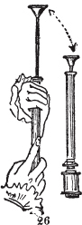
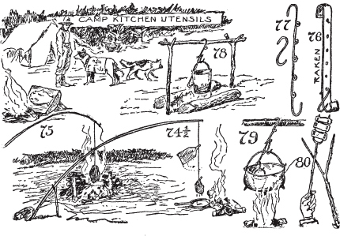
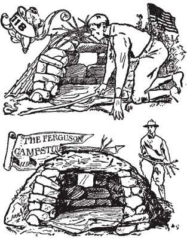
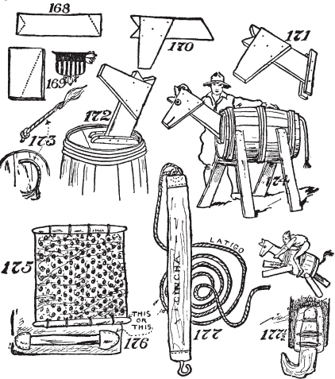

书目说明
这一多佛版本，首次出版于2006年，是1920年由花园城出版公司（纽约州花园城）以《野营知识与林间技艺之书》为题原版出版作品的完整重印本。
文本中发现的小错误和不一致之处来自原版，为了保持真实性，在此保持不变。
国际标准书号 eISBN-13: 978-0-486-80079-0
美国制造多佛出版公司，纽约州米尼奥拉东二街31号，邮编11501
致
乔治·杜邦·普拉特
纽约州环保专员，童子军、运动员和户外活动者
在我工作室中驼鹿头后面的古董高柜抽屉里，隐藏着印第安串珠工艺品标本、鹿皮碎片、动物牙齿制成的项链、一个石制烟斗、我的旧猎刀及其生牛皮刀鞘，还有——小心地包在油纸里的——一块灰熊的风干里脊肉！
但这还不是全部；更重要的是一个神秘的木制小瓶，里面装着海狸的香腺或海狸香(castor)，用一块绣着神秘印第安符号的鹿皮小心包裹着。
这个小瓶是蒙蒂奈印第安人酋长弓箭(Bow-arrow)作为”大药”(big medicine)送给我的。弓箭说——我相信他——当一个人从这个药瓶中吸入海狸香的气味时，这个人的灵魂和身体就会从此永远被对大自然的深厚持久的爱所渗透。同样，当一个人吃了神秘的灰熊肉时，这个人的身体就会获得这种伟大动物的力量和勇气。
在我的男孩们组成的斯巴达式团体——鹿皮人(Buckskin Men)的成员入会仪式中，每个候选人都会得到一薄片灰熊肉和一缕海狸香。
当然，我们知道那些没有浪漫情怀和想象力的人会称这为感情主义。我们户外部落的人承认自己是感情主义者；但我们从经验中知道老弓箭是对的，因为我们自己吃过灰熊肉，闻过海狸香！
虽然作者不能给每位读者实际品尝这珍贵的熊肉，或者直接从已故弓箭亲手制作的木瓶中闻一缕海狸药，但作者希望这种伟大药物的神奇品质能进入并成为本书主题内容的一部分，通过这种媒介感染读者的灵魂和身体，净化他们，用对上帝创造的世界的爱来使他们重获新生。
丹·比尔德
1920年6月
第一章 摩擦生火
如何制作火板、弓、钻杆和指套。印第安火源传说。火焰制造者记录。摩擦棒装备。爱斯基摩指套。弓、弓弦、指套、火板、火盘。引火物、炭化布片、绒球。巴尔干的火焰制造者。无弓生火，co-li-li火锯。易洛魁人的火泵。火压气装置
第二章 撞击生火
白人的方法，如何使用燧石和钢片。在哪里获得燧石和钢片。火石、火绒盒、引火棒和火柴。真正的磷火柴。缓燃引信。如何捕捉火花。燧石和钢片的替代品
第三章 如何生火
一次与新手的经历。现代人对体力劳动的恐惧。火柴。生火器和巴比伦人。营地跳动的心脏。松树胶质柴束。如何在潮湿天气生火。荒野人的火。小引火柴的必要性。好柴火。劈柴的优势。火架。如何开刀。如何削木，如何用刀劈棍子。篝火和议事火。营地会议火把火。爆炸的石头。火的特性。慢火、信号火和熏火。
短口粮的个人经历。最原始的烹饪装备。营地锅钩、绞刑架钩、锅爪、钩子、吊臂、斯佩格利亚钩和萨斯特钩。电报线烹饪工具、铁丝烤架、骨架营地炉。烹饪火、火架、烤肉火堆、营火堆、贝尔摩火堆、煎炸火堆、烘烤火堆。奥雷斯起重机。
营地坑火、豆洞。牛仔火洞。奇努克烹饪火洞。烧烤坑。淘金者烤炉。弗格森营地炉。土坯烤炉。祭坛营火场所。徒步者、侦察员、探险家、测量员和猎人的营地厨房。如何在没有锅、平底锅或炉子的情况下烹饪肉类、鱼类和面包。处理小动物。如何烧烤大动物。
如何制作灰饼、玉米饼、玉米团子、薄煎饼、约翰尼饼、饼干和面团神。制作荷兰烤炉。鹿肉。野外宴会。如何烹饪海狸尾、豪猪和麝鼠。营地炖菜、不伦瑞克炖菜和伯古炖菜。
如何制作自己的驮马。如何制作阿帕雷霍(aparejo)垫。如何制作腰带(cincha)。如何制作拉蒂戈(latigo)皮带。如何打钻石结。如何打斯阔结(squaw hitch)。如何在没有柱子、树木、棍子或石头的开阔地上拴马。马绊的使用和制作方法。拖车架的制作和使用。水牛比尔和迈尔斯将军。如何卸马鞍。如何给马上鞍。如何上马。如何识别西部马。
转运者的转运。早期印第安战士和野生动物。现代对户外的热潮。如何为露营做准备。剪指甲。去看牙医。理发。鹿皮人的口袋。驱蝇剂。防护黑蝇、蚊子、蠓虫和隐翅虫。野性的呼唤
如何选择马鞍。墨西哥马鞍的演变。平头马鞍的诞生。牛仔时代。锯架或驮马鞍。直腿和弯膝。马鞍部件名称。中心火和双肚带
小心独立树木或小树群。森林中的安全。留意好的营地位置。在过河条件良好时过河。保持在蚊子洞的上风处。小心蚂蚁窝。如何判断风向。小屋的演变。如何清扫。如何制作营地床铺。如何分配营地工作。帐篷钉。如何单人搭建帐篷。如何为帐篷挖排水沟。剪刀、滑轮和三脚架的使用
我们最伟大的斧手。斧头的重要性。使用什么样的斧头。如何挥舞斧头。如何移除断裂的斧柄。如何在斧头中固定手柄。意外事故。斧头的头脑。斧头礼仪。如何磨斧头。如何”砍倒”一棵树。如何清理枝条。如何制作甲虫或大锤。如何硬化绿木。如何制作柴火架。如何制作砍木块。正确的砍伐方法。如何为原木制作锯架。如何使用帕巴克尔绳结。如何劈开原木。如何使用锯坑
如何制作生火板、弓、钻具和顶帽
印第安人关于火源的传说
记录保持者生火者
摩擦棒装备
爱斯基摩顶帽
弓、弓弦、顶帽、生火板、火盘
引火物、炭化布条、马勃菌
巴尔干地区的生火者
无弓生火、CO-LI-LI、火锯
易洛魁人的火泵
气动装置
当直立人时代的”不知名生物”和其他类似的恶魔般的人类在这个粗糙的地球草图上游荡时，还没有营火；这些生物所知道的唯一火焰是那些从火山口喷发出来或以闪电形式撞向他们时令他们心生恐惧的火。难怪原始人将火视为神祇，无疑最初是邪恶的神祇，但后来变成了善神。
当巨大的冰原在冰川期覆盖欧洲并迫使人类要么思考要么死亡时，必需性在尼安德特人中培养出了一位史前爱迪生，他发现了如何建造和控制火焰，从而拯救了他的种族免于被冰冻在冰中并像西伯利亚的毛犀牛和大象一样被冷藏保存。
这位被遗忘和无名的冰川野蛮人的火焰是我们蒸汽暖气和厨房炉灶的先驱；事实上，没有它我们就无法取得任何进步，因为不仅是简陋的厨房炉灶，就连大型工厂和发电厂都依赖于那位在欧洲冰川中瑟瑟发抖、牙齿打颤、蹦跳着试图保暖的野蛮人所做的发现。
但是我们这些营火爱好者对原始火焰的兴趣就像尼安德特人建造它们一样，比对钢铁厂的咆哮熔炉、火山爆炸熔炉或任何工厂和商业的科学化、商业化火焰更感兴趣。
我们所喜爱的是在开阔地、在广阔的草原上、在山坡上，或在黑暗神秘的森林中那种和蔼的、老式的营火，正如我们的好朋友霍纳迪博士所说：
我们将堆积松木和云杉，墨西哥灌木根和松散的蒿草，枯竹和有臭味的柚木，用燃烧明亮的柴束在夜晚烧出一个洞—
不久前，作者在加拿大北部未绘制地图的湖泊地区，在两个荒野孤独湖泊之间的水道上露营时，童子军乔·范·弗莱克为自己制作了一套生火装备，包括[图1]用树瘤制成的顶帽，用来固定[图2]用香脂制成的纺锤。[图3]是从立木上砍下的弓；不是用来射箭的弹性弓，而是有永久弯曲的弓。[图4]是火盘，放在生火板下面，当纺锤旋转时收集从槽中掉落的炭尘。
[图5]是生火板，用距离营火三码内的一棵枯死香脂树制成。
为了生火，我们的童子军需要一些引火物，他从距离营地几码内的雪松树皮中获得了这些材料。这确实是一次新奇的经历，因为材料很少如此便利。火在几秒钟内就生起来了，这让我们的印第安向导惊叹不已，也让碰巧在我们营地所在的水道上穿越的一些驼鹿猎人感到高兴。
首位证明现代文明白人能够像原始人一样用摩擦木棍生火的是美国人——华盛顿美国国家博物馆的沃尔特·霍夫博士。但是将这种生火方法推广普及，并引入英美童子军及女童组织的却是一位英国人。
根据美国印第安人传说，在红人之前居住在地球上的动物人生活在加利福尼亚的黑暗中。有土狼人、秃鹫人、白足鼠人，还有许多其他传说中的生物。在遥远的东方某处有光明，因为太阳在那里，据梅里曼博士所说，是我们印第安人中的蜂鸟人从东方偷来了火种，将它藏在下巴下面。那个痕迹至今仍在。下次你看到蜂鸟时，注意它下巴下面那块亮红色的火焰斑点。
现在你明白为什么营地中生火的关键人物配得上Le-ché-ché（蜂鸟）这个称号了。
如果有人能用火板、纺锤和弓在创纪录的时间内生火，那么Le-ché-ché这个称号就更加合适了，因为正是蜂鸟人将火藏在了oo-noo树中，直到今天，当印第安人需要火时，他们还是会去oo-noo（七叶树buckeye）树那里取火；当然，前提是他们身上没有火柴，并且有像前面提到的童子军那样的白人男孩教过他们如何像印第安人祖先那样生火。但即便如此，oo-noo木材也必须是枯死干燥的。
密歇根州伊普西兰蒂的奥斯汀·诺顿在1912年4月用39.2秒生火；华盛顿的弗雷德里克·C·里德在1912年12月用31秒生火；圣保罗的欧内斯特·米勒用30秒生火，但真正打破”摩擦木棍”生火纪录的是作者的一名丹尼尔·布恩之子(Sons of Daniel Boone)童子军成员亚瑟·福布什（这个童子军组织早于英国童子军和美国童子军），他在纽约麦迪逊广场花园体育用品展上用29秒完成了生火。福布什先生是在作者和许多见证人面前创造了这个纪录。此后，这位先生又将自己的世界纪录缩短到了26.2秒；到现在，甚至这个纪录也可能已经被打破了。
“摩擦木棍”是一种富有诗意、引人注目且有趣的生火方法，但在今天，除了教会人们克服障碍、用手头的工具做事、以原始人的活力、精确和自信来思考和行动之外，它几乎没有实际用途。
自从作者还是个小男孩时，他就读到过通过摩擦”两块木片”或”两根木棍”来生火的方法，当时他的印象是，现在仍然认为，没有人能以那种方式生火。当我们发现摩擦木棍的记述时，这可能是对弓钻和其他类似摩擦生火器具的粗糙描述。对于弓钻，首先需要一个
（图1、1A、1B、1C和1D）。这是一块半圆形的石头或鹅卵石，一个半圆形的木瘤或木结，或者可以用软木制成并镶嵌一块石头。顶帽底部总是有一个浅洞或凹槽；见图1、1A、1B、1C和1D上的S。顶帽是爱斯基摩人的发明（图1C）；他们通过将纺锤的尖端上端插入钻在蛇纹石或皂石上的洞(S)中来保持纺锤直立。
作者有一个大卫·阿伯克伦比少校亲自为他制作的顶帽。这个精美的器具是用坚硬细腻的木材雕刻成甲虫形状（图1B）。它镶嵌着铜和半宝石。凹槽洞是用一些沙子和图23所示的钻头钻入一块翡翠(B)中的。有一段钢管插入木钻的末端，用来在坚硬的翡翠上钻洞。然后将翡翠镶嵌或嵌入顶帽底部的中央，并用胶水固定在那里，如图1B所示。作者还有一个由美国野营俱乐部的埃德蒙·西摩为他制作的顶帽。这个顶帽是一块钻了洞的石化石，如图1A所示。
不必告诉读者，当使用弓作为动力时，旋转的纺锤不能用裸手按住，因此为此目的使用顶帽是必要的。图1C显示了一个爱斯基摩顶帽，其设计可以用生火者的嘴来固定。
是一根木棍或树枝（图3、3E、3F和3G），大约一英尺半长，直径近一英寸，有一个永久的弯曲——这个弯曲可能是天然的，也可能是人工制作的。弓上连接着一根松弛的皮带或某种耐用的绳子。爱斯基摩人比印第安人更有创造力，他们用象牙制作精美的弓，从海象牙上雕刻，将其削薄并用一条松散的海象皮条穿起来。
皮绳或皮带系带的缺点是容易太油腻，所以如果能获得一条鹿皮，一根大约两英寸宽的鹿皮带，并将其拧成绳子，可能最适合这个目的（图6）。
钻杆是旋转的木棒（[图2]、[2A]、[2B]和[2C]），通常约一英尺长，我们的美洲印第安人在没有弓的情况下使用它（[图7]）。旋转棒或钻杆在中部可能有四分之三英寸的直径；持续使用和削尖会逐渐缩短钻杆。当它变得太短时，必须制作一个新的。钻杆的末端不应该像铅笔一样尖锐，而应该有一个钝的或圆形的末端，用来钻入生火板，从而产生细小的热炭，随着时间的推移会变成火花：也就是说，一个燃烧的余烬。
生火板（[图5]和[5A]）应该用云杉、雪松、香胶冷杉、落叶松、杨木根、椴木，甚至干燥的白松、枫木，可能还有七叶树木制成。它不应该用黑胡桃木、橡木或栗木，或任何具有胶质或树脂特性的木材制成。生火板应该由容易粉化的干燥材料制成。霍夫博士推荐用枫木制作生火板，或者叫”炉床”，正如童子军手册中所称的那样。制作生火板约十一英寸长，两英寸宽，四分之三英寸厚。
在板子边缘附近，距离端部两英寸处，开始切一排缺口，每个缺口四分之三英寸长，切穿生火板，底部要更宽。在每个缺口的内端做一个凹陷，深度刚好能够固定钻杆的末端，当你进行初步旋转时，这会逐渐扩大插座以适配钻杆的末端。
接火盘是一个木片、木瓦或木制除尘盘，用来接住被旋转钻杆推出的炭化粉尘（[图4]）。使用接火盘也是爱斯基摩人的想法，但他们在漂木生火板本身上切一个台阶（[图8]）作为接火盘。
当你能获得它们时，炭化的棉布或亚麻布是很好的引火材，但最好的织物是旧的土耳其毛巾。
找一块平石头（[图10]），一块宽木板，一块光滑、坚硬、裸露的土地；点燃你的布料，当它开始猛烈燃烧后，用折叠的纸片（[图9]）、一块方形桦树皮或另一块木板快速熄灭它。这样快速拍打火焰会…熄灭它们而不会扰动炭化部分（[图10]）。或者用你的脚快速踩灭火焰。将你的引火材或引火物保存在防水盒中；锡制烟草盒很适合这个用途，或者像我们的祖先一样——将它保存在引火材号角中（[图30]）。
非常细的干草是很好的引火材，还有被称为马勃菌(puff-ball)或恶魔鼻烟盒(Devil’s snuffbox)的蘑菇。大的马勃菌可能在树林边缘找到，它们是很好的引火材或引火物。它们的制备方法是用绳子悬挂并晾干，然后切成薄片，放在板上敲打，直到所有黑色粉尘（“鼻烟”）被敲出，这时它们就可以用作引火材或引火物了（[图11]）。在古代，有一种从德国进口的蘑菇、毒菌或真菌，用作引火材，但野外技能在于利用手头的材料；因此不要忘记飞鼠（[图12]和[13]）、白足鼠（[图14]）和田鼠，或短尾草地鼠，都习惯收集好的
用来做它们温暖的巢：一些鸟类也是如此——夏季黄鸟、蜂鸟和绿雀。虽然废弃的蜂鸟巢太难找到，但去年绿雀的巢更容易发现，它们像杯子一样悬挂在两根树枝之间，通常在手能够到的范围内，当秋天树叶掉落时相当显眼。
雪松树皮，红雪松（[图15]）和白雪松，其他树木的干燥内皮，干桦树皮，当撕得很细时，都是很好的引火材。无论你使用各种形式的摩擦棒还是燧石和钢，都需要在引火材或引火物中接住火花以产生火焰。
首先找一个平坦坚固的基础来放置你的生火板，然后用弓弦绕钻杆半圈，如图所示（[图16]）；现在用左手抓住顶针，将钻杆的一端放入顶针的插座孔中，另一端放入生火板上的插座孔中，用左脚按住生火板。将你的左手腕紧紧贴在左小腿上。开始工作时缓慢水平地来回拉弓，直到它运转顺畅，像演奏低音提琴时使用琴弓一样使用弓，但每次都要拉弓的整个长度。当它运转顺畅时，加快速度。
或者当你感觉钻头正在咬入木头时，用手指套(thimble)用力压住，不要太用力，但要足够用力地握住钻头，这样它就不会从插孔中滑出，而是会继续咬入木头，直到开始出现”锯末”。起初它会显示棕色，后来会变成黑色并开始冒烟，直到浓厚的烟雾宣告你已经产生了火花。在这个阶段，你轻轻地用一只手扇动冒烟的余烬。如果你扇得太猛烈，经常会发生这种情况，粉末就会被吹走。
一旦你确信已经获得了火花，就把粉状余烬举起放在火盘上，小心地在上面放一束火绒(tinder)，然后吹气直到它爆发成火焰([图8A])。或者将火绒轻轻地包在火花上，用手拿起来，做圆周运动摆动，直到火焰燃起。
即使到今天，整个喀尔巴阡山脉和巴尔干半岛的农民仍然用”摩擦棒”生火。但这些人不是露营者，他们有一个永久性的生火装置，通过竖立两根柱子制成，一根代表火棒，另一根代表插孔手指套。纺锤水平地在这两根柱子之间运行，压力通过绕在两根柱子周围的皮带或绳子来固定，这样能使它们相互拉近。纺锤用弓来操作，与已经描述的相同，火是以同样的方式产生的。
我在丛林工艺营地(Woodcraft Camp)的学生们成功地用椅子的横档作为纺锤，用包装箱的一块木板作为火板，另一块作为插孔木，用他们鹿皮靴的绳子作为弓弦来生火。然而他们没有使用弓，需要两到三个男孩来生火，一个拿着纺锤，另外两个在鹿皮靴绳子上锯动([图17])。
由两块竹子或钓鱼竿制成。这是邦托克伊戈罗特人(Bontoc Igorot)使用的最古老的生火工具，现在在菲律宾人中很少见到。然而，几乎所有的菲律宾男孩都知道如何制作和使用它，我们这里的男孩和男人也应该知道。它被称为”co-li-li”，由两块干竹子制成。首先将一段两英尺长的干枯竹子纵向劈开，在其中一块上，将管子内衬的纤维组织的一小块区域劈开并挑选，直到变得相当松散([图18])。就在挑选的纤维上方，但在竹子的外侧，横向切出一条窄槽([图18G])。这块竹子现在是机器固定的下部或”火板”。原管的另一半的一个边缘被削尖成凿刃状([图19])；然后用双手各握一端，缓慢而用力地在板子的槽中来回锯动，然后更快速地操作，从而在从竹子内侧挑选出来的火绒团上或事先放在那里的火绒上产生一堆干燥的灰尘锥形堆([图20]和[图21])。[图22]是火盘。
我们的权威人士阿尔伯特·欧内斯特·詹克斯先生说：“十几次摩擦后，槽的两侧和那块的边缘被烧毁；很快可以明显闻到烟味，在三十几次摩擦之前，可能会看到烟雾。通常在一百次摩擦之前，更大量的烟雾告诉我们，不断落在堆上的干燥灰尘变得越来越焦化，直到最后一个小火花落下，将燃烧传递到已经加热的灰尘锥上。”
然后小心地举起火板，如果那撮灰尘正在闷烧，现在可以用手轻轻扇动，直到火绒着火；然后可以吹成火焰。
[图23]显示了另一种形式的钻头。对于这种钻头，需要在纺锤的下部安装一个重轮。在其中心打一个孔，钻头安装到这个孔上。[图23]中的那个装有一个我在谷仓下面找到的生锈铁轮。[图23]C显示了一个陶制重轮，这是我许多年前在俄亥俄州辛辛那提市米尔斯溪底部的砾石坑中发现的。它是砖红色的，装饰着奇怪的字符。多年来，我不知道这个独特的工具是用来做什么的。我把它送给了法拉盛高中(长岛)，我相信它仍然在那里。火钻通过上下移动弓而不是前后移动来旋转。
[图7]实际上与[图16]和[图17]相同，区别在于：省去了弓和皮带，纺锤在手掌之间旋转，这是加利福尼亚印第安人、澳大利亚土著、卡罗琳群岛、中国、非洲和印度土著以前的做法。
许多美洲印第安人以这种方式制作摩擦火。他们通过在手掌之间滚动来旋转细纺锤，当施加压力时，手逐渐滑向纺锤的粗下端。要再次将手放到钻头顶部需要练习和技巧。就个人而言，作者不能声称在这种方法上有任何成功。
最简单的摩擦生火方法是犁耕法，只需要一块带有凹槽的火板和一根在凹槽中来回推拉的摩擦棒（[图24]）。以攀登麦金利山闻名的贝尔莫尔·布朗船长在火柴被水浸湿时，就用这种方法生火。然而，这种方法比用绳索和弓生火更困难。这种方法至今仍在马来群岛使用；当地人将火板放在树桩或石头上，跨坐其上，用尖头钻具在板上来回犁耕，直到生火。用时：四十秒。
当然，无需告诉任何人可以用放大镜（[图25]）或相机镜头，或由两片老式手表玻璃组合制成的镜头来生火。但由于太阳并非总是可见，镜头不会在野外丛林中自然生长，在先驱者的营地和木屋中也找不到，而且手表玻璃在野外寿命很短，我们将把这种不用火柴的生火方法归类为课堂教学内容。
在美国独立战争前后，某位绅士发明了火活塞（[图26]），通过突然压缩空气产生的热量来点燃真菌制成的火绒(punk)。
这位古代绅士如下描述他的发明：“圆筒约九英寸长，直径半英寸；末端是一个螺纹，用来旋接装有蜡烛和一些真菌的储料箱。钢杆连接着一个实心活塞或柱塞，图中未显示，因为它在管内。这根杆有一个滚花头，管上有一个小孔用于进气，当活塞拉到顶部时，有一块可以拧开，用于给活塞涂抹油脂。我发现猪油最有效。”
“从储料箱中取一小块真菌，放入燃烧室，拧紧部件，用末端将活塞拉到顶部直至停止。如[图26]所示用双手握住器具，将末端放在桌子上或靠着任何坚固物体，可以是垂直、水平或竖直方向，尽可能快速地向下压活塞。这种快速的空气压缩会使真菌着火。活塞冲击后立即拧开储料箱，空气会冲入并维持燃烧直到真菌烧尽。注意，在点燃火绒时，必须将真菌从燃烧室稍微提起，以便将火绒放在其下方，否则不会点燃。

“这里可以注意到，这样构造的器具比火竹管有明显优势，后者的真菌插入太深不容易取到。”
但在缅甸他们有同样的想法。那里的苦力仍用火活塞点燃香烟。菲律宾人也使用相同的装置，通过突然将活塞压入气密圆筒来点燃粘在活塞末端的棉花团，当快速拔出活塞时发现棉花已经着火，所以那位殖民地绅士可能曾前往印度群岛并从缅甸人或菲律宾人那里借用了这个想法。无论如何，我们今天在野外不使用它，但它在这里有一席之地，因为它属于摩擦生火，对我的读者中那些具有实验和发明精神的人可能是个好建议。
[*] 这不是俄亥俄和密西西比河谷的七叶树，而是加利福尼亚的坚果七叶树，加州七叶树(Æsculus Caiiformca)。
[†] 现在的记录是十一秒。
白人的方法；如何使用燧石和钢铁
在哪里获得燧石和钢铁
火种盒、火绒盒、引火物和火柴
真正的火柴
慢燃火绳(Slow match)
如何捕捉火花
燧石和钢铁的替代品
前述的摩擦生火方法不是白人的方法，也不是我们先驱祖先使用的方法。作者能记起的白人先驱使用摩擦棒生火的唯一例子，是俄勒冈印第安人起义和大屠杀的难民用被闪电击中的树木碎片制成摩擦棒生火。在那种情况下，他们显然匆忙离家，没有带上燧石和钢铁。
但这一个例子本身就足以向所有户外人士展示了解和掌握摩擦生火技能的重要性。就像我们的好朋友，艺术家、探险家和作家贝尔莫尔·布朗船长一样，任何人都可能在某个时候遇到火柴被浸湿、损坏或丢失的困境，不得不要么生吃食物，要么求助于摩擦棒来生火。
然而，需要记住的是燧石和钢铁是
尽管我们殖民时期的绅士们使用火药手杖，或者被遗忘的班克先生的气火装置，但通过撞击生火，也就是通过燧石和钢铁摩擦生火，在美国一直普遍使用到相当近的年代，而且在我的篝火俱乐部朋友中，以及许多吸烟者中，这种方法仍然被广泛使用。
在燧石和钢铁的时代，所有的枪支都是通过这种方法发射的。[图33]展示了一支老式火枪的枪机；击锤夹着一片燧石，一小片鹿皮折叠在燧石的内侧边缘，为击锤上部提供握力，该部分是螺丝固定的。要发射枪支，击锤被拉回到全待击位置，钢片设置在击锤对面，并通过铰链连接到火药盘的顶部。当扳机被扣动时，击锤落下，燧石撞击钢片，将其击回并同时将火药暴露在火花下，火花通过枪管侧面的点火孔点燃枪内的火药。这就是我们所有祖先直到内战时期都在使用的击锤和枪机类型，也是南方联军直到多纳尔森堡战役时仍在使用的击锤类型。在古代，有些人拥有没有枪管的燧发手枪，这些手枪只用来点燃火绒以便生火。但是当人们用燧石和钢铁生火时，双手必须充当击锤的作用，刀背可以作为钢片，然后一片燧石或粗糙的石头和一片火绒就能产生点燃火焰所需的火花。
在美好的拓荒者时代，当我们都穿鹿皮衣服而不担心羊毛价格，当我们戴浣熊皮帽而不在乎毡帽价格时，从迈尔斯·斯坦迪什和乔治·华盛顿到亚伯拉罕·林肯，每个人都使用燧石和钢铁。[图27]展示了我们祖父祖母使用的十种不同形式的钢片。
天然状态的燧石可以在许多州找到，但通常，任何被印第安人用来制作箭头的石头都可以作为燧石的替代品，也就是说，任何粗糙或玻璃质的石头，如石英、玛瑙、碧玉或黄铁矿。软石、石灰石、板岩或皂石不适合这个目的。
大多数古老的钢片都是这样制作的，使用者可以握住它们，同时将手指穿过椭圆形钢片的内部，[图28]（左手使用）。美国童子军的一些童子军长用破碎的平十美分锉刀片制作自己的钢片，但这是不必要的，因为每个户外的男女都应该携带一把大尺寸的折刀，折刀刀片的背面，或者猎刀刀片的背面，对于任何掌握了使用技巧的人来说都是足够好的钢片。
但如果你必须在机械车间制造钢片或自己制作，让它们有一英寸宽，四分之一英寸厚，长度足以形成像[图27]中所示的椭圆形。将锋利的边缘打磨圆滑。如果你愿意，可以将钢片扭曲成[图27]中显示的任何形状，以模仿你曾祖父使用的那些。
但作者见过的最精巧的燧石和钢铁装置如[图31]所示。这是一个小型德国银盒子，里面仍然装着一些原始的真菌火绒和一片古老的、饱经风霜的燧石。盒子周围装有带状钢片，整个装置非常小，可以放在背心口袋里。这曾经是费城市的菲利普·哈格纳中尉在革命时期的财产，也就是说，他是城市财产的保管人。在英军占领城市之前，他用牛车将基督教堂的钟从费城运到伯利恒。菲利普·哈格纳大约在1700年从萨克森来到这里，在费城日耳曼敦定居。这个银盒子是由美国童子军特拉华和蒙哥马利县童子军专员艾萨克·萨顿先生赠送给国家童子军专员的。
牛角火绒盒是通过锯掉牛角的小端然后锯掉尖端制成的（[图30]）。接下来在牛角坚实的小端钻一个小孔，与更深处的天然开放空间连接，一条比孔大的生皮条或细绳从小端穿过并在内部打结固定，防止被拉出。牛角的大端用一片厚鞋底皮革封闭，皮革通过细绳连接，在末端打个硬结，将细绳穿过塞子中心的孔，直到结紧贴着皮革圆盘；这应该在湿皮革干燥前完成。如果细绳和皮革塞子与牛角紧密配合，放入牛角中的干烤布条、炭化棉花或任何用作火绒的物质都能完全防潮。
这些古老的硫磺”火柴棒”(spunks)只不过是引火木或引火物，因为它们无法通过摩擦点燃，而是通过将硫磺端放入火焰中来点燃。按照我们现代便利性的标准，它们显得非常原始。在英国被称为”spunks”，在美国被称为”matches”，长度从三到七英寸不等，通常每束包装一打到两打，用稻草丝捆绑在一起。一些制作于1830年的火柴棒(spunks)被认为足够珍贵，在英国约克博物馆被精心保存（图32½）。图32中所示的这些是长岛产品，由已故的约翰·哈勒兰赠予作者，他是长岛最著名的古董收藏家。这些被精心保存在作者工作室的古董中。但它们的长度还不到以前在西部保留地使用的一半。在工作室的古代火柴旁边还有两个带有燧石和钢片的古老拓荒者引火盒。这些引火盒由锡制成，里面装有许多烤制的布条。内盖充当熄灭器，用来在你点燃盒子锡盖中的蜡烛后盖住盒子里的火柴棒(punk)或引火物（图32）。
我们今天使用的火柴就是从这些古老的硫磺火柴棒(spunks)演变而来的。当作者还是个小家伙，在伊利湖岸边的西部保留地时，他对一位老妇人制作硫磺火柴非常感兴趣。她在明火上用铁锅融化硫磺，然后将一些松木片的一端浸入其中。然后让木棒端部的硫磺冷却硬化。这些火柴大约有铅笔那么长，只能通过将硫磺部分插入火焰中来点燃。因此，尽管作者出生在路西法火柴(Lucifer matches)的时代，但仍然幸运地见证了我们现代”安全”火柴的同时代祖先的制造过程，并记住了这一切。
也就是说，通过摩擦点燃的火柴，是艾萨克·霍尔登议员的发明。据《帕尔·马尔公报》报道，霍尔登先生说：“早上我通常4点起床学习，那时我使用燧石和钢片，在使用中发现非常不便。当然，我和其他化学家一样，知道产生瞬间光亮所需的爆炸性材料，但很难用那种爆炸性材料在木头上产生火光，我想到在爆炸性混合物下面放硫磺。我做了这个实验，并在我下一次化学讲座中展示了它，那是我在一所大型学院讲授的课程。”
因为每个真正的林地专家既是学生又是感伤主义者，这里简要介绍这些火种工具的历史，以便在我们沿着”小径”前行时为他提供娱乐。所有这些东西都是标记通往我们墙上按钮的路径的标记，现在那个按钮能产生电灯。其中一些，如在巴比伦废墟中发现的陶土圆柱体，只在历史意义上有用，但其中许多对林地技能来说是本质上实用的。
要制作适合黄铜圆筒的慢燃绳或火柴绳(punk rope)，可以使用在五金店购买的蜡烛芯或马车芯；这种芯绳直径约为三分之三英寸。俄亥俄州扬斯敦的童子军专员约翰·H·蔡斯建议，绳子可以用机械车间或车库的废料制作；但我认识的最好的林地专家之一是弗雷德里克·K·弗里兰先生，他使用图34所示的装置，这是用黄色引信绳或火柴绳(punk rope)制成的，可以在雪茄店购买。他用铁丝将软木塞固定在绳子的一端，然后将绳子的另一端穿过为此目的而锉掉的黄铜弹壳的末端。引信绳的末端必须烧焦，以便捕捉火花。为了产生火花，他使用刀背（图35），像使用燧石和钢片一样敲击燧石片，将火柴绳(punk)的烧焦端贴在燧石上，如图表所示（图29）。松散的棉花和各种植物纤维扭成绳子，浸泡在水和火药中，干燥后会制成好的火柴绳(punk)。
将绳子的烧焦端放在燧石上，烧焦部分距离燧石边缘约三十二分之一英寸，这是钢片要敲击的地方；用左手拇指按住火柴绳(punk)，如图表所示（图29）。将刀子举在约六英寸高的地方，与燧石成约四十五度角，转动刀子使刀背的边缘能够敲击，然后以约三十五度角快速刮击下来。这应该在第一次或第二次敲击时将火花送入火柴绳(punk)中。现在吹动火柴绳(punk)直到它通体发光，你就准备好点燃引火物了。将火柴绳(punk)推入一把引火物的中间并吹动它直到燃烧，就大功告成了！
所有这些用于打火的便携式装置以前被称为”striker-lights”或”chucknucks”。
马来人既没有燧石也没有钢片，巧妙地用一片破瓷器代替燧石，用竹节代替钢片，他们通过用破瓷器敲击竹节来产生火花，就像我们用燧石和钢片一样。
[*] 今天可以在纽约市百老汇501号的Bannermans购买燧石，他们那里还有美国士兵使用过的古老钢片。燧石也可以从纽约罗切斯特的沃德自然科学机构购买，作者还在纽约的一家陆海军用品店发现了大量的燧石。
如何铺设和点燃篝火
与新手的经历
现代人对体力劳动的恐惧
火柴
生火者和巴比伦人
营地跳动的心脏
松树的胶粘柴束
如何在潮湿天气生火
伐木工人的火堆
小引火材料的必要性
好的木柴
劈开木材的优势
柴架
如何打开小刀
如何削木；如何用刀劈开木棍
篝火和议事火堆
露天聚会火炬
爆炸的石头
火的品格
吹火、信号火和熏烟
一群二三十人曾经造访作者的工作室，恳求他与他们一起远足，说他们打算在户外烹饪晚餐。我们进行了远足。作者请这些先生们为生火收集木材；他们热情地这样做了，堆起了大约四分之一捆木材。这堆木材中没有一根比手臂还细的，许多都有腿那么粗。细雨蒙蒙，一切都很潮湿。当所有其他远足者围在一旁时，其中一人小心地点燃一根火柴，将其靠近这堆潮湿的捆木。他试了一根又一根火柴，然后无助地转向作者，说道：“先生，点不着。”在场的人都没有看出这种情况的幽默之处！
如果有人告诉作者，可以找到二十五到三十个人，其中没有一个会生火，他会认为这种说法极不可能，但如果有人告诉他，任何聪明人都会试图通过将火柴贴到捆木上来点燃潮湿或干燥的捆木，他会认为这个故事完全不可信。然而，真正令人惊讶的是，即使有充足的燃料和大量火柴，知道如何生火的人竟然如此之少。
可能有必要提醒读者注意这样一个事实：只需要很少的湿气就能破坏安全火柴盒上的划擦面，并阻止火柴本身点燃。所谓的客厅火柴，点燃时会发出爆裂声，经常将燃烧的火柴头射向人的脸部或衣服上，对于带入森林来说是太危险的火柴。鸟眼火柴在野外极不可靠，但老式的、有难闻气味的路西法火柴，有时称为硫磺火柴，那种可以在哈德逊湾贸易站买到的，成块包装且经常装在铁罐中的，是野外技能者、猎人、探险者和远足者的最佳火柴。大城市的大多数户外装备店要么有这些火柴，要么可以为顾客采购。当这些火柴中的一根潮湿时，可以通过在头发中摩擦来使其干燥。
如今，体力劳动似乎被每个人都看作是耻辱或惩罚，而不是特权；然而，能够劳动确实是一种特权，拥有活力、精神、愿望和做事能力确实是一种特权。劳动是实干家和那些生活在户外的人的必要品质；没有人可以期待在不劳动的情况下成功完成像生火这样简单的事情。
为了为火堆获得燃料，人们必须勤奋地使用斧头（图39、42和43）；必须根据风向和附近易燃材料仔细规划火堆；必须明智地收集和选择燃料。
逃避者、半途而废者或规避者在户外没有立足之地；他们的栖息地是在大城市巴比伦人的大白路上。他们甚至不知道火的乐趣；除非有建筑物着火，否则他们从未见过火。他们的身体由蒸汽散热器加热，他们的食物在某个他们不知道的神秘地方烹饪，由顺从的服务员端给他们。当真正的生火者刚刚达到男子气概的全盛时期时，他们将已经死去，鲜花在他们的坟墓上盛开。
贝尔莫尔·布朗船长说荒野的小径是它的动脉；我们可以补充说，所有的小径都来自营地或通向营地，而篝火是营地活着的、赋予生命的、跳动的心脏；没有它，一切都是死气沉沉的。这就是我们户外兄弟会都热爱火的原因；这就是燃烧木材的气味对我们的鼻孔来说是香火的原因；这就是当作者应该讲述其他事情时却忍不住谈论它的原因。
不要忘记，在炎热干燥的天气里生火是小孩子都能做的事，但在寒冷、潮湿、多雨的日子里，或者当第一场潮湿的雪覆盖着所有树枝并用白色不适的泥泞斗篷覆盖潮湿地面时，在潮湿、泥泞的森林里完成同样的行为需要一个真正的野营者！那时生火会激发出野外技能者的所有技巧和耐心；然而，当他采取适当的小心时，无论雨、雪还是冰雹都不能让他失败。
在宾夕法尼亚州的山区，剩下不多的老猎人们总是用干松木或沥青松木条生火。
他们用斧子劈开一根松木原木（图42），然后将其切成约一英尺长、大约和他们粗糙拇指一般粗细或稍粗一些的木条（图40）；之后他们开始削这些木条，切出深刨花（图37），但小心地让刨花的一端仍附着在木头上；他们用刀刃绕着木条转圈削出卷曲的刨花，直到这根引火材看起来像圣诞节早晨在诺亚方舟玩具中发现的那些木制小树一样（图37）。
当一个猎人完成三根或更多木条后，他将它们搭成帐篷形状（图38）。这三根从松木原木中心切出的木条是干燥的，可能还含有树脂，因此点燃火焰所需要做的就是用火柴点燃卷曲刨花的底部（图38）。
然而，在这样做之前，他们会小心地准备好一些沥青松、白松或劈开的松节的小木片（图36）。他们将这些木片围绕削好的木条放置，可能还会加一些铁杉树皮，当这些都燃烧起来时，他们已经开始添加更大的白蜡木、黑桦木、黄桦木、糖枫或橡木条了。
要知道，虽然沥青松很适合生火，但它不是用作火堆本身燃料的材料，因为沥青产生的浓烟会熏黑炊具，给食物带来难闻的味道，破坏咖啡的口感，即使是篝火也不是令人愉快的伴随物。
在北方森林，在桦树的土地上，绿桦树皮被普遍用作引火材料；绿桦树皮燃烧起来就像焦油纸一样。但无论是用桦树皮、削过的松木条还是各种干木头来生火，都必须记住
比天然形态的木材燃烧得更好，直径12到14英寸的原木最适合劈开作燃料（图42）；还必须记住，在生火时，引火材料削得越细小，用一根火柴就越容易点燃（图36），之后添加燃料就是简单的事情了。火必须有空气才能燃烧，也就是要有通风，因此经常使用小帐篷形状来堆放引火材料。
对于普通的、不重要的火堆，“火鸡式”摆放（图54）很方便，但对于营火和烹饪用火，我们使用火架来放置木材，当然在森林中我们不叫它们火架。它们不是铁制的；它们要么是绿木原木要么是石头，林间人称之为”火架”。
既然我们在讨论生火，也许值得提醒读者注意，每个户外人士都应该知道如何最高效、最安全地使用小刀、折叠刀或猎刀。
对于我们这些在削木时代长大的人来说，有人认为有必要说明如何打开折叠刀可能看起来奇怪甚至好笑。但今天，我想不起认识的男孩中有哪一个知道如何正确使用刀子或能够熟练地削木条，然而很少有人比我认识更多的男孩。不仅如此，我每年还要在野外与一营的男孩们待两个月，教他们如何用刀子和斧子做本书中描述的这些事情。
可以肯定地说，当老一辈人还是孩子的时候，他们中没有一个男孩不能相当熟练地削木头，许多12岁的男孩都是这门艺术的行家。我还清楚地记得在我到达童子军年龄12岁之前，用折叠刀雕刻的戒指、饰品和小玩意儿所带来的巨大乐趣。然而今天，男孩们使用刀子如此笨拙，让旁观者看得胆战心惊。
为了正确打开刀子，用左手握住它，用右手拇指甲在指甲槽处抓住刀片（图45），使指甲的线条形成一个很小的角度；也就是说，尽可能接近垂直（图46），否则你会把拇指甲向后弯曲直到疼痛或折断。将刀片拉离你的身体，同时将刀柄拉向身体（图47和48）。继续这个动作，直到刀片完全打开并直接指向你的身体前方（图49）。
练习这个动作并养成习惯；这样你在开刀过程中就永远不会有刺伤自己的危险——你将通过通常所说的直觉正确快速地打开刀子，但这实际上是训练和习惯的结果。
削木时代始于折叠刀的发明，在1840年或1850年左右达到顶峰，在内战后的某个时候消失，大约在1870年。削木时代的所有老削木匠都是远离身体削木的。如果你练习那种削木方式，它会成为一种习惯。
印第安人使用弯刀并朝向身体削木，但他们刀具的奇特形状消除了意外刺伤或割伤的危险。鞋匠使用锋利得邪恶的刀具并朝向自己切割，经常被严重割伤，有时会危险地受伤，因为一条大动脉沿着人腿的内侧([图41]½)附近延伸，那里是鞋匠腿上大多数疤痕出现的地方。当你削木时，不要像[图41]中那样把木棍放在两腿之间削木，总是像[图44]中那样远离你削木。
[图40]显示了在劈开木棍时使用刀具的正确方法，这样不会拉伤刀柄后部的弹簧，同时会帮助你引导刀刃并倾向于做出直的劈开。不要试图用刀撬开木棍，否则你迟早会折断刀刃，这对荒野人来说是件严重的事，因为这会让他失去最有用的工具之一。
记住，细木片比纸张能更安全、更可靠地点火。所有新手首先尝试用干叶子和干草来点火。他们这样做是因为他们习惯使用纸张，自然会寻找叶子或干草作为纸张的替代品。但经验很快教会他们，叶子和草会产生讨厌的浓烟或快速、不可靠的火焰，这往往无法点燃木头，而当适当小心使用时，干木头的小木片从不会无法给出满意的结果。
露营者使用许多种类的火，都依赖于当地的燃料供应；在朝鲜的森林砍伐地区，人们使用扭成的草作为燃料，在我们西部平原上，猎人以前使用水牛粪，现在他们使用牛粪，也就是牛的干粪便，来生火做饭和煮咖啡。在鞑靼和中印度的祖恩带，牛粪被收集起来，像柴火一样堆积并晾干作燃料。几年前在堪萨斯他们使用玉米棒作为柴火。不用说，水牛粪不适合篝火或任何需要大火焰或照明的火。
通常比营火大得多，可以通过将木头堆成圆锥形([图50])来制作，在堆的中心放置所有准备好的引火物，或者可以将木头像小木屋风格([图51])那样堆积，在第一层下面放置引火物。
在这两种形式中，都在木棍之间有意留下空气间隙，这确保了火焰开始在引火物中闪烁的那一刻就有快速而充分的通风。
最好的议事火形式如[图52]所示，被称为
因为它是从佛罗里达州一次营地会议的类似装置中，作者得到了他的”火炬火”的建议。平台由任何方便的材料制成，并铺上厚厚的草皮、沙子或粘土地板作为火坑。
塔的建造与童子军信号塔完全相似，但规模较小([图52])。
无论光滑的岩石看起来多么诱人作为生火的方便地点，都不要忘记在石头上铺几铲沙子、土或粘土作为火床，因为潮湿的岩石在受热时可能产生蒸汽，要么猛烈膨胀，要么像炸弹一样爆裂，将碎片四处散射，甚至危及聚集在火堆周围的人们的生命。
澳大利亚土著取6英尺或更长的干原木，将它们相距3英尺或4英尺放下，在几个地方点燃它们。让较短的原木从外面与它们相接，并在周围放置相当大的卵石，然后他们在地上伸展身体，睡在两排火之间，当木头烧完时，石头继续辐射它们之前吸收的热量一段时间。许多美洲印第安部落都有自己特殊的生火方式，所以一个废弃的营火往往能通过制作它的部落来揭示身份。
露营者制作慢火的老方法也被家庭主妇用于他们的开放式壁炉，包括将三根原木的发光端放在一起。
当原木的末端烧掉时，原木被向前推，这样继续直到原木完全烧完。这样安排的三根好原木会燃烧一整天或一整夜，但必须有人偶尔推动它们，使它们的末端聚在一起，这时它们将热量从一个传到另一个，来回传递，从而保持余烬热([图53])。但谁愿意整夜坐着看火呢？我更喜欢使用现代方法并整夜睡觉。
削尖两根坚固粗重的木桩，每根长约5英尺，在每根木桩的后部靠近顶端处切一个凹槽，用于支撑或背靠，将木桩打入地面，间距约6英尺。将三根原木一根叠一根放置，形成壁炉后部的原木墙。接下来取两根较短的原木用作火架，在这些原木上再放置一根原木，整个装置就完成了。这种火堆可以燃烧整个最长的夜晚，如果制作得当，几乎不会造成麻烦。通过在前面的原木和火背之间放置燃料来给火堆添柴。
当选择最高的陆地位置时，烟雾信号可以在20到50英里的距离内看到。信号火通常用干叶、草和杂草或”细柳条”(wiry willows)、香脂枞树枝、松树和雪松树枝制作，因为这些材料能产生大量烟雾，可以在很远的距离看到。阿帕奇人有一套简单的代码，所有户外人员都应该采用。根据美国民族学局局长J.W.鲍威尔的说法，印第安人只使用三种信号，每种信号都由烟柱组成。
三个或更多烟柱表示洪水、火灾或敌人即将带来的危险。这个信号可以从一个营地传递到另一个营地，在极短的时间内警告一大片地区。越是紧急，使用的烟雾数量就越多。这些火通常制作得如此匆忙，以至于它们可能看起来像是通过一次又一次地将成堆的草和叶子扔到余烬上而产生的烟雾。
“这个信号通常通过产生一个连续的烟柱来制作，表示对几个目的的注意，即：当一个部落对某个地点感到厌倦时，或者草可能被小马吃光了，或者其他原因需要迁移，或者如果报告有敌人，这需要进一步观察才能决定未来的行动。任何不寻常事情的意图或知识都会通过让一根烟柱升起来传达给邻近的部落。”
“当在发出注意信号后进行营地迁移时，队伍选择了一个他们打算停留的地方，直到有必要或希望迁移时，就会制作两根烟柱，通知他们的朋友他们打算留在那个地方。在长期居住期间的其他时候也会制作两根烟柱，通知邻近的部落营地仍然存在，一切都很顺利和安静。”
因此，白天三个或更多烟雾，或夜晚三个或更多火焰，是警报信号，一个烟雾是注意信号，两个烟雾告诉我们一切都很好、和平和快乐。
用烟雾发信号的常用方法是用灌木枝或草制作闷烧火，并使用毯子作为灭火器。通过用毯子覆盖火焰然后突然移开，会突然产生一个大的球状烟雾团，一定会引起任何碰巧朝火堆位置看去的人的注意。
如果可行的话，自然最好铲掉雪，但就我个人而言，除了新下的雪，我从来没有这样做过。或多或少冻结到地面的旧雪可以被踩实直到变硬，然后用木棍铺成灯芯绒作为炉床（图55和56），或者用树皮（图57），在这种地板上生火是一件简单的事。使用”火鸡”铺设法，其中一根木棍充当火架的作用（图56）。
不要忘记收集大量的小木材（图58），然后按照已经指导的方法生火（图58）。
读者会注意到在所有这些插图中（图55、56和57），壁炉背面都有原木、石头或堤岸。当一切都被雪覆盖时，使用原木作为背靠是完全安全的（图56），但在其他情况下，原木可能会闷烧一个星期，然后引发森林火灾。
只有傲慢、轻率、自私的新手(Cheechako)才会使用活着的生长树木来生火。真正的野外技能者知道，火焰可以在几分钟内毁掉一棵威严的森林大树，而上帝自己也无法在四十到一百年内替换它。
在我们谈论在雪地生火的时候，可能值得注意的是，夏天无法居住和无法到达的沼泽在冬天往往是最好的露营地。水结冰并越来越低，留下方便的冰架（图57）作为储藏室。茂密的树林和灌木为冬季风提供了极好的屏障。图59显示了冬季营火的安排。
在地面上铺一块树皮作为生火的炉床。通过劈开原木并从木材中心取出碎片来寻找干木材，将木材放在帐篷、雨披、外套或毯子的遮盖下。同时在点火时用毯子或类似的东西遮住火焰。火焰开始跳跃，原木开始自由燃烧后，实际上需要暴雨才能熄灭它。
一次短缺口粮的个人经历
最原始的烹饪装备
营地锅钩、绞架钩、锅爪、鱼叉、吊钩、斜杆和吊杆
电报线烹饪用具、线条烤架、骨架营地炉
烹饪火、火狗、烘烤火堆、营火堆、
贝尔莫尔火堆、煎炸火堆、烘焙火堆
奥雷斯起重机
无论老露营者身在何处，无论距离他上次在野外过夜已经过去多长时间，无论他现在担任多高或多低的社会或官方职位，只需闻到一丝篝火的烟味，或一丝煎培根的香味，就会把他带回那条孤独的小径。在想象中，他将再次围绕着他的小营火：在沙漠中，在阴森松树的树荫下，在阿拉斯加的雪地中，在落基山脉的滑石中，或在阿勒格尼山脉的松树林中，视情况而定。
空气中那淡淡的燃木味道或培根的美味香气，会在那一刻不仅抹去他视野中的桌子、文件和办公家具，还有生活的所有人为造作。甚至打字机的滴答声也会变成马蹄的滴答声，街道会变成峡谷，交通的噪音变成山洪的轰鸣！
这没什么好谈论的，也没什么好争论的，篝火的气味确实有魔力，《阿拉伯之夜》的所有神秘和魔法都蕴含在煎培根的香味中。
几年前，美国篝火俱乐部秘书阿瑟·赖斯先生和混血印第安人帕特里克·克利里与作者一起，在北方荒野中临时与他们的队伍失散了。他们发现自己在一个孤独的荒野湖泊上，四周环绕着如画的群山，点缀着高大的岩石岛屿，岛上覆盖着圣诞树，整个景观看起来像人们有时在剧院布景上看到的画面。眼前的一切都是宏伟的，一切都是美丽的，一切都是大尺度建造的，一切都很大，包括旅行者们的胃口！
不幸的是，食物供应在失踪的独木舟里；然而，在帕特里克·克利里的装备袋底部进行仔细搜索，发现了三个小的、硬的、圆形的块状物，几周前可能是面包；还有一把茶叶混合着烟草，就这些了！没有盐，没有黄油，没有胡椒，没有糖，没有肉，没有刀，没有叉，没有勺，没有杯子，没有盘子，没有碟子，没有烹饪用具；队伍只有几块石头般的面包块和奇怪的茶叶烟草混合物来满足他们的大胃口。但湖中鳟鱼在跳跃，饥饿的人们很快就捕获了一串精美的斑点美鱼来添加到他们的菜单中。
在湖边悬崖上一棵大云杉树的根部下方，一股冰冷的水晶泉水从苔藓地面喷涌而出。他们在附近生了火，赖斯先生用桦树皮制作了一个小盒子，装满水，将盒子的两端放在绿木制成的火狗(fire-dogs)上，放在热炭上。茶叶（还有烟草）被倒入桦树皮容器中的水里！
令印第安混血儿惊讶和高兴的是，茶很快就煮开了。与此同时，混血儿烤了一些鳟鱼直到鱼变黑，这样做是为了让木炭或烧焦的鱼皮能给鱼增加味道，在一定程度上弥补缺盐的不足。面包块被烧得发黑，这次不是为了味道，而是为了让面包变得足够脆，让人能够咬进去而不会有折断牙齿的危险。
今天，作者觉得在那个孤独的湖泊上的那顿宴席，距离最近的活人几英里之外，比他后来在纽约这座奇迹之城参加的任何伯沙撒盛宴都更美味、更令人满足。
因此，在讨论烹饪火和营地厨房这个主题时，他自然从以下内容开始：
包括两根直立的叉状棍子和一根waugan棍(waugan-stick)，从一个叉子横放到另一个叉子上，越过火堆。或者可能是一根speygelia棍(speygelia-stick)斜着插在火前的地面上，或者也许是一根saster杆(saster-pole)，用来悬挂或吊挂在火前的一块驼鹿肉、鹿肉、山羊肉、山羊肉、鲸脂、海狸肉、臭鼬肉、兔肉、麝鼠肉、土拨鼠肉、松鼠肉或任何命运可能送来的东西。
有各种形式和设计，但它们不是以前在老宅大开放壁炉中如此熟悉的S形东西，也不是昨日男孩们曾经在写字本页面上挣扎和损毁的可恨S形标记。
如果任何一个营地锅钩是用旧式习字本或字帖里的方式画出来的，那么它会招来老式学校教师的愤怒（连同别的东西），降临到那个犯错学生的可怜脑袋上。因为这些锅钩的形状并不规整，其形状和设计很大程度上取决于制作它们的可用材料，也不少受到露营者个人喜好的影响。例如，被称为
这个名字不是暗示着与绞刑架过分亲密的人类罪犯，恰恰相反，它是一根质朴实用的分叉木棍（[图60]、[61]、[62]和[63]），由小树制成。[图60]显示了如何选择小树以及在一个结实分叉下方的哪里切断它。[图61]显示了小树枝被修整到合适长度，两端各有一个分叉。在上分叉处你会注意到有一个枝条是细长有弹性的嫩枝。[图62]显示了如何将这根嫩枝向下弯曲，用绳子或用绿树皮制成的带子捆绑，并将其固定在主干上形成一个环，这个环可以轻松套在横木棍上，如[图63]所示。[图62A]显示了一种方便的结法，用来固定树皮绑带。
当横木棍穿过绞刑架钩的环时，前者被重新放置在两根分叉木棍的叉口中，如[图63]所示，锅子或水壶、桶子被挂在下方的分叉上。你会注意到下分叉位于主木棍的一侧，而上分叉的嫩枝分叉则从相对的一侧伸出。这种安排并不是为了让锅子在火上保持适当平衡所必需的；同样的规则适用于所有其他的锅钩。
通过查看图解（[图64]、[65]和[66]）会最好地理解，这些图显示了它的演变或逐步发展。通过这些图解你会看到木棍的切法使分叉可以挂在横木棍上，烹饪器具、锅子或水壶可以通过将手柄滑入切在木棍上与分叉相对一侧、靠近锅爪下端的凹槽中而悬挂在火上。这是一个真正诚实的Buckskin(鹿皮)或Sourdough(酸面团)锅钩；它是一种制造时间很少且在任何有木棍生长的地方都容易制作的工具，或者在任何可能发现堆积在岸边的”怪异”木棍或漂流木的地方。

比锅爪更容易制作。它是一根像锅爪一样的分叉木棍，但在靠近下端的地方不是切凹槽，而是将一根钉子斜着钉入木棍中，水壶挂在钉子上（[图67]和[68]）。鱼叉钩的缺点是需要露营者在装备中携带钉子供应。在漫长而危险的旅行中，没有Sourdough(酸面团老手)会用钉子给自己增加负担。然而，鱼叉钩对于可能在国家较为人口稠密地区露营的童子军、女童军和各种徒步旅行者来说是一个很好的模型。
可能是gibbet(绞刑架)的讹音，但它是一个更人道的器具。制作支架钩（[图69]）比制作前面的锅钩需要更多的时间和技巧。它是定点营地的有用钩子，在那里人们有时间开发或多或少复杂的烹饪设备。[图69A]显示了如何切割两根分叉木棍以拼接在一起，还显示了如何用几根铁丝钉将这个拼接处钉在一起，[图70]显示了如何将铁丝钉敲弯固定。
在这样的书中给出所有这些设计的细节，不是因为期望任何一个露营者都会使用它们全部，而是因为有时候其中任何一个都可能正是所需要的。然而，很好说明的是，最实用的营地锅钩是锅爪和鱼叉钩。
在制作锅爪时，应该注意将凹槽切在分叉枝条的相对一侧，在爪子的另一端，要足够深以牢固地固定烹饪器具的手柄。
当作者在狂风肆虐的北方进行长途旅行时，他的队伍有一个像窃贼一样弯曲、像高等数学问题一样多结的锅爪。虽然毫无疑问队伍中的某个人制作了这个倒霉的东西，但至今还没有决定这个功劳属于谁——由于这些人天生的谦逊，没有人声称这个荣誉。这个畸形的锅爪多次导致炖菜洒出，更不用说丢失了煮米饭。幸运的是，队伍中一个是沉稳的印第安人，一个是长老会教徒，一个是童子军，一个是贵格会成员，因此空气中并不脏话连篇，唯一的评论是：“哦，我的天！”“我的灵魂！”和”天哪！”
厨师绝望地把这个邪恶的东西扔进火里，嘟囔着暗示火可能会指引这种锅钩应该去的地方。当它燃烧时，邪恶的灵魂化作烟雾消散，印第安人制作了一个新的锅爪(pot-claw)，一个体面的锅爪，具有正直的品格和更牢固的缺口。这个新锅爪以其仁慈的存在为营地带来了和平与善意，并展示了即使制作像锅爪这样卑微的东西也需要细心和谨慎的必要性。
营地锅钩应该有不同的长度；长的用来把容器放在靠近火的地方，那里热量更强烈；短的用来让容器远离火，这样内容物不会烹饪而只是保温；中等长度的用于慢炖或缓慢烹饪。
这不是意大利语，而是一个短工具的长名字。叉杆是一根分叉的棍子或有缺口的棍子([图71]和[73])，要么支撑在分叉的棍子上([图71])，下端用石头压住，这样上端的分叉提供一个悬挂物品的地方，悬挂在火上方或火前方，有时也会以同样的方式使用有缺口的棍子，如[图73]所示。在地面足够柔软的地方，棍子被斜着插入土中，这样可以在没有其他支撑的情况下保持位置。叉杆被牛仔和其他生活在木材稀缺地区的人们广泛使用。
烤肉杆是一根长杆，使用方式与叉杆相同。肉类悬挂在它上面，放在火前进行烘烤([图74½]和[75])，或者水壶悬挂在它上面，放在火上煮水([图74])。
许多露营者喜欢用普通的电报线为自己制作临时的烹饪用具。在我们祖父辈厨房的古老开放式壁炉中，有悬挂在烟囱下的链条组成的trammel(悬挂装置)，用短锅钩将物品挂在上面悬挂在火上；还有由铁带制成的raken(悬挂架)，上面打孔用于连接短铁锅钩([图76])。一些巧妙的露营者受这些古老器具的启发，用电报线制作raken和短锅钩([图77])。通过将电线扭成一系列短环，每个环都可以用作连接锅钩的地方，就像古老raken上的孔一样。他们声称电报线raken的优点是重量轻且易于打包。

在这些raken中的一个上，你可以根据需要将水桶挂得高一些或低一些([图78])；不仅如此，你还可以([图79])在大水桶里放一个小水桶，当水满时，用于烹饪谷物而不会有烧焦的危险。
所有这些器具的缺点是必须随身携带，零件迟早会丢失，这时露营者必须依靠那些”带着树皮”的东西，如绞刑架钩(gallow-crook)、锅爪(pot-claw)、钩子(hake)、臂杆(gib)、叉杆(speygelia)或烤肉杆(saster)，或者他可能回到最初的原理，削尖绿树枝的分叉，串上培根、野味或鱼，这样就可以在热炭上烘烤([图80])。我们不把肉放在火上方，因为外面会在烹饪前就烧焦，烟雾会破坏肉的味道。
据塞顿先生说，在遥远的不毛之地，他们使用烤肉杆时还配备一个由木瓦状木片制成的扇子，用绳结固定在一根电线和一根绳子上；风——当它心情好的时候——会使绳子不停地旋转。但同样的效果可以通过一根浸过水以防燃烧的绳子来实现，这根绳子还通过用手旋转肉而被扭转([图75])。这样的绳子会或多或少缓慢地解开和缠绕相当长的时间，从而使肉的所有表面都暴露在悬挂在其前方的烘烤火的热量中。你会注意到我们说的是前方；让我们再次强调读者必须记住，不要将肉悬挂在火焰上方。在[图75]中，肉的画法可能会让人误解其位置，以为是要悬挂在火上方，而实际意图是悬挂在火前方，如[图74]所示。在作者的童年时代，他最大的乐趣就是用湿绳子将苹果悬挂在开放式火炉前，看着它旋转，直到热量使汁液透过果皮冒泡，苹果逐渐被完全烘烤。
露营者通常对装备要求很高，甚至要求携带烤架；同时他们也有真正露营者的实用精神，避免携带像家用厨房那样笨重的烤架。因此他们采取了折中的方法，在装备中打包一把长度相等的电报线（[图81]），每根电报线的两端都仔细弯成钩子形状（[图82]），可以调整固定在两根放置于两个原木火狗上的绿色木棍上（[图83]），在这样安排的电报线上，肉类和鱼类可以很好地烤制。
这不是一个坏方案，但露营者应该准备一个小帆布袋来装这些电报线，否则露营者迟早会把它们丢掉，而不愿忍受时不时丢失一根的烦恼。[图84]、[85]、[86]、[87]和[88]展示了一个小型
这是一个男童军巧妙设计的装置。两根电报线被弯成三角形（[图84]和[85]），三角形在A点的两端保持开放或未连接，这样它们可以轻松穿过竖直电报线B和C的环圈（[图87]），从而形成一个可拆卸的骨架炉具（[图86]）。提供这个装置的年轻人当时使用的是一个旧的煤油灯（[图88A]），他将其强行塞入炉具的下三角（[图86]），电报线三角形的弹性将其固定在位置上（[图88B]）。
但如果要使用电报线露营炉具，就没有必要携带灯具了。这个炉具的设计使其可以拆卸并轻松打包，重量微不足道，但任何类型的灯具，甚至是灯笼，携带起来都很麻烦。
不过，电报线露营炉具也可以按照[图90]所示的方式弯制，但这样做的唯一目的是发展个人的巧思，或者出于经济考虑，否则人们可以在户外用品店花很少的钱购买基于相同原理制作的折叠式金属网露营烤架，带有可插入火堆周围地面的支腿，如[图88]和[89]所示，烤架从中间折叠后，支腿可以向后折叠，使整个装置成为一个平整的包装。但让我们抛开电报线的人工制品，回到真正的事物上，来谈论铺设和点燃真正的
火堆规划和建造得越仔细，烹饪就越容易完成。铺设这些火堆时首先要考虑的是
在露营中，火狗与我们家中壁炉的柴架相同，用途也相同。但家用柴架是重型钢条，通常前面有装饰性的黄铜立柱，在露营旅行中携带会非常不便，而在真正的狩猎或探险活动中考虑携带柴架更是荒谬至极。因此，我们在野外使用绿色原木、草皮或石头作为火狗。我们经常有一根背木(back-log)，火狗靠在其上；这根背木如[图91]所示。在这个特殊情况下，它既充当背木又充当火狗。在其正上方的平面图([图92])中，有两根并排的原木，起到火狗和厨房炉具侧壁的双重作用([图93])。[图94]展示了
有时称为圆形火堆。后部按小木屋风格堆叠，前部保持开放。在开放的围栏内，通过像[图91]中那样堆叠木棍来生火。三面的原木都能辐射热量，当肉类悬挂在前面，从saster([图74]½)的末端悬吊时，可以轻松彻底地烘烤。
营火的建造着眼于两个目的：一是将热量反射到前面的开放帐篷中，二是构造得能够持续很长时间。当人们生营火时，希望能够裹着毯子入睡，并带着火堆会持续到早晨的安慰信念。
营火是用两个火狗推靠在一根背木上制作的([图95A]和[B])，这形成了营火的基础。两根直立的绿色木棍C([图95])倾斜放置，由其他木棍D([图95])支撑，D的顶端放在C木棍E处切出的凹槽中([图95])，底端插入地面。在直立木棍C旁，堆放原木F形成火堆的后部。然后在两个火狗AA上生火，靠着F原木，后者会缓慢燃烧，同时将热量反射到开放的帐篷前部。这种火有时也用作烘烤火，但这一目的的真正火堆是通过以下方式制作的
[图96]和[97]。第一个草图显示了平面图，第二个显示了火堆的透视图。炉具由两根侧原木或火狗组成，火在其上燃烧，燃烧后形成一堆红热余烬，在火狗之间，两根原木横放在火狗上，一根原木放在顶部，这样火焰就从它们前面升起([图97])，将热量送向面包或bannock。
在燃料原木前方的适当距离处，放置一根waugan-stick，从一个火狗延伸到另一个火狗。
在野外作业中，平底锅几乎是唯一携带的家用器具，它被用作烤面包机、烘烤器、烧烤架、油炸锅和炖锅的组合体。穿鹿皮的人和酸面团工人用它制作面包，在面包底部用炭火烘烤后，将平底锅倾斜放在火前，手柄靠在waugan-stick上，可以很好地烘烤面包顶部([图97])。我从不列颠哥伦比亚省到佛罗里达州都见过烘烤火的使用，但是探险家贝尔莫尔·布朗上校向我展示了waugan-stick与烘烤火结合使用的方法，因此我将其称为贝尔莫尔布局(Belmore Lay)。
在两根原木、两排石头或草皮之间建造([图98]、[99]和[100])；通常在这些原木之间生火，将两侧用作火狗，或者可以将木棍放在火鸡布局中([图100])，这样木棍本身就形成了火狗，在火势旺盛燃烧之前暂时允许通风，之后它会沉降为热炭，处于适合煎炸的状态。要知道过热的煎锅会点燃油脂或培根，在一般情况下这可能很有趣，但当培根不足时，这就是一件严重的事情。
如[图101]所示。在这种情况下，作为反射烤箱使用的平底锅通过将木棍穿过手柄上的孔来支撑。
这是一个乡村起重机，形状与老式开放式壁炉的起重机完全相同，但巧妙地用精心挑选的带有两个分叉的绿色木棍制成([图102])。主枝的长端在A处切断([图102])，小心不要切穿绿色树皮B([图102])。然后将后者B的树皮弯曲到短桩A上([图102])，形成环C([图103])，用绿色树皮绑扎到主杆上，并滑过立柱D([图104])。E处的分叉支撑起重机并保持其水平位置，靠在D上为此目的留下的短桩上。这个装置的实用性完全取决于所拥有的时间和技能。一个人很难在单夜露营时使用奥雷斯，但如果要在同一营地待一个星期，制造一个精巧的奥雷斯起重机对于营地厨房来说是非常值得的，同时也是非常有趣的工作。营地厨房火的下一步将包括可以称为坑火的内容，这将在下一章中描述。
在前面关于如何生火的章节中，你已经被告知如何选择柴火、制作引火物和点火；现在你只需要记住，在某些特殊方面，所有的火都是相似的；它们都必须有空气来呼吸和食物来吃，否则它们就不会生存。
在火的情况下，我们不称空气为呼吸，而是让它自由循环，称之为通风。木材是火吃的食物，必须是可消化的，消化不良的火是用朽烂、潮湿的木材马虎地堆在一起喂养的，而不是用精心挑选的干燥劈开木材，火可以清洁地燃烧、均匀地消化，同时释放出最大的热量。

要产生通风，火当然必须从地面升起，但不要像一堆pick-up sticks(游戏棒)那样马虎地建造。这样的火可能开始时还好，但当支撑的木棍烧完后，它会倒塌成一堆，将烹饪器具掉入火焰中，打翻咖啡或茶壶，把培根从”煎锅倒入火中”。
无论是男人、女人、男孩还是女孩，如果他、她或它期望成为一个露营者，他或她或它必须学会在营地周围保持有序和整洁。无论衣服多么脏，无论脸部看起来多么污垢，营火周围的地面必须干净，烹饪器具和柴火、锅钩和waugan-sticks，都要有序并像军官下一分钟就要来检查一样仔细安排。
我所有的读者都必须记住，他们将通过他们的营火被了解和”评估”为真正的行家还是菜鸟、笨蛋、新手和cheechakos(新手)，被第一个遇到他们踪迹的酸面团工人(Sourdough)或老手评判。
[*] 如果凹槽在同一侧，锅子会平衡得更好。
营地坑火、豆子洞
牛仔火洞
奇努克烹饪火洞
烧烤坑
金矿工人的烤箱
弗格森营地炉灶
土坯烤箱
祭坛营火场所
徒步者、童子军、探险者、测量员和猎人的营地厨房
如何在没有锅、平底锅或炉灶的情况下烹饪肉类、鱼类和面包
处理小动物
如何烧烤大型动物
真正的营地厨房不过是安排得当的壁炉，配有乡村式的吊臂和锅钩，如前所述，但在森林砍伐的地区，或在平原和草原上，坑火非常流行。坑本身在多风的平原上为火焰提供遮蔽，这是双重必要的，因为这种露营地点没有保护，以及所使用的燃料种类。水牛粪块以前在西部平原上使用，但现在被牛粪块取代。水牛粪火是穿鹿皮长发的平原人和同样富有画面感的牛仔的炊火；但水牛群早已踏上了通往大分水岭的小径，那里所有足迹都指向一个方向，它们脚步的雷鸣声已永远消逝，就像涂彩印第安人的呐喊声一样。浪漫而富有画面感的平原人和狂野欢闹的牛仔们追随着水牛群，长长的草原篷车队列已成为过去，但猎人的坑火仍在使用。
是在地面挖掘的浅沟，在其两侧各放置两根原木；在原木之间的坑中生火（图105），但可能最著名的坑火是营地的无火炊具，以其名字为所有人熟知和喜爱：
图106显示了用石头砌成的豆坑的半截面。然而，豆坑也可以用粘土砌成，或者简单地让潮湿的土壤保持自然状态。这个坑火地点的使用方式与前一个不同，因为在豆坑中生火并燃烧直到坑壁被充分加热，然后移除火焰并放入豆锅，之后用灰烬和土壤覆盖整个东西，让它慢慢烹饪。
牛仔坑火只是在土地中挖掘的沟渠（图107），在开始处有一个盆状洞。如果能获得，就在沟渠上放置木棍，在木棍顶部铺设草皮。图107显示了坑火和沟渠烟囱的截面视图，图108显示了同样的俯视图。
在移除草皮时应小心不要弄破它们，这样即使没有木棍，也可以通过让草皮跨越沟渠来用草皮本身覆盖通风烟囱。在沟渠的末端，草皮被堆砌起来，形成一个短烟囱。
奇努克火坑(Chinook Fire-pit)是在美国西北部使用的，似乎是普通营火支架与交叉原木和牛仔火坑的结合。图109显示了这种布局的透视图。图110显示了布局的俯视图。图111显示了比图109更陡峭的透视图，图112显示了截面图。通过检查截面图以及更深的透视图和平面图，您会注意到两根原木放置在火架上，中间留有空间。后原木放置在另一根后原木A和B的顶部（图112）。火架的末端推靠在底部后原木B上，两根后原木由桩子C、C固定在位。在两根顶部原木D和A之间（图112和110），放置较小的燃料或劈柴。
当火燃烧时，热炭掉入坑中，当那里有足够数量的余烬时，可以将它们耙向前方，将煎锅放在上面（图112）。奇努克火适合烘烤、煎炸、烧烤、烘烤，是一个出色的全能营地厨房炉灶。
是粗心建造的，通常是围绕浅坑的火炉，侧面用草皮或石头建造。流浪汉火适合用来快速生火煮水壶（图113）。
在老式烧烤会上，我们的祖先烤整头牛，牛被放在巨大的烤叉上，用曲柄手柄转动，非常类似于使用绳索或链条和水桶的老式井把手。
用于那些盛宴（图114），在那里他们烧烤或烘烤整只羊、鹿或猪。在美国篝火俱乐部的一次聚会上，他们就这样烧烤了一头猪。
火坑大约四英尺宽，四英尺深，足够长（图114），允许在坑的两端各生一堆火，肉本身下面没有火，理由很充分，因为融化的脂肪会滴入火中，导致火焰燃起、冒烟并破坏肉质。
已故的荷马·达文波特(Homer Davenport)（老派著名漫画家）几年前在他位于新泽西的野生动物农场举办了一次烧烤。当达文波特不画漫画时，他在饲养野生动物。在达文波特烧烤会上，有一个挖在岸边的火坑（图115）；这样的安排被称为
在图表中可以看到，畜体被固定在一根绿木烤叉上，烤叉穿过横木上的孔，并嵌入底部原木的插座D中；烤叉通过如A、B或C所示的手柄转动。坑内用石头或砖块铺设，通过大火加热至足够烘烤肉类的温度。
这是另一种岸坑烤炉，我在蒙大拿州见过日本铁路工人使用。通过在岸边挖洞制作，使用石头或旧铁片制成的搁架。[图116]显示了淘金者烤炉的横截面，石门已就位。[图117]显示了淘金者烤炉的透视图，石门放置在一侧。

接下来我们来看烤炉，第一种被称为
通过用石头或草皮建造一个圆形小屋([图118])，然后用树枝覆盖，在树枝上堆放草皮、粘土或泥土([图119])。烤炉通过在内部生火加热，当温度很高且火焰熄灭后，将食物放入其中，并堵住开口以保持热量从而烹饪食物。
这是内战时期士兵教给作者建造的一种。蓝军士兵通常使用敲掉两端的旧桶([图121])。他们要么将其嵌入岸边，要么用粘土覆盖([图120])，在其中生火，火焰烧毁了木桶但留下了烘烤的粘土作为烤炉的侧壁。桶头([图121A])被保留下来，用于在烘烤时堵住烤炉前部；用石头或草皮覆盖烟囱孔。[图122]、[123]、[124]和[125]展示了如何通过编织绿色枝条然后覆盖粘土来制作土砖烤炉，之后以与前述桶式烤炉相同的方式使用。
这是一种营地炉或壁炉，也是所谓祭坛壁炉的一种形式，其目的是在烹饪时保护背部。马塔西索用石头或草皮建造([图126])，像任何其他营火一样使用。
这是一种营地炉，经常出没于肯塔基州老岸舔地区的布恩童子军们习惯建造，并在上面烹饪大型河道鲶鱼或小池塘鲈鱼及其他食物。岸舔炉由平石制成，有一层或两层高([图127]和[图128])。布恩童子军在五十多年前在肯塔基州肯顿县兴盛一时。
由原木([图132])、石头、草皮或填充草皮或石头的原木([图131])建造，顶部铺设粘土([图130]和[图132])。粘土顶部一端比另一端更宽，按照著名营火的设计([图129])，用石头制作，当无法获得粘土时有时使用。
祭坛火和马塔西索的优势在于厨师在烹饪时不必弯腰驼背地趴在火上。所有这些烤炉和壁炉都适合多少带有永久性的营地，但对于快速和短期营地来说，建造这些烤炉和祭坛壁炉是不值得的。
在处理营地烹饪时，从最原始的方法开始是恰当和正确的。因为当一个人除了用手头材料制作的烹饪器具外别无他物时，为了准备美味的食物，他必须展现真正的野外技能知识。
因此，首先用甜桦木或类似木材的绿色嫩枝刺穿肉类，在火前烘烤，或将肉夹在嫩枝的分叉末端之间([图133])，或者更好的方法是
为了做到这一点，选择一根带叉的棍子，修剪掉叉子的尖端，但要留得相当长（[图134]），然后削尖叉子的末端，在肉块边缘附近将它们穿进穿出（[图135]），这是通过在将肉串到第二个叉子上之前稍微将叉子拉拢来完成的。树枝的天然弹性会将肉块拉得很平很平（[图135]），准备在火焰前烘烤，不是在火焰上方。非常厚的驼鹿肉或牛肉排都可以用这种方式烹饪。记住要有防火栅栏和一根好的背部木材；这样前端木材下方会有热炭，背部木材上有火焰，为前方的肉块提供热量。每隔几分钟翻转一次肉块，直到快熟时才撒盐。任何种类的肉都可以这样烹饪；这是运动员们烘烤培根的最爱方式，我还见过仅用叉状棍子就将鸡肉烤得很漂亮。这是通过将鸡肉剖开，用叉子穿过鸡腿和鸡身两侧来完成的。
扭卷是童子军对这种面包的称呼。扭卷是用面团制作的，在手掌间滚动直到变成一根长而粗的绳子（[图138]），然后螺旋形地包裹在干燥的棍子上（[图139]），或包在带树皮的棍子上（[图137]）。线圈应该紧密靠近但不要相互接触。现在将棍子放在两个直立支架的叉子上，或放在烘烤火堆前的两块石头上（[图140]和[图141]），或放在坑火的热炭上。缠绕扭卷的棍子的长端用作把手来转动扭卷，使其在各面都能很好地变成褐色，或者可以将其直立放在火焰前（[图142]）。
可以用与烤鲱鱼相同的方式烹饪：即将其抹在从树干劈开的厚板或木板的平面上（[图145]），或平坦干净的石头上，并将其支撑在火前，就像使用反射烤箱烹饪时一样（[图146]）。当饼的一面烤好后，可以使用猎刀或为此目的削制的小木铲将其翻转，然后在另一面烹饪。或者可以将平石放在火上用作煎锅（[图116]和[图128]）。我曾用这种方式烹饪了一条大的沟鲶鱼，发现没有必要剥鱼皮，因为没有油脂，鱼皮牢固地粘在热石上，留下白色的肉质片状且精致，可以用小刀或用树枝削制的筷子轻松取出。
可以用叉状树枝制作（[图151]、[152]、[153]、[154]和[155]）。在这个钩子上，肉可以用马利筋或其他纤维植物茎秆或树皮制成的绞合绿色树皮绳，或如果有的话用湿绳子悬挂在火前（[图153]）。
在这种情况下，处理实际上意味着脱衣服，脱掉它们的皮毛并取出内脏。为了准备烘烤或烘焙任何小型毛皮动物，为自己制作一根剥皮棍，使用叉状树枝；叉子直径约一英寸，棍子的长度根据您的方便而定，即足够长以在您坐在野营凳上或蹲在地上时能够到膝盖之间，削尖棍子的下端并将其插入地面，然后拿起您的浣熊、负鼠、松鼠或麝鼠，将叉状棍子的尖端戳穿对应您自己脚后跟的薄弱部位，就像[图155]中的棍子戳穿那里绘制的小动物脚后跟后面的薄弱部位一样。这样悬挂后，工作人员可以舒适地处理动物。如果蹲着，动物的鼻子应该刚好离开地面。首先脱掉毛皮大衣。要做到这一点，用锋利的刀子划开皮肤，从喉咙中央开始切到尾巴底部，小心不要切得太深以免穿透包含肠子的内皮或囊袋；当到达尾巴底部时，用手指将皮肤向后卷。如果为了毛皮而剥皮，请遵循后面给出的指示，但不要破坏任何皮肤，因为皮革在营地周围有很多用途。脱掉皮毛并取出所有内脏后，从有香腺的动物身上取出香腺，在前臂和大腿肉质部分切一个口，切出那里能找到的看起来像神经的小白色东西。这将防止肉在烹饪时有强烈或麝香味。
首先处理胴体，然后将其拉伸在黑桦木棍的框架上，因为这种甜木不会给肉带来令人不快的气味或味道。
接下来在坑的两端各生一堆大火（[图114]），不是正好在动物身体下方，而是要安排得当，这样当融化的脂肪从胴体滴下时不会落在热炭上燃烧起来破坏您的烧烤。用大量小棍子生大火，在您开始烹饪肉之前制造出好的红热炭火。
首先烘烤烧烤野兽的内部，然后翻过来烘烤外部。要完全烤熟，羊大小的动物应该在炭火上至少烹饪七到八个小时。用融化的培根脂肪混合任何你可能有的调料来涂抹肉类，或者不用调料，因为培根脂肪本身对任何人来说都足够好了，或者使用热盐水。
当然，使用木炭更好，但木炭并不总是方便获得。不过，人们可以
在烧烤日的前一两天，用手腕粗细的木头生大火。火旺盛燃烧一段时间后，应该用灰烬或泥土覆盖，让它整夜闷烧，将木头就地转化为木炭而不是完全燃烧掉。
将面粉袋的顶部卷回（[图136]），然后在袋子中间堆成一个面粉锥，在面粉山顶部做一个火山口。
在火山口中倒入一满茶匙——或者用Vreeland先生的说法，放入”一茶匙半满满的发酵粉”，再加上半茶匙盐；将这些与干面粉混合在一起，当完全混合后开始少量地向火山口倒水，一边工作一边搅拌，在你的微型火山内搅拌面团。随着水的倒入，面粉会逐渐从两侧滑入中心的熔浆中，注意避免结块。
面团要尽可能软，不是面糊但要非常软的面团，但要足够硬，能够在撒好面粉的手中揉搓。
将带皮的土豆放在两到三英寸厚的热炭床上，然后用更多的热炭覆盖土豆。如果操作得当，土豆会慢慢烹饪，即使火在上面燃烧。不要愚蠢地将土豆扔进火里，那样外皮会烧成炭而内部仍然生的。
在准备小而嫩的鱼时，如果可能的话，在头部下方鳃相接的地方切开，将手指伸入并通过这个开口取出内脏；然后清洗、清理鱼，在涂抹粘土之前用纸或落叶包裹。将鱼放在硬粘土饼上（[图147]），将粘土折叠在鱼上（[图148]），将边缘压在一起，制成粘土饺子（[图149]）；通过将饺子埋在普通地面火的余烬中或坑火的余烬中烹饪（[图150]）。
一对鹧鸪可以去头、掏空、彻底清洗并用切碎的培根或猪肉细片填充，混合面包屑，大量用盐、胡椒和鼠尾草调味，如果你有后者的话。然后将带羽毛的鸟类用干净的粘土糊满，粘土要软到能粘在羽毛上，外面用较硬的粘土包裹，整个塑造成球形，深埋在发光的炭火中，让它在那里保持一个小时，到时粘土通常会变得几乎像陶器一样硬，必须用棍子敲开。当外层粘土脱落时，羽毛也会随之脱落，留下鸟类精致的白肉，ready to be devoured。
旱獭(Woodchucks)、浣熊(raccoons)、负鼠(opossums)、豪猪(porcupines)、兔子最好烧烤（见[图114]、[115]和[155]），但松鼠和小动物可以通过先清除动物内脏、清理它们、用面包屑、切碎的培根和洋葱填充空腔，然后封闭开口，用硬粘土糊满身体并在余烬中烘烤来烹饪。这样可以将肉密封在泥土包装内，当它烹饪完成并敲开砖状粘土时，皮肤会与破碎的粘土一起脱落，露出多汁的肉类。
切掉鱼头并通过从背部剖开来清理，而不是通常从腹部剖开的方式。在烹饪前给红肉撒盐会使其干燥和坚韧，但鱼应该在仍有自身汁液湿润时撒盐。
在火前加热木板，然后将鱼平摊在热木板或厚板上，用你的猎刀按压，顺着木纹在鱼身上切开缝隙（[图145]）；用楔形木钉固定你的鱼，将木钉打入刀刃切开的缝隙中（[图143]和[图144]）。将厚板支撑在有良好后木和大量热炭的火前以散发热量（[图146]）。
可以使用桦树皮制作的容器来煮沸水，方法是折叠一块或多或少呈正方形的树皮，弯曲角落([图157])折叠并用刺或木片固定([图156])。或者可以用大型动物的胃或一块生皮装满水，然后通过投入热石头来加热水([图158])。在地面挖一个洞，将生皮放入洞中，将边缘拉起以覆盖草皮，用石头压住边缘，在皮中装满水并用热石头加热。[图159]和[图160]展示了如何制作用来夹取石头的夹子。
[*] 最好的木板来自佛罗里达州南部吊床上生长的橡树，这种木板赋予鲥鱼独特的风味，使木板鲥鱼闻名于世。
如何制作灰饼、玉米饼、玉米团子、薄饼、约翰尼饼、饼干和面团神
制作荷兰烤箱 鹿肉
野外盛宴
如何烹饪海狸尾、豪猪和麝鼠
营地炖菜、布伦瑞克炖菜和浓汤
当美国向世界贡献了印第安玉米时，她给了世界一份充满浓缩活力的无价礼物。玉米以其各种形式都是极好的食物能量；背着一个装满nokake或rock-a-hominy(爆裂玉米)的狭长鹿皮袋，印第安人或白人可以穿越大陆而不依赖猎物，永不挨饿。乔治·华盛顿、乔治·罗杰·克拉克、布恩、肯顿、克罗克特和卡森都知道爆米花的营养价值。
美国的拓荒农民和他们的许多后代直到现在，都用早期美国人从印第安人那里学到的方法来干燥印第安玉米。玉米干燥季节自然从玉米收获开始，但经常持续到第一场雪降临。
选择一些玉米穗，将外壳剥回露出籽粒，然后将几个玉米穗的外壳编织在一起([图165])。这些玉米束被挂在树枝或水平杆上，让风吹干([图166])。
由于担心食玉米的鸟类和野兽的危险，这些干燥杆通常放置在农舍厨房门附近，有时放在老农舍的阁楼、柴房或谷仓里。
当然，印第安人没有玉米磨，但他们使用碗状石头来盛玉米，用石杵(像粗制的土豆捣碎器)来研磨玉米。作者最近在马萨诸塞州斯普林菲尔德的鲍德温博士的收藏中看到了许多这样的石制玉米磨。
在西南部，使用的石头会无意中混入很多沙砾到玉米中，因此所有年长印第安人的牙齿都磨损得像被砂纸打磨过一样。
但读者可以使用木碗和土豆捣碎器，在其底部钉上一块锡片或铁皮来压碎玉米制成无沙砾的玉米粉。或者他可以用原木制作像[图163]或[图164]这样的拓荒者磨坊。[图164]中的杵或捣碎器是铁制的。
有一种保存玉米的方法，一些白人仍在实践，正如他们从印第安人那里学到的。首先他们在地上挖长而浅的沟，用干根和小树枝填满，生起旺火，从而在沟底覆盖发光的余烬。然后除去新鲜绿玉米的外壳，将玉米并排放在热余烬上([图167])。这种做法使七月和八月有了”烘烤玉米季节”的名称。
当外壳变焦时，玉米穗被翻转，当各面都烤成褐色时，用专门的棍子或杖巧妙地从沟中抛出。
现在除去烧焦的外壳，用锋利的淡水”蛤蜊”壳帮助将玉米粒从玉米芯上剥离；我经常在宾夕法尼亚州半洞穴的印第安人古老营地中发现这些贝壳。
然后将玉米摊在干净的床单或纸片上，让它在阳光下晾干。正如任何南方出生的人都会告诉你的，这是”非常”好的食物。人们可以整个冬天保存这种食物。
当我还是肯塔基州的小毛头时，孩子们都很喜欢南方田间玉米在煎锅里炒制（[图161]），然后趁热加黄油和盐；我们炒制田间玉米、甜玉米和普通爆米花，但我们从来没有见过碎玉米或玉米粉被炒制并用作食物，我倾向于认为老拓荒者们像他们在肯塔基的直系后代一样炒制玉米，而且这些玉米是在炒制后被压碎或磨碎的。不管怎样，我们知道我们的边境居民靠炒玉米饮食行军作战，索莫塞特、马萨索伊特、宝嘉康蒂、奥克坎卡诺、波瓦坦都吃玉米饼，是他们或他们部落的女人教会了勇敢的史密斯船长在南部海岸的人们，以及更北方的朝圣者们玉米作为食物的价值。制作各种玉米面包的知识以及从”烤玉米棒”到玉米布丁等玉米的普遍使用都是从美洲印第安人那里学来的。正是从他们那里我们学会了如何制作
这种古老的美国食物可以追溯到史前的传说时代，那时太阳从东方天空的洞里出来，爬到头顶，然后潜入西方天空的洞里消失。太阳不再玩这样的把戏，虽然曾经偷走太阳的蜂鸟，下巴下面仍然有标记，但它不再是蜂鸟人，而只是一只嗡嗡作响的小鸟；然而，灰烬饼仍然是灰烬饼，制作方法几乎和那时一样原始。
将半茶匙盐与一杯玉米粉混合，加入沸水直到膨胀的粉末可以用手揉成球，将球埋在一床漂亮的热灰烬（炽热的余烬）中，让它像土豆一样在那里烘烤。与灰烬饼同样著名和简单的是
玉米饼的制作方法是像灰烬饼一样混合玉米粉，但将混合物塑造成圆锥形并在烤箱中烘烤。
混合方法与玉米饼或灰烬饼相同，但烹饪方法不同，形状也不同；它更像是一个非常厚的薄饼。将约翰尼饼拍成一英寸厚、四英寸直径的圆盘形。让煎锅充分供应热油脂，小心地将约翰尼饼放入嘶嘶作响的油脂中。当饼的一面煎得很好时翻面煎另一面。如果烹饪得当，它应该是浓郁的深棕色，有酥脆的外壳。在食用前可以切开并像饼干一样加黄油，或者像热荞麦饼一样配枫糖浆食用。这就是我年轻时的约翰尼饼，五十年前肯塔基州著名的约翰尼饼。在北方我发现任何用玉米粉做的东西都被称为约翰尼饼，他们也把灰烬饼称为”锄头饼”(hoe-cakes)，把玉米面包称为”班诺克饼”(bannocks)，至少他们把营地玉米面包称为班诺克饼。既然班诺克饼在玉米被发现之前就已经存在，我们不如称之为
在北方他们也把这种营地玉米面包称为”约翰尼饼”，但无论称之为什么，它都是有益健康和营养的。取一些玉米粉和小麦粉各一半混合；换句话说，各半品脱；加入一平茶匙和一尖茶匙泡打粉和大约半茶匙盐；将这些干料全部在锅中混合，然后逐渐加水。如果你有牛奶，水和牛奶各一半，将粉调成面糊状，倒入反射锅或煎锅中，在急火前支撑起来；如果开始时慢慢烹饪会很重，但在你的饼发起来后可以花更多时间烹饪。这是一种很好的顶饱的玉米面包。我曾经连续一个月每天都吃它，它确实有很强的营养价值。当做成饼干形状时称为”玉米团子”。
取两杯面粉、一平茶匙和一尖茶匙泡打粉以及半茶匙盐，趁干时充分混合。然后加入牛奶和水，如果没有牛奶就用纯水，按照煎饼的方法混合。和成软硬适中的面团，用撒了面粉的手塑形，做成大约半英寸厚的饼干，放入油脂锅中，用前面描述的任何一种烤箱烘烤，或在火前支撑起来烘烤。如果饼干混合得好、烘烤得好，就会是很好的饼干。
弗雷德告诉我他像做饼干一样制作这个，在煎锅里烘烤。煎锅在面团放入前先加热并涂油，做成大约半英寸厚的饼。然后将煎锅放在慢火上，让班诺克饼有机会发起来并变硬到足以保持形状，然后用棍子支撑煎锅，用反射热将班诺克饼烤成棕色，必须慢慢烹饪并有”漂亮的棕色外壳”。我从来没有做过班诺克饼，但我吃过弗里兰做的，它们很棒。
一个不会翻煎饼的人在真正的林间工艺者应有的技能方面是非常欠缺的。厚重、油腻的煎饼令人厌恶，但真正的煎饼制作起来是乐趣，吃起来也是乐趣。
在平底锅中放入一大锡杯面粉，加入半茶匙盐，再加入一满茶匙和一平茶匙发酵粉；趁面粉干燥时将盐和发酵粉与面粉充分混合。然后用面粉堆成一座小山或火山状，中间留一个小火山口，逐渐倒入水；边倒边搅拌制成面糊。继续这个过程直到所有面粉都变成面糊；面糊应该足够稀薄，倒入平底锅时能迅速摊成薄饼状，但不能太稀像水一样。
用绑在棍子一端的油布或一片培根皮给平底锅上油。记住平底锅只需要足够的油脂来防止饼粘锅；炸土豆时锅里应该放很多很热的油，但薄饼不是土豆，油太多会让饼变得难以下咽。也不要在锅里放太多面糊；我试过一次，当我翻薄饼时，热面糊溅了我一脸，那面糊比我的抱怨还要热。
倒入足够的面糊，几乎但不完全覆盖锅底；当中间冒出密集的气泡，边缘开始轻微冒烟时，就该翻薄饼了。用刀刃松开边缘，然后将锅的远端向下倾斜再快速抬起，让饼在空中翻跟头；接住下落的饼让面糊面朝下，继续烹饪那一面。
把薄饼掉进火里的惩罚是必须吃掉它，不许抹掉灰烬。
先炸一些培根或煮到软烂，然后把培根切成很细的小块，像肉末一样。保存油脂并把培根放在一边；现在取一品脱面粉和半茶匙盐，一勺红糖和一满勺发酵粉，趁干燥时将它们全部混合，然后按前面描述的方法搅入水直到成为面糊状；现在加入切碎的培根，然后用勺子快速搅拌；倒入荷兰烤箱或平底锅中烘烤；根据火势情况，应该在35到40分钟内完成。
当你的营火建在石头制成的炉床上时，如果你把灰烬从热石头上扫掉，把面团神放在上面，然后用平底锅或类似的容器盖住，在平底锅顶部放上热炭渣，你会发现它在炉床石上烘烤得很好很令人满意。
在我们祖父母做饭的老式开放式壁炉中，荷兰烤箱被认为是必需品。荷兰烤箱至今仍被向导和牛仔使用，形式与亚伯拉罕·林肯家族使用的基本相同；它由一个或多或少浅的金属盘组成，可以是铜、黄铜或铁制，有四个金属腿可以放在热炭渣中。上面是一个金属盖子，制作成能盖住底盘，盖子的边缘四周都向上翻起，像一顶帽檐向上翻的帽子。这样制作是为了盛放倾倒在上面的热炭渣，但是
用任何两个金属盘的组合，只要制作或选择得当，使大盘能盖在顶部并紧密重叠小盘，这样就不会让泥土、灰尘或炭渣进入里面的食物。在这种烤箱里可以烹饪面包、饼干、蛋糕、馅饼、炖菜、烘烤食品、肉类、鱼类、禽类和蔬菜，效果令人愉悦。在野营中，两个平底锅经常被用作荷兰烤箱。荷兰烤箱有时在豆子坑中使用([图106])。首先生火，使用足够的小木块、木屑和干树根来制造足够的炭渣填满你的豆子坑。当火在工作时，让厨师准备烹饪
将培根切得尽可能薄，在荷兰烤箱的底部和四周铺一层，像馅饼皮一样。将鹿肉、驼鹿肉或熊排，或普通牛肉切成中等厚度的片，放入2½英寸深，每层都撒盐。切碎一个大洋葱撒在顶部，再盖一层培根和一品脱水，盖上盖子。将坑填一半热炭渣，把荷兰烤箱放在中心，将烤箱周围的空间填满炭渣。用大约6英寸厚的土覆盖，然后把自己裹在毯子里闭上眼睛——你的早餐会在你睡觉时烹饪，当你早上挖出来时会热气腾腾。
豆子坑远非现代发明，动物的干粪便，如”水牛粪饼(buffalo chips)“，早在圣经时代就被用作燃料；在古代巴勒斯坦，他们在放置于填满石头的坑中的锅里炖肉，上面燃烧着在牧群放牧处收集的”粪饼”。
当木材性质使得难以获得适合烤制的活炭床时，在紧急情况下，肉类可以在干净的平石头上烹饪（[图116]、[117]和[128]）。要确保石头是干燥的，否则热量可能会使其爆裂。如果确认石头是干燥的，将其加热至很热，然后将厚片鹿肉、驼鹿肉、熊肉、羊肉甚至牛肉摊在非常热的石头上；让它在那里停留约二十分钟，让其在一面烧焦、嗞嗞作响并燃烧，然后翻面，烧另一面直到烧焦部分深达四分之一英寸甚至半英寸。现在移开肉，用你的猎刀刮掉所有烧焦的肉，调味并在叉状棍子上烤一些培根或猪肉，在牛排上深深划刻痕并将猪肉或培根放入切口中后，肉就可以为饥饿的自己和营地伙伴们享用了。
如果你想知道真正野味的味道，就在肩膀上方一枪击倒一只光滑的雄鹿——好的运动员不会射击母鹿——处理鹿肉并让其悬挂几天；也就是说，如果你想要嫩肉的话。切一块两英寸厚的牛排并煎一些培根，然后将牛排放入煎锅中，培根放在上面，锅上盖盖子。当一面煮熟时，翻转肉并再次将培根放在上面，盖上盖子让那一面烹饪。用热盘子盛装并感谢”你在户外，有好胃口，你有幸享用一道对任何老国王来说都太好的菜肴。肉汁，哦我的天！对它的回忆让我饥饿！我曾经一天三次吃驼鹿肉，连续几周，当它按所描述的方式烹饪时，从未失去对更多的渴望。
这是加拿大的一道名菜；鸟类是这样烹饪的：将卷心菜切碎并高度调味，然后用卷心菜填充鸟类，用许多薄片培根很好地覆盖山鹑或松鸡，并在烤盘中也放入培根。当这个烤得很好并充分浇汁时，你永远不会吃到更美味的野味晚餐。试试看；这是烹饪山鹑或野鸡的古法式做法。
当你需要真正温暖的火来烹饪时，不要忘记干根能产生极热的无烟火焰；在漂木堆中寻找它们，因为它们肯定在那里；它们轻如软木塞，多孔如海绵，燃烧如焦炭——没有人能诚实地说他是真正的森林工艺者，除非他是一个好的营地厨师。同时，认为户外人士像古英格兰的饕餮者或古罗马堕落的享乐主义者那样为了吃而活着是错误的。户外人士也不赞同斯巴达人或拉栖代梦人，他们中没有人会愿意享用拉栖代梦的历史性且令人厌恶的黑汤。森林工艺者实际上更同情有文化的雅典人，他们努力用有趣的谈话、鼓舞人心的爱国颂歌以及诗人和哲学家的愉快朗诵来使他们的宴会更有吸引力。正如营火人会说：“那完全就是我，梅布尔”，他可能会补充说，就像地球上所有美好的事物一样
起源于户外。这个词本身来自法语和西班牙语，意思是小长凳、小座位，当拼写为banqueta时，意思是三脚凳。它指的是坐着吃饭而不是”站立”式享用茶点。在作者的经验中，最愉快的宴会是在荒野中享用的，在野林菜肴中突出的是
首先清洗豆子，然后在桶中装半桶豆子，放在火上煮至它们的皮准备脱落；它们现在可以放入锅中了。但在把它们放进去之前，剥一个洋葱并切片，将切片放在豆锅底部。现在将一半豆子倒在洋葱上，在它们上面铺另一个洋葱的切片。拿一些咸猪肉切成方块，将猪肉块放在洋葱上，这样在豆子上形成一层洋葱和猪肉。在这上面倒入剩余的豆子，在豆子顶部覆盖糖浆，在糖浆顶部放更多猪肉块，加入刚好覆盖豆子的水。在所有东西顶部铺一片桦树皮，然后将盖子紧紧压下。
与此同时，应该在豆洞中生火（[图105]）。当桦木火烧成热炭时，必须将炭铲出，将豆锅放入洞中，然后将炭块包围豆锅，用死灰或伐木工称之为黑灰覆盖整个东西。
如果豆子在下午晚些时候放入豆洞并允许整夜留在那里，它们将在早餐时完美煮熟；第二天早上它们将是健康的、多汁的和甜美的，顶部呈棕色且美味。
对于小锅豆子来说，豆洞并不是绝对必要的。我曾经在荒野中烹饪它们，将锅放在曾经生火的地方中央的地面上，然后将热灰和炭堆在豆锅上直到形成一个小山，我用黑灰覆盖并留到早晨。我在我工作室的开放壁炉上尝试了同样的实验，结果非常成功。
需要在杀死豪猪后立即将其投入火中，让它在火中保持直到所有刺都被烧掉，然后才能安全地剥皮，不会对工人造成危险，也不会对其他露营者造成来自这些邪恶倒刺的危险，否则这些倒刺可能正等在他们想要坐下的地方。
这听起来可能很有趣，但我曾经无意中坐在豪猪刺上做过实验。我可以向读者保证，对受害者来说这种经历一点也不幽默，不管对旁观者来说可能显得多么有趣。
彻底烧烤豪猪后，你要在草地上滚动它，确保烧焦的刺从皮肤上摩擦掉，然后用锋利的刀子从尾巴到喉咙沿着腹部中间切开，小心地向后拉皮并剥掉它。当你处理到脚部时要把它们切掉。烤豪猪是阿拉斯加和不列颠哥伦比亚印第安人的感恩节火鸡，但除非在两道或三道水中煮过，否则白人不喜欢这种味道。
煮过后，将豪猪用前腿悬挂在良好的烤火前，或悬挂在热炭床上，如果调味得当，它将是野外能找到的最好的肉。尾巴特别多肉且最美味；像牛舌一样充满了精美的脂肪块。劈开尾巴取出骨头，然后烤多肉的部分。
豪猪塞洋葱在火前用烤叉烤制很好，但要达到完美的烹饪效果，真正应该在荷兰烤箱或密闭水壶或某种临时密封烤箱中烹饪，在豆坑中烘烤，或埋在炭灰堆下深处用灰覆盖烘烤。两个能配合的铁锅，即一个比另一个稍大，这样较小的那个可以在某种程度上推入其中，将满足荷兰烤箱的所有用途。两个以同样方式排列的煎锅也可以。
永远记住豪猪剥皮、处理和清洁后，应该放入锅中煮一下，换一两次水，之后可以用任何吸引露营者的方式烹饪。
是将它放在荷兰烤箱中加几块肥猪肉；让豪猪本身放在一些压缩饼干、硬饼干或任何用水稍微软化的陈面包上。
在豪猪上面放一两片好的肥猪肉片，在猪肉上再放一层浸泡过的硬饼干或压缩饼干，放入荷兰烤箱，将荷兰烤箱放在热炭上，盖上盖子，在顶部堆上活炭，在炭上堆灰；让它慢慢烘烤直到肉从骨头上分离。这样烹饪的味道有点像小牛肉，带有乳猪的味道。豪猪的尾巴，像
被认为是特别的美味。许多老野外人将海狸平铲状的尾巴在他们小屋的烟囱里挂一两天，让油性物质从中渗出，从而去除原本强烈的味道；其他人像为豪猪肉倡导的那样煮一下，之后尾巴可以烤制或烘烤，在食用前去除粗糙的皮肤。
是通过用尾巴和营地中可能有的其他配料炖制而成；所有这样的菜肴都应该长时间炖煮而不是快速煮沸。
一个在北密歇根打猎的人说：“虽然我是马里兰人，确切地说是东海岸的，因此知道什么是好吃的东西，但我想告诉你，我必须向伐木营厨师脱帽致敬，他是一道让东海岸料理相形见绌的菜肴的发现者、制作者和分发者。那道菜就是海狸尾汤。当海狸被带到营地时，营地厨师几乎发疯了，伐木工人听到消息时也是如此，这都是因为他们渴望海狸尾汤。
“厨师拿起海狸那宽阔的附属物，像犰狳一样有鳞甲，从中取出下面的骨头和肉，用它制作了这样一种汤，是任何其他原料都无法制作出来的，即使是最专业和科学的厨师也做不出来。”
其肉也很有价值。它的名字和像老鼠的外观对将其作为食物产生了偏见，但成千上万的人毫无顾忌地食用它。对于那些对这个名字有障碍的人，发明了委婉语”沼泽兔”，在这个名字下，麝鼠甚至在威尔明顿市场销售，并在白人乡村居民的餐桌上供应。特别是在特拉华州，麝鼠被列为美味，作者个人将这种啮齿动物与兔子一样视为食物。
在多佛，作者曾在酒店享用过这道菜，它有自己的名字——“麝鼠和吐司”。对于那些对麝鼠作为食物感到反感的人，有必要说明的是，麝鼠是所有动物中最干净的之一，它会仔细清洗自己的食物，在各个方面的行为都让它的肉质甚至能推荐给最挑剔的人。事实上，麝鼠的肉虽然颜色较深，但很嫩且极其甜美。像炖兔肉一样炖煮，看起来和尝起来都像兔肉，只是缺少某种野味，一些没有经验的人认为这是兔肉令人不快的特征。但在作者看来，虽然麝鼠很好吃，但有许多东西更好吃；然而重点是，任何味道好且不难消化的东西都是好食物，无论它叫什么名字。
在所有各种名称和口味的营地炖菜和猎人炖菜中，肯塔基炖菜(burgoo)名列榜首；它不仅因其内在品质、食物价值和美味而著称，还因其浪漫色彩和如画般的伴奏，更因为在肯塔基历史上与burgoo联系在一起的杰出人物而闻名。在1840年到1850年间举办的一次这样的盛宴，出席者包括奥斯利州长(老石锤)、梅特卡夫州长、鲍勃·莱彻州长、穆尔黑德州长、乔治·克里滕顿将军、约翰·克里滕顿将军、汤姆·克里滕顿将军、詹姆斯·H·比尔德和其他杰出人士。
所有肯塔基人都会发誓他们理解”burgoo”这个词的真正含义。但《保险领域》的一篇文章说，“它来源于拉丁语burgus，意为有防御工事的(如城镇)和goo-goo，非常好。因此有了’burgoo’这个词，意思是非常好的东西，用其他好东西强化，正如在’凯里双重词源词典’中所发现的；‘Burgoo从字面上讲是一种由许多蔬菜和肉类美味融合在一起的汤，在一个巨大的大锅中烹制，在确切时刻，由一位薪水已付清的有色牧师在毛线绳末端挥舞兔脚。这些是burgoo得到强化的好兆头。’”
从普通的水桶到一个或多个大锅，根据营地预期客人数量而定，都可以作为盛放burgoo的容器。Burgoo的优秀程度更多地取决于烹饪和调味的方式，而不是制作时使用的材料。
今天的burgoo由家畜和家禽的肉以及花园里的蔬菜组成，但最初它是用森林中的野生动物制作的：熊、野牛、鹿肉、野火鸡、鹌鹑、松鼠和所有曾经在肯塔基漫游的优秀野生动物。
由于这本书是为森林工艺者而写的，我们理所当然地认为我们在森林中，拥有一些鹿肉、驼鹿、熊肉、落基山羊、大角羊、兔子、披肩榛鸡或一些好的替代品。要真正拥有这些东西确实是罕见的。例如，如果我们有一串好的榛鸡，我们会取它们的腿、翅膀和脖子来做burgoo，将胸脯肉留作烧烤用，如果榛鸡不多，我们会放入一两只整鸟。我们对兔子也采用同样的处理方式，保留带有里脊肉的身体部分用于烧烤。清洗和处理后，一两只海龟的肉为burgoo增添了美味的风味；蛙腿与其他肉类一起也很好。
将所有肉切成大致相当于一英寸方块的小块；不要扔掉骨头，也把它们放进去。现在，如果你在准备旅行时足够明智地买了一些气味难闻但美味的干蔬菜，它们会极大地增强你的burgoo的风味。将所有材料放入锅中，也就是说，除非你使用豆类和土豆作为蔬菜；如果是这样，最好先把肉类煮熟，因为豆类和土豆容易沉到底部，烧焦会破坏汤汁。
将锅子、大锅或罐子装一半水，挂在火上；当它准备煮沸时，忙着准备蔬菜，为炖菜做准备。剥掉洋葱的干外皮，根据大小将其切成两半或四等份；刮净胡萝卜，切成每片约硬币大小的小圆片，削土豆皮并切成约肉块大小的块，当大锅煮沸时倒入蔬菜。蔬菜会暂时使水变凉，不应该让它再次沸腾，而应该放在慢火上炖煮。当炖菜快熟时加入盐和其他调料。应该始终有足够的水覆盖蔬菜。罐装西红柿会增加汤汁的风味。在真正的burgoo中，我们不放任何像玉米粉、大米或其他类似性质的增稠剂，因为汤汁要过滤并清汤供应。也不放甜菜等甜蔬菜。
当burgoo做好后，舀出来用铁杯饮用。当然，如果这是野餐burgoo，你在烹饪时向炖菜中加入橄榄汁，然后在每个杯子里放一片柠檬和一颗橄榄，将热的过滤液体倒入杯中。
burgoo（户外炖肉）和barbecue（烧烤）属于那个食物充足、盛宴丰盛、胃口很好的时代。这些历史性的盛宴至今仍存在于剩余的开阔乡村和富饶的农业区，特别是在肯塔基州和弗吉尼亚州。在肯塔基州的古代，绅士们习惯于早上外出狩猎，而黑人则负责保持大锅沸腾，里面煮着猪肉和其他基础食材。绅士们回来后，将猎物放入大锅中，客人们开始到达，炖菜在下午晚些时候供应；每位客人都应该自备一个铁皮杯子和一把勺子，后者用淡水贻贝壳制成，配有劈开的木棍作为把手。如此准备后，他们都围坐下来，根据饥饿程度享用尽可能多的食物。
既然我们已经介绍了肯塔基州的著名菜肴，我们将添加”老弗吉尼亚”的最爱菜肴，它以起源地的县命名。
“取两只大松鼠，一夸脱番茄，去皮切片（如果是新鲜的）；一品脱利马豆或黄油豆，两茶匙白糖，一个切碎的洋葱，六个土豆，六个玉米棒刮下的玉米粒，或一罐甜玉米，半磅黄油，半磅咸猪肉，一茶匙盐，三平茶匙胡椒和一加仑水。将松鼠切成fricassee（法式炖肉）大小，加盐和水煮五分钟。然后放入洋葱、豆类、玉米、猪肉、土豆和胡椒，再次沸腾后加入松鼠。
“紧密盖好炖煮两小时，然后加入与糖混合的番茄，再炖一小时。从火上移开前十分钟，将黄油切成英国核桃大小的块，裹上面粉加入炖菜中。再次煮沸，如需要可添加更多盐和胡椒。”
以上是发给我们的食谱，如果我知道出处，我会给予致谢。我确实知道这听起来不错，根据我对其他类似菜肴的经验，味道也会很好。
我不是在写一本烹饪书，只是试图让新手开始成为野营厨师，如果他成功地在户外烹饪这里描述的菜肴，他就不必害怕处理条件可能要求他解决的任何烹饪问题。
如果要进行真正的野营远征，需要用到驮马，那么无论如何都应该熟悉正确的驮马装载方法。这可以在自己的地下室、阁楼或木棚中进行，而无需租马或为此目的养马。当在小径上需要马匹时，马会足够昂贵。
驮马装载训练应该在所有童子军营地、所有女孩营地、所有基督教青年会营地和所有训练营地教授；事实上，在任何有人外出的地方，或任何声称要外出的地方都应该教授；在新手学会如何装载后，才是学习装载什么的合适时机；因此我们把装载放在装备之前，不是马车，而是驮载在马之前，可以这么说。
当美国童子军运动开始时，它有着良好的积极美国座右铭：“确保你是对的，然后勇往直前”，这是从那位令人愉快的老鹿皮人戴维·克罗克特那里借来的。
几年后，当童子军理念在英国兴起时，英国人将美国座右铭改为”做好准备”；因为英国童子军推广者本身就是军人，看到了英国准备工作的必要性，这一点后来对我们所有人都变得明显。
为了准备好装载马匹，我们必须首先确保我们是对的，然后”勇往直前”在家练习装载。
对户外人士最有用的东西之一是
我们并非所有人都拥有马匹，但没有一个读者穷到买不起图174所示的马匹。

在美国，很少有人不能诚实地获得一个桶来建造驮马或练习打钻石结。他们也可以在某个地方找到一些木板来制作马的腿、脖子和头部。
图168显示了颈板，虚线显示了在哪里锯头部以获得头部和耳朵的正确角度，马可以用它来听。图169显示了头板，虚线显示了如何锯掉一个角以给这匹阿拉伯骏马的智能头部适当的形状。
[图170]显示了如何将头部固定在颈部上。钉子可以通过从旧木板上敲下来获得；至少作者就是这样为自己提供钉子的。他不记得曾经向父母要过买钉子的钱，但如果现在情况不同，而且你不想节俭，又有钱的话，就去商店买吧。同样，在这种情况下，去木材场购买你的木板。
[图171]显示了如何在颈部钉上两个楔子，[图172]显示了如何将这些楔子钉到桶头上。如果你发现桶头太硬且有弹性，钉子不容易锤进去，可以使用锥子在楔子和桶头上钻孔，然后用螺丝将楔子固定上去。
马的尾巴是用一根旧的磨损绳子制作的([图173])，一端打结防止尾巴从桶另一端的孔中被拉出时脱落([图173])。马的腿像木匠的木马腿一样制作，用木板条或板子通过横撑支撑在桶下([图174])。
现在你有了一匹出色的马！“一匹不用拴就能站立的马。”它温顺且保证不会跳跃、咬人或踢人，但是，当你给它打包时，请记住你这样做是为了训练自己给真正的活马打包，一匹可能真的会跳跃、咬人和踢人的马。
英语中有很多字典里找不到的词汇。我记得几年前，字典里找不到”汗衫”或”单桅帆船”这些词。但在今天的字典里，你甚至能找到”aparejo”和”latigo”，尽管这些词在过去的字典里都没有。
用任何你能找到的东西制作自己的驮鞍(aparejo)。真正的驮鞍是用皮革制作的，但在现在，1920年，皮革非常昂贵。不过，我们无疑可以弄到一些建筑纸、柏油纸、硬包装纸、一块旧油布(顺便说一下，这比其他任何东西都更像皮革)，然后用一块帐篷布、一块地毯，甚至麻布来覆盖这些东西。里面的油布会使驮鞍(aparejo)变硬。在它的底边，我们可以绑上几根棍子([图175])，或者如果我们想以真正专业的方式来做，我们可以缝上几个皮鞋，用旧鞋皮或新皮革制作(如果我们能弄到的话)，然后穿过一根漂亮的山核桃棍，如图所示([图176])。
驮鞍(aparejo)要像[图178]那样搭在马背上，但为了将它固定在背上，我们必须有一个latigo，这是连接在肚带(cincha)上的绳子的真正粗犷野性的名称([图177])。但当你谈论给驮马打包时，叫它”cinch”，拼写为”cincha”。用一块帆布制作你的肚带(cincha)，一端固定一个钩子——一个大而结实的挂画钩就行；[图177]½显示了一个由斯图尔特·爱德华·怀特发明的橡木弯头制成的肚带钩，另一端是一个铁环；在铁环上固定绑绳([图177])。
对于真正的马匹和装备，需要一个驮鞍(aparejo)、一条驮毯、一根带肚带(cincha)的绑绳、一根吊绳、给马用的眼罩和一个驮盖。但再次强调，不要叫它驮盖，因为那会立刻暴露你是个新手。采用真正平原人的优越气派，称之为”manta”。驮鞍(aparejo)和驮鞍是阿拉伯人在八世纪时的发明。当来自非洲的摩尔人席卷西班牙时，这些富有传奇色彩的掠夺者带来了驮骡、驮鞍和驮鞍(aparejo)。当科尔特斯将军和皮萨罗在寻找黄金时带着火把和剑穿越墨西哥时，他们带来了驮畜、驮鞍、驮鞍(aparejo)、latigo以及所有用来打包战利品的东西。
当四十九淘金者去加利福尼亚寻找黄金时，他们发现阿拉伯-摩尔-西班牙-墨西哥的动物打包方法完全适合他们的目的，他们使用驮畜、驮鞍(aparejo)、latigo和所有其他类型的装备。真正驮马的绑绳应该用最好的马尼拉绳，½英寸或⅝英寸，40英尺长；木马用的可以短得多。
回到1879年，美国陆军A.B.伍德上尉将驮鞍的正确使用知识和钻石结(diamond hitch)的奥秘引入了美国陆军。美国陆军第四骑兵团是第一个精通钻石结并教授给其他人的；但最近一本军事杂志请求许可，并使用了作者的图表来向骑兵们解释这种著名结法是如何打的。
显而易见，要给一匹马打包，必须有一些包裹。但这些是最容易想象得到的东西。几个旧土豆袋或面粉袋，里面塞满任何手边的东西——干草、草、树叶、破布或纸张——但要塞紧([图179])，就可以作为我们的负载。
驮马装载时，除了使用”单人绳结(one man hitch)“等绳结外，通常需要两个人或少年来”打结”。第一个人被称为主装载员，另一个被称为副装载员。记住马的左侧是近侧。主装载员站在马的近侧，用左手握住盘绕的拉紧绳(lash rope)，让绳圈落在驮畜的后方（[图180]）；用右手抓住距离肚带(cincha)约三四英尺处的绳子（[图180]），将钩端从动物下方递给站在马右侧的副装载员（[图180]）。主装载员的右手掌心向上握绳，使绳圈落在前臂上；左手掌心向下握住绳子，位置大约在套在前臂上的绳圈和沿着驮畜背部的绳圈之间的中点（[图181]）。主装载员现在将前臂上的绳圈抛过动物背上的驮包，让左手自然落在动物的颈部。副装载员现在将绳子穿过钩子，拉起肚带端，直到钩子接近aparejo(驮鞍)外侧的下边缘（[图183]）。

主装载员接下来抓住绳子A（[图185]），将一个绳圈从后向前塞到标记为B的部分下面（[图185]和[图186]），越过内侧驮包（[图184]和[图187]）。接下来副装载员将绳子的松散端穿过标记为D的部分下面（[图187]），然后将其抛到驮畜的近侧（左侧）。
主装载员现在向前拉动塞入的绳圈，将其塞到aparejo近侧的角落和下边缘下面（[图188]），然后从后角保持拉紧，副装载员用左手抓住E处的绳子（[图189]），用右手抓住F处（[图187]）。他将绳子穿过aparejo外侧的角落和下边缘下面（G、H，[图189]，和G、H，[图191]）。副装载员现在从驮畜身上取下眼罩，应该牵着它向前走几步，同时主装载员从后方检查负载是否调整妥当。
然后再次给动物戴上眼罩，进行绳子的最终收紧。当副装载员拉紧各部分时，主装载员收起松弛部分并保持驮包稳定。收紧应该以不会摇晃驮包失去平衡或位置的方式进行（[图188]和[图190]）。
副装载员（或外侧装载员）抓住钩子上方的拉紧绳，将膝盖顶住aparejo的后角，左手组（[图188]）。主装载员用右手抓住来自内侧驮包的同一部分绳子，左手在J处（[图189]），右肩抵住货物以保持稳定，他发出”拉！“的命令。副装载员现在不用猛拉，而是稳定地拉紧绳子，小心不让它从钩子里滑回去。他将松散部分交给主装载员，主装载员通过稳定的拉动收起松弛部分。
当副装载员满意一切正常时，他喊道：“够了！”主装载员然后用右手保持稳定，将另一只手滑到绳子经过aparejo前边缘的地方。在那里他保持稳定；然后右手抓住垫子后角处绳子的延续部分并拉紧。将右膝抵住垫子的后角，他用双手用力拉，直到绳子完全就位，左手组（[图188]）。
副装载员现在用双手抓住绳子收起松弛部分，E（[图189]）。
主装载员走到前面稳定驮包。副装载员拉紧他这一侧的部分，收起松弛。这样就将拉紧绳的K、K部分（[图189]）很好地拉回驮包中部，使中心绳结呈现钻石形状，这也是其名称的由来，X（[图191]）。然后他用左手在后角H处拉紧并保持稳固，同时用右手在G前面收起松弛。接下来用双手在前角处，膝盖抵住它（[图188]），副装载员拉紧，主装载员同时收起他这一侧的松弛，然后稳定拉动，将从钩子引出的绳子L、L部分（[图189]）很好地向前拉到驮包中部，完成X处的钻石形状。然后他将松散端穿过aparejo的角落和端部下面，拉紧并在拉紧绳的肚带端附近用半结牢牢系住。
穿过角落后，如果绳子足够长能够越过负载，则可以将其穿过并在外侧牢固系住，方法是围绕钩子上方拉紧绳的两个部分打结，并将它们很好地拉到一起（[图191]）。
在[图190]旁边是一系列草图，显示如何将两个包裹或袋子系在一起并用带子捆紧；一个袋子被涂成黑色，以便更好地理解其位置。换句话说，这使得跟踪不同的绳结变得更容易。在家学会装载，你就不会在路上丢失驮包。
按照这些说明操作时，如有疑问，请忘记透视图，记住[图181]、[183]、[185]、[187]、[189]和[191]，它们说明了整个过程。透视图主要是为了显示装载者的相对位置；绳索的位置最好通过俯视背包来观察。
在给活马装载时，你会通过练习学会不要以会导致马踩到你脚的方式拉拽；你也会学到活马不会像木马那样安静地站着，但当你学会快速而熟练地装载木马时，只需要很短时间就能成为装载活马的专家。
当没有人帮助装载动物时，以及没有像[图200]那样的驮鞍(pack saddle)时，这些结法很有用。使用这种印第安结法时，你必须将负载投掷到马背上，放在毯子制成的垫子上([图192])，然后在末端M上套一个环，见X([图192])，在末端N上套另一个环，见Y([图192])。在系索Z的末端做一个环；现在将这个环向下穿过马腹下方并穿过Y([图193])，将末端Z再次拉回马背上，也将末端T向下穿过X，并将其拉回马背上，也将末端Z向下穿过Y，并将其拉回马背上，将T穿过Z([图193])，拉紧并固定在驮包顶部([图194])。[图195]显示了另一种印第安结法的另一种投掷方式。[图196]显示了下一个位置。[图197]显示了系牢的样子。
任何与驮马一起旅行的人都应该知道如何安排牵引绳，使其能够快速轻松地松开，同时不妨碍行动，这样马在攀爬或下降陡峭地带时不会踩到绳子，当牵引绳以通常方式固定在驮包上时，这种情况经常发生。如果你拿着绳子松散地绕在马的脖子上，在左耳后面和右耳前面([图198]和[199])，然后将末端塞在绳股下面，如[图198]所示，这样可以立即解开，同时绳子不会妨碍人或马。
在木马上练习所有这些，这样当需要处理真马时就会很自然。刚才描述的牵引绳环绕方法，我是从麦金利山探险队的探险家那里学到的，他们有很多机会测试装载和整理装备的最佳和最差方法。还有许多其他结法，一些由斯图尔特·爱德华·怀特在《户外》中介绍，称为矿工结法、独行装载者结法，但我们可能已经给读者足够的知识来开始他的旅程；记住对于驮马，必要的装备是马毯、肚带(cincha)和系索、吊索、牵引绳、覆盖驮包的manta(也叫防水布—tarpaulin的缩写)，以及眼罩，但通常使用手帕作为眼罩。Aparejo是一种皮革垫子，放在马背上，驮包就放在上面，但当你和驮队一起上路时会了解所有这些。Alforjas是驮马上使用的马鞍包的西班牙名称。当读者知道如何装载他的马，知道驮鞍的所有西班牙名称和所有这类知识时，可能会有这样的时候：他有一匹马需要在夜间拴住，而他可能需要
在没有树木、棍子甚至石头的小径上；但如果他是一个优秀的林地技能者和平原居民，他会用猎刀在地上挖一个尽可能窄而深的洞，然后在拴马绳末端打一个结，将结投入洞底([图201])(拴马绳实际上应该是半英寸粗、五十英尺长的绳子)；从洞中取出那个结的唯一方法是直接站在洞口上方垂直向上拉结。马永远不会想到用牙齿咬住绳子来缩短绳长，这样它就能站在洞口上方拉起结，因此动物会像拴在柱子上一样安全地被固定住。
用于前腿的马腿绊(hobbles)可以在任何装备商处购买([图202])，或者用拆开的绳子自制([图203])。用大绳子的一股做一个环，然后将其固定在一条腿上，如图所示；之后扭转绳子以在两个环之间建立连接，打另一个结防止绳子松开，然后将两端绕在马腿上([图203])；拆开的绳子很软，不会擦伤马腿。
[图204]和[205]显示了著名的印第安人使用拖车架(travois)装载的方法。
迈尔斯将军曾经告诉作者，他见过的最英俊的男人在一阵碱尘中冲进了他们的营地；他骑马直接穿过包围营地的敌对印第安人队伍，下马后，取下马鞍扔在地上，把马嚼子、肚带等放在马鞍里，把鞍毯盖在上面，然后平静地在篝火前躺了下来。“那个人，”迈尔斯将军说，“就是比尔·科迪，水牛比尔！”
当科迪把马鞍放在地上时，他把它侧着放置（图206）；以这种姿势放置马鞍可以保持鞍翼的弯曲度，从而不破坏马鞍的形状，缰绳和马镫带也得到保护；同时马鞍可以当作一个很好的枕头，如果夜里下雨，除了骑手之外，只有鞍毯会被淋湿，除非骑手有一个好的防水睡袋。
要这样操控马鞍，一次挥动就能让它落在马背上，鞍头朝向马头（图207）。用右手抓住马鞍的鞍角，当你优雅地将马鞍甩到马身上时，用左手推开远侧的鞍翼，防止它在马背上折叠。注意要把肚带扔得足够远，使其悬挂下来便于在马腹下取到。我曾经有一个英国农场工人，他把西部马鞍的鞍头朝向马尾放置，当我告诉他鞍头应该面向载具的前端时，他非常愤慨；他告诉我他比我更懂马，这可能是真的，因为我不是骑手；他还说在”老国家”他曾经骑马”追猎”，这一切都证明了不同国家有不同的习俗。在这里我们把马鞍的鞍头朝向马头；我们不会争论这个；我们可能是错的，但这是习俗问题，无论对错，这是读者在美国必须遵循的规则，即使读者可能在国外时骑马”追过猎”。不要误解我，世界上一些最好的骑手是英国人，但这个家伙不是其中之一。
多年前当作者在蒙大拿州霍华德·伊顿牧场时，那里靠近西奥多·罗斯福的著名牧场，他第一次接触西部马，由于敏感并且非常害怕被称为新手，他害羞地观察其他人骑马，然后自己才尝试。他注意到这些平原人每一个都站在马的左侧，用左手拿缰绳；然后把缰绳搭在马的肩膀上，用同一只手抓住鬃毛，把左脚放进马镫；但要把左脚放进马镫，他们会转动马镫，这样他们可以面向马尾上马，然后用右手抓住鞍头，随着马开始移动而跃入马鞍。
这看起来很容易；作者还注意到就在其他人落入马鞍之前，他们会大喊一声，所以作者毫不犹豫地走向他的小马，自信地用左手拿起缰绳，小心地站在马的左侧；然后他把拿着缰绳的左手放在马的肩膀之间并抓住鬃毛，然后转动马镫，背对马头，把左脚放进马镫并大叫一声。
冷静地回想后，他觉得他叫得太早了；马几乎从他身下跑掉了，至少对他来说是这样，或者更好的描述这种感觉是，他似乎在草原上飞了一英里，右腿像单翼飞机一样在空中摆动，最后才在马鞍上安定下来。
但这不可能是真的，因为每个人都鼓掌，作者立即被群体毫无疑问地接受为纯种的老资格(Sourdough)。可能他们以为他心情很好，只是在做一些特技表演。
读者可能有兴趣知道，作者尽力保持他留下的第一印象，但第二天他没有去骑马，有一些他认为必要阅读的书；然而，他发现即使是闲坐也不是没有不适的；例如，他不能在不用双手帮助一条腿跨过的情况下交叉膝盖；事实上，他发现身体上没有一块肌肉能够不费力和痛苦地移动。
但这就是故事的要点：如果作者用其他任何方式上那匹小马，他就会被甩在草原上。事实是，如果你在马开始移动时正确上马，即使它开始跳跃和颠簸，这种动作也会倾向于把你抛进马鞍，而不是抛出马鞍。
当你接近一匹有烙印的马时，总是从左侧接近，因为几乎所有的西部马都有烙印，你通常可以指望一匹有烙印的马来自西部，具有西部健壮豪爽的习性，要欣赏这一点必须理解它。如果你想让你的木马变成真正的小马(cayuse)，给它打上烙印，任何看到它的牛仔都会脱帽致敬。
徒步犬、背负犬
如何给狗打包
如何打狗结
如何制作狗拖行器(travois)
狗作为欧洲和北极美洲的驮兽
人力背负
背包鼠
不要与你的背包作斗争
背负式背包
背负背包的伟人们
背包的种类
高山背包
宽胸带的起源
制作你自己的装备
没有理由每个徒步者不应该带上
因为如果有什么东西是狗比自己的灵魂更爱的，那就是与主人一起徒步，每个正常的男孩女孩，每个正常的男人女人，都喜欢一只好狗的陪伴。当他们不喜欢时，错误不在狗而在他们自己；他们有什么问题，只有户外世界才能治愈。
但是如果一只狗要享受与你一起徒步的乐趣，如果它是一只好的、结实的狗，它应该愿意与你分担徒步的艰辛，并帮助在小径上背负重担。任何种类的狗都可以训练成
但是狗越强壮，它能背负的负担越重，在小径上就越有用。狗的alforjas(马鞍包)，或者叫鞍袋，任何熟练使用针线的人都可以制作。狗背包主要由两个袋子或小包组成（图209和210），附有一个轭状部件，可以套过狗的头部并横跨胸部（图209、210、211和212）。还有一个cincha(腰带)，在狗的肋骨后方绕着腰部或身体的细小部分系紧。小包（图210）应该有一个manta(覆盖物)或盖子（图211、213和214），以防止雨水、雪或灰尘进入行李中。按照图210样式制作的简单的轻质坚固材料袋子是最好的，因为要避免任何不必要的重量。
不像钻石系绳法那样复杂，任何知道如何打包普通包裹的人都可以通过看一眼图213和214学会狗的系绳法。
将胸带套过狗的头部，将鞍袋很好地向前放在狗的肩膀上，在其腰部系紧腰带，然后将覆盖物或manta铺在袋子上，按照图211和214所示打系绳。图213显示了一个用系绳制作胸带的包裹，在这种情况下，系绳通常用像图211中那样的布料制作；整个过程非常简单，一只好狗可以背负用这种方式打包的相当重的负荷。
有时也可以有利地使用，就像我们荒野中的红人兄弟使用的那样。图217显示了一只狗套着拖车，由两根辕杆制成；挽具包括一个类似于魁北克北部雪橇犬使用的带垫项圈，以及皮革或帆布制成的腰带和绳索或皮条制成的牵引带。图215和216显示了我的一个童子军制作的装置；使用的材料是在树林中砍伐的绿色幼树，牵引带是用落叶松树根制造的绳索制成的，用来绑定框架部件的绳索也是如此。牵引带系在上面的钩子是用弯曲的铁钉制成的，项圈用皮条系在辕杆上的钉扣是用铁钉制成的，钉头通过在石头上摩擦磨掉；然后将钉子弯成适当的曲线，以钉扣的形式钉入辕杆。图216显示了带有皮革挽具的同一装置。美洲印第安人在狗身上使用拖车就像他们在马身上使用一样，猎物的突然出现经常引起狗拖车的惊跑，散落了装载在拖车上的行李，包括婴儿。
不期望读者制作每一个这样的装置，但如果他这样做，他将学会如何制作，要成为一个好的林人，他应该知道如何制作，以便为任何紧急情况做好准备。完全可以用桦树皮为狗制作整个背包，但无论如何制作，如果它达到了让狗背负部分包裹的目的，当你把树皮放在狗的背上时，你将教会这个动物有两种”bark”(吠叫/树皮)：一种作为行李袋有用，另一种作为警报有用。
在阿拉斯加和远北方的其他地区，以及荷兰和欧洲的其他地区，狗通常被用作负重动物；它在北美拉雪橇，在荷兰拉牛奶车和市场货车，但我们不必生活在荷兰或远北方才能使用狗；一只好狗会高兴地在小径上背负包裹，忠诚地在夜间守卫营地，如果必要的话，会为保卫主人而死。
任何不舒适的背包都是可憎的；太重的背包是不愉快的负担，根本没有背包是很好的——直到你到达营地并四处寻找可以代替牙刷、梳子和刷子的东西，可以坐和睡的东西，头顶上保护你免受天空雨露的东西，可以吃的东西和除了手指以外可以用来吃的东西，可以喝的东西，它比你的手掌凹处或帽檐能更好地盛水，实际上，所有那些在过夜徒步中家伙想要的必要小舒适用品。没有这些有用的物品，人们会希望自己承受在背上背一个小背包所需的轻微疲劳。
“pack”这个词本身对户外人来说就是一种乐趣，因为只有户外人才用”pack”这个词来表示携带，并且称一个包裹或负载为pack。这是因为真正的荒野人——探险家、勘探者、猎人、陷阱猎人或侦察兵，会把他们所有的装备打包成一个包裹背在背上，或者装在两个小型鞍袋里由雪橇犬携带，或者打成若干个平衡良好的包裹，用钻石结绑在驮鞍上由驮马背负。
你看，我们有驮狗、驮马和驮畜，驮鞍和打包工，还有包裹本身，打包工打包这些包裹，这些动物把包裹驮在背上，或者人自己把包裹背在自己背上。然后我们还有pack rat(林鼠)，但林鼠携带东西可不是经过我们同意的。林鼠蹦蹦跳跳，从老隐士比尔·琼斯那里跳过地面，带着它从比尔·琼斯床头水杯里偷来的假牙。林鼠把假牙放在你的床头，然后巧妙地叼起你的手表，把它带回比尔·琼斯的床边，扔进水杯里，在那里浸泡到早上。
很容易看出，无论林鼠多么有趣，无论它对星期日漫画报可能多么有用，露营者在落基山脉并不欣赏林鼠的幽默，在那里它被称为pack rat是因为它携带东西的习惯。因此，在新开发的地区，“carry”这个词几乎被遗忘了；人们”pack”一封信到邮箱，或者pack一匹马去饮水，或者pack一盒糖果给他的女朋友，或者从泉水边pack一桶水。
当你，我的好读者，把背包调整好背在背上，额带(tump line)横过你的前额时（图226），记住你正在被引入户外人这个伟大的兄弟会。但无论你在偶然观察者眼中显得多么强硬或粗糙，你的粗糙只是表面的；一个有教养的男孩或男人会把那种教养带到他去的任何地方；同时当一个人背着背包，额带横在前额上（图226），或者头顶着独木舟时，即使在路上遇到一位女士，也没有必要脱帽，因为即使是愚蠢的社交界女性也不会期望一个男人脱下他可能正顶在头上的独木舟。在任何情况下都要运用常识；这是荒野的规则，也是真正文化的规则。
你在路上必须学会的最重要的事情是不要为琐事烦躁和愤怒，即使你的负载很重很讨厌，即使肩带磨擦，额带让你的脖子疼痛
当我们说”与背包斗争”时，我们指的是与负载斗争；这并不意味着把负载靠在树上用拳头打它或者”把它踢个稀烂”，而是意味着因为负载不舒服而抱怨和烦躁。
有两种”背包”——你在长途徒步中日复一日背负的背包，以及当你在独木舟旅行中被迫离开水路，在某些险恶的急流或瀑布周围背着独木舟和装备陆行时背负的背包。前者应该尽可能轻，比如在30到40磅之间，因为在长途跋涉中每一磅都很重要，因为你知道只要你继续前行就必须背着它，除了停下来吃饭或晚上宿营外没有解脱的希望。但后者，
图218和223，你在险恶水域周围背负的那种，可以重到你能够安全地装载在你结实背上的程度，因为你的心情因为知道你不必背着那个负载走很远而振奋，当你再次到达水边时工作就会结束，而且——奇怪的是——心理状态与肌肉一样对背负负载起作用。如果心理放弃了，你甚至会在小负载下无助地倒下；如果心理强大，你会在非常重的负载下蹒跚前行。
当我问一个身上有背包带疤痕的朋友是如何忍受如此重负载的折磨时，他咧嘴笑着回答说，当他发现”与背包斗争”意味着死亡——意味着死亡！——时，他下定决心忘记这该死的东西，所以当背包让他疲惫，背带磨掉他身上的皮肤时，他强迫自己想起他在美国篝火俱乐部吃过的美餐，嗯！嗯！还有，司仪讲的所有有趣故事，以及他在其他一些娱乐活动中的乐趣。经常在想这些事情时，他发现自己在孤独的小径上跋涉时大声笑了出来，忘记了背上那讨厌的背包。“通过这种方式，”他说，脸上带着迷人的笑容，那张男子汉气概且饱经风霜的脸，“我学会了如何不与背包斗争而是忘记它！然后他振作起来，看着前方白雪皑皑的山脉，哼着一首小牛仔歌，以侦察兵的步伐在冰雪上跋涉前行。
现在你知道什么是背包，以及”与背包搏斗”意味着什么，请记住，如果在学校的学习很艰难，那就是你的背包。如果你正在做的工作艰难、困难或令人厌烦，那就是你的背包。如果你的老板脾气暴躁且要求严格，那就是你的背包。如果你的父母因担心而忘记自己，说话尖刻，那就是你的背包。不要与你的背包搏斗；记住你是一个林地工艺者(woodcrafter)；挺直肩膀，露出童子军的微笑，像个男子汉一样踏上征途！
如果你发现自己被诱惑去违反童子军法则，有时被诱惑忘记童子军誓言，因为你的营友使用不适合林地工艺者或童子军的语言，而你也被诱惑这样做，如果你的玩伴赌博抽烟，并因为你拒绝这样做而嘲笑你，以至于你被诱惑加入他们，这些诱惑就构成了你的背包；不要屈服，不要在重负下倒下，像个”娘娘腔”或”温室花朵”一样哭泣，而要挺直身体，直视这个世界，像个男子汉一样踏上征途！
我们中的一些人背着搬运背包(portage packs)，在”搬运”结束时可以从肩膀上卸下，我们中的一些人背着徒步背包(hiking packs)，必须背着它们度过一生，直到我们穿越那个再也没有旅行者回来的大搬运口(Grand Portage)时，才能从肩膀上卸下。我们所有的背包重量各不相同，但如果我们在重负下烦躁、愤怒和抱怨，没有一个是容易背负的。
我们户外人士称我们的重负为”背包”，但我们的主日学校老师有时将他们承受的背包称为”十字架”。就这样吧，但不要与你的背包搏斗。
整个北方乡村都散布着与背包搏斗的男人们的骨头。我们自己的土地上也散布着我们称为”不适应者”和失败者的人，但他们实际上是与背包搏斗的人。但美国的每一个显要职位都被一个忘记了自己背包的人占据；这个国家是由忘记了自己背包的人建造的。乔治·华盛顿一生都背着沉重的搬运背包，但那是一个自豪的负担，他在其下挺直地站立着。善良的老亚伯·林肯有着更重的背包要背，但尽管背包很重，他总是对每个人都有愉快的童子军微笑，并用一个欢快的故事让访客微笑着离开。如果丹尼尔·布恩(Daniel Boone)和西蒙·肯顿(Simon Kenton)与他们的背包搏斗，我们永远不会听说过他们！
在插图中显示了许多人物，人们不应该忘记这些是真实荒野中真实男人的素描，而不是从想象中绘制的奇幻图画。[图230]、[231]和[232]显示了在肩膀或背上携带大型猎物的许多不同方法。[图232]还显示了路上的一对探矿者(prospectors)。一个人背上有袋子，由肩带固定；另一个人像拾荒者一样把袋子扔在肩膀上。
高山背包(alpine rucksack)可以携带——或者更准确地说——用它可以打包相机、笔记本、素描材料、午餐以及一个人在愉快徒步中想要的所有东西。高山背包是一个多片拼接的袋子，大约18英寸宽，不算拼接片约22英寸长。这些袋子可以制成拼接片向内折叠产生普通大小的背包，或者它们可以像雨伞一样推出，制成一个可以装下一个相当大的男孩的袋子。

[图232]-D显示了远北地区男人使用的宽肩带。读者会注意到宽帆布带从背包顶部穿过肩膀；还有一条宽胸带连接肩带，而绳索、皮绳(whang strings)或皮条通过带子上的孔眼穿到背包底部。据说这是使用的最舒适的背包，有着有趣的历史；它是从一条旧工装裤演变而来的。有一个希伯来小贩跟随淘金者，他拿了一条帆布工装裤横在胸前，在裤腿上系上背包。工装裤宽大，不像较小的带子、皮条或皮绳那样割伤他的胸部。
但所有权威人士现在都不推荐任何种类的胸带。据称它们会干扰呼吸，一个在小径上”慢慢行走”的人需要让胸部自由扩张，因为不仅他的速度，他的耐力也取决于肺部的自由活动。
[图226]和[226]½显示了著名的头带(tump strap)的使用。这种头带从中美洲一直用到北极圈。墨西哥挑水工用它来运输负担；东北部的Tete Bule印第安人和Montenais印第安人也用头绳(tump line)背包。
[图226]½显示了头绳的制作方法。它是一条带子或绳索，有一个宽带适合套在打包者的头上，从而减轻肩膀必须承受的重量。
[图218]显示了阿迪朗达克地区向导使用的著名搬运背包篮(portage pack basket)。[图219]显示了Nessmuk背包。[图222]显示了一个带子背包挽具，通过它两个行李袋(duffel bags)被背在背上。[图225]显示了一个行李袋，一端用皮条系紧；还有袋子开口的一端。
帆布袋是装行李的理想容器。它防水，可以做很好的枕头，比我曾经枕着斧头和靴子度过许多夜晚要舒服得多，还可以当作坐垫。帆布袋可以在任何户外用品店买到。我拥有的那些现在因为污垢和油脂而发亮，这些都是从缅因州到华盛顿州，从魁北克北部到佛罗里达州的露营地和森林中积累的。我喜爱这些旧袋子，尽管它们油腻发亮，被许多营火的炭黑熏黑，但它们充满了美好的回忆。
[图220]是用大手帕制作的旧式背包，将两端系在一起，挂在一根棍子上。
这是内战前所有旧报纸上刊登逃跑黑奴广告时都能看到的那种背包。这是受人尊敬的流浪汉曾经背着的那种背包，在流浪汉还受人尊敬的时代。这是我在餐厅墙上挂着的一幅老油画中看到的那种背包，那幅画是某位欧洲艺术家在17世纪创作的。当人们背着逃跑者背包时，他们是在”轻装旅行”。
[图229]显示了如何制作临时背包。用雪松树皮绳制作一个带环C的装置([图229])，作为轭具，将两端A和B从腋下拉起，系在轭具C上，这样就形成了一个胸带。
对于长途徒步，30磅对一个大男孩来说已经足够了，在艰难跋涉一天结束时会感觉重达350磅。重型背包，大背包，如[图223]所示的那些，只在portage(短途运输)时使用，也就是短距离使用。当然，你们都知道在任何重要的独木舟旅行中，必须从一个湖泊陆路穿越到另一个湖泊，或在瀑布上方陆路到达下方的安全地点，或绕过急流，或者用新手的话说，绕过对独木舟旅行来说太急的水流，绕过汹涌的急流，在那里必须背着独木舟和装备行走。但这些背运或portage很少很长。我记得最长的一次稍微超过五英里。
记住，负重的感觉很大程度上取决于你的心理状态。因此，长距离时负重应该轻一些；短距离时，负重的唯一限制就是背负者的力量极限。
人们在如何背负背包和背什么样的背包方面差异很大，所以作者不敢推荐任何特定的类型；个人认为，系在帆布袋上的背包背带([图221]、[222]和[224])是合适实用的选择。顺便说一下，帆布袋是防水帆布袋([图225])，有不同尺寸，用来装衣服、食物或其他物品。portage(运输)篮([图218])在阿迪朗达克山区很受欢迎，但作者不喜欢；篮子本身很重，在他看来是不必要的。背包([图219])适合不需要携带太多东西的短途徒步。读者最好的做法是进行实验，看看自己能背多重的负荷；50磅对一个强壮的大男人来说，日复一日地整天背负已经绰绰有余了，40磅比他想背的还要重，但一个健壮的男孩可能能够背负40磅。在军需用品店和户外用品店，你可以找到各种帆布袋和背包，在任何大型户外用品店，他们会告诉你特定旅行需要什么样的行李，因为店里的某个人走过你将要走的同样路线，因为户外用品店的所有店员和老板都是运动爱好者。但是——是的，有个”但是”——真正的美国男孩会自己制作装备、帆布袋、餐具套装和帐篷。
PORTAGE的搬运工
旧时代的印第安战士和野生动物
现代的户外热潮
如何为露营做准备
剪指甲
看牙医
理发
buckskin(鹿皮)男人的口袋
驱虫剂
防护黑蝇、蚊子、小蚊虫和no-see-ums(蠓虫)
野性的呼唤
许多人太习惯于让别人伺候，当你在树林里遇到他们时，他们绝对很滑稽；当他们的独木舟船头冲上沙滩，需要进行portage(陆路运输)时，这些人无助地站在周围，等着某个戴红帽的搬运工来拿他们的行李，但树林里唯一的红帽子是红头啄木鸟，它们宁愿看你去德国也不会帮你背行李穿越portage。
当一个人进入真正的树林，即使只是在缅因州、威斯康星州、阿迪朗达克山区或南方松林时，很快就会发现附近没有药店，医生离得很远，屠夫、面包师、烛台制造商、电车、电话和出租车都够不着、看不见、听不到；这时一个人开始意识到，必须”靠自己”来搬运行李，生火，搭建遮蔽所，甚至帮助搭建其他人的帐篷，或者做饭。是的，还要洗碗！
我们这些户外爱好者热爱森林的一个原因是，它培养了自力更生的能力，通过提高我们做事的能力来增强自尊心；我们热爱这种工作，我们热爱这种艰辛，我们喜欢远离那些戴着帽子的女仆、管家和等着小费而傻笑的服务员，出于同样的原因，真正诚实的美国男孩们都热爱露营。天哪！——他们每个人内心深处都后悔没有生活在那个时代，当时长发的韦策尔(Wetzel)、丹尼尔·布恩(Daniel Boone)和西蒙·肯顿(Simon Kenton)在森林中漫游，或者至少回到比尔·科迪上校(Colonel Bill Cody)、水牛琼斯(Buffalo Jones)和黄石凯利(Yellowstone Kelly)与迈尔斯将军(General Miles)、贝尔将军(General Bell)和那位风度翩翩的金发长发卡斯特将军(General Custer)一起在平原上驰骋的时代。
有时作者自己也有这样的愿望，当他还是个光脚男孩的时候，他常常梦想着那些日子。但是，说实话，真的没有敌对的印第安人了，这难道不是太糟糕了吗？改进的火器让大型猎物变得如此害羞，以至于它们害怕持枪的人，这多么可惜！
但是振作起来，露营的乐趣并没有完全被破坏，因为我们不必整天战斗来拯救我们的头皮免于被出口，甚至因为灰熊拒绝追赶我们上树，山狮或”画家”(painters)拒绝从悬挂的树枝上跳到我们背上。
记住，所有的事情都会降临到那些愿意等待的人身上：也就是说，如果他在等待的同时为这些事情而努力。酋长在过去三十多年里花费了时间和精力，一直在敲打两个理念：为男孩们提供广阔的户外空间，为所有人提供美国主义。感谢上帝，他活得足够长，看到男孩们向户外奔去，人们向美国主义奔去。
由于各个年龄段的人都加入了户外奔跑的行列，现在有很多种类的露营：童子军营地、士兵营地、训练营地、娱乐营地、女孩营地和男孩营地，这使得作家很难说出应该做什么才能”做好准备”。有货车侧线营地、吉普赛马车营地、船屋营地、老式露营集会营地和野餐营地；后者遍布新泽西海岸、西雅图湖边，他们的帐篷与斯波坎周围的大黑巨石混合在一起；你会在北达科他州魔鬼湖的海岸上找到它们，以及马尼托巴省温尼伯后面的少数树林中。
但是这样的营地对真正的硬核露营者没有什么吸引力，也没有比那些在森林中建造的或多或少宏伟的宫殿更能声称是真正的露营——这些宫殿外面用原木或树皮伪装，被它们不诚实的主人称为”营地”；这样的人贬低了营地的名称，如果他们想要诚实，他们应该坚持笨拙的平房——但等等——即使那也是牵强附会的；平房属于东印度，看起来就像这些美国房屋中的一个，就像玉米仓看起来像教堂一样。
当我们谈论露营时，我们指的是在”嚎叫的荒野”中在树皮、灌木或帆布下生活，或者在我们的金钱和时间允许我们到达的最接近嚎叫荒野的地方生活；换句话说，我们想要在我们能找到的最野生的地方建立营地，除非我们去我们自己的童子军营地，即使那样，如果它位于一个野生、浪漫的地点，我们也更喜欢它。
在开始长途旅行之前，有一些个人小事需要注意。如果这将是一次真正的野外露营旅行，最好在出发前去理发店好好理个发。还应该把指甲修剪到舒适允许的范围内。长指甲，如果修剪得很好，适合客厅和办公室，但在营地里它们有向后弯曲的习惯（图232）——天哪，它们多么疼！或者它们会向下分裂到肉里（图233），那也很疼！所以把它们修剪得紧密而贴近；在你开始收拾东西之前就这样做，否则你可能在打包时伤到手指。但甚至在修剪指甲之前
坚持让他检查你头部的每一颗牙齿；牙疼在任何地方都够糟糕的了，天知道，但在远离树林、看不到任何帮助的地方牙疼，会激怒圣人使用童子军手册不允许的表达方式。酋长知道他在说什么——他经历过！他曾经与一个牙疼的朋友一起骑马穿过马平原(Horse Plains)，那个朋友是一个真正的圣人！他的下巴肿得像橡胶气球，但在整个旅程中他没有说一句脏话，尽管马的每一次颠簸对他来说都像刀扎一样。
作者忍不住；他无意中很残酷，他嘲笑朋友忧郁的表情——注意，不要像作者那样残酷，因为迟早你会为这种无意的轻浮付出代价。就在下一个季节，在太平洋海岸英属领地的山区深处，轮到朋友嘲笑作者护理溃疡牙齿了。哇！哇！哇！
好吧，不用介绍细节，它们太痛苦了，无法谈论，但要记住它们教给我们的教训——去看牙医，在你开始长期露营之前，在牙齿问题上获得健康证明。
当我们谈到他的口袋时，这包括他所有的衣物，因为在他外套的内侧（如果他穿外套的话），插着一排安全别针（[图234]），但通常这些别针是固定在他的衬衫上的。安全别针对于营地里的男人来说，就像发夹对女人一样有用，而一个女人仅凭一盒发夹就能露营。人们可以在晚上袜子晾干时用安全别针当晾衣夹，可以用它们别住毯子从而制作成睡袋，或者可以用它们临时修补衣服上的撕裂和破洞。这些只是安全别针在野外的几种用途。在使用安全别针旅行后，人们会开始相信它们几乎是不可或缺的。
在其中一个口袋里应该有很多学士扣，这种扣子不需要缝在衣服上，而是用卡扣固定的，有点像手套扣。你的衬衫或马甲上应该有一个专门放笔记本的口袋（[图244]），并且有一部分缝起来用来放铅笔和牙刷。你的母亲可以在你离家前在家里为你做这个。然后你应该有一把好的折叠刀；我总是把折叠刀放在臀部口袋里。一个经过测试的袖珍指南针应该舒适地放在你的某个口袋里，而挂在腰带上的应该是你从树瘤上雕刻的木杯（[图235]）；它应该通过将拴绳（[图236]）滑到腰带下面来携带。同样在腰带上你应该携带一些皮绳(whang strings)（[图237]）；将皮绳对折，使两端相接，将环穿过腰带直到从另一边穿出，然后将绳子的两端穿过环，皮绳就固定了，但需要时很容易拉出；皮绳与腰带绑带是一样的。一个小磨刀石（[图238]）可以在你衣服的某个地方找到位置，可能是在另一个臀部口袋里，它非常有用，不仅可以给你的刀开刃，也可以给你的斧头开刃。
在你帽子的汗带内侧，或者帽子外侧的帽冠周围，携带一根带有中等大小人工蝇饵的肠线引线，在你的脖子上系一条大而艳丽的班丹纳手帕（[图239]）；这是一个非常有用的物品；它可以用来携带你的猎物、食物或装备，或者用来保暖，或者戴在头上防止昆虫叮咬（[图240]）。在后一种情况下，把它戴在帽子下面的头上，让它像61年士兵戴的护颈布一样垂在肩膀上。
把你的腰带斧插在腰带后面（[图241]），这样它就不会碍事，不要像游行时那样挂在侧面。
无论是猎人、渔夫、侦察兵、博物学家、探险家、勘探者、士兵还是伐木工，任何露营者都不应该在没有笔记本和硬芯铅笔（[图242]）的情况下进入森林。记住，用硬铅笔做的笔记比用墨水做的笔记持续时间更长，只要纸张保存完好就能阅读。
每个科学家和每个测量员都知道这一点，只有新手才会用软铅笔和钢笔做野外笔记，因为翻船会模糊所有墨水印记，书页的不断摩擦会弄脏所有软铅笔印记。
因此，要专门做一个口袋（[图244]），这样你的笔记本、铅笔和钢笔（[图243]）——如果你坚持要带的话——会紧密贴合，没有掉落的可能；同时为你的牙刷单独做一个口袋，牙刷应该放在油布袋里（[图243]）。
一根蜡烛（[图245]）不仅是在雨天点火的最方便的东西，而且对于因寒冷而麻木的北方探险者来说，它往往被证明是救生者。
即使在暴雨中，在帽子或外套的遮蔽下点燃蜡烛也是相对容易的事情。当手指麻木甚至冻伤时，用蜡烛火焰可以点燃救命的火；所以不要忘记蜡烛头作为你口袋装备的一部分。
在黑蝇带，明智的做法是在个人装备中添加一瓶驱蝇剂(fly dope)（[图251]）。如果你自己制作驱蝇剂，用小火慢炖：
3盎司松焦油
2盎司蓖麻油
1盎司薄荷
或者加热3盎司松焦油和2盎司橄榄油，然后搅拌入1盎司薄荷、1盎司香茅、1盎司杂酚油和1盎司樟脑。
如果你打算去有黑蝇和蚊子的地方旅行，让你的母亲在一副旧小羊皮手套上缝制一些印花棉布或棉布袖子，长度从你的手腕到肘部以上（[图246]），剪掉手套指尖，这样你就能灵活使用双手，在袖子顶部放一根橡皮筋固定在手臂上。这样装备后，黑蝇和蚊子只能叮咬你的指尖，遗憾的是，它们很快就会发现指尖的位置。
一块奶酪布，套在帽子上垂到脸部，可以保护这部分不受昆虫侵扰（[图246]），但如果虫子不是很多，可以使用驱虫剂（[图251]），在口袋装备中加一瓶。涂了驱虫剂看起来不太好看，但我们到森林里是为了运动和冒险，不是为了好看。我们的梳妆盒里没有口红、胭脂或面粉；只有一把牙刷和一瓶驱虫剂。
一年中的某些时候，当人们在鳟鱼溪附近露营时，需要做好准备，因为如果能防护黑蝇、蚊子、蠓虫和”隐翅虫”(no-see-ums)的攻击，就能钓到更多鳟鱼，更好地享受钓鱼。
任何用带子挂在肩膀上的东西，时间久了都会痛苦地”割”肩膀，除非用垫子保护（[图246]½）。几码蚊帐或奶酪布占用空间很小，重量也很轻，但在夜间作为保护非常有用。将一根树枝（[图247]）弯成圆环，将两端绑在一起（[图247A]），用安全别针；将其别在网上，用一根棍子从中心悬挂网子（[图248]）。

黑蝇C（[图249]）是一种非常小的驼背害虫，幼虫（[图249a]）生活在寒冷、清澈的流水中；[图249b]是茧。
蚊子有很多种；它们都是布尔什维克，和黑蝇及其他害虫一起认为，既然自然界造就了它们的吸血器，并为你提供了它们喜欢的血液，它们就有天生的权利吸你的血——它们确实在这样做！
但有些蚊子是真正的匈奴人和专业的病菌携带者，除了骚扰你之外，它们还巧妙地将疟疾和黄热病的病菌注入你的体内。疟疾蚊子被称为按蚊(anopheles)。美国疟疾传播者的学名是”四斑按蚊”（[图250] F）。只有雌性才需要害怕；雄蜂不会蜇人，雄蚊也不会咬人。
[图250d]显示了按蚊卵的下面和上面。[图250e]是按蚊的蠕虫或幼虫；按蚊喜欢让血液涌向头部，任何仔细的观察者都能从它休息时的姿势一眼认出它（[图250g]）。
当然，你在野餐场地不需要驱虫剂，在大路徒步时不需要口袋指南针，在寄宿处或酒店吃饭时不需要用小刀，但我们童子军是真材实料的；我们在必须去酒店、寄宿处和野餐时会去，但在能在更荒野的地方找到真正冒险时就不去。我们高喊：
奔腾溪流的咆哮中有生命，
夜晚篝火的火焰中有欢乐。
听！麋鹿在鸣叫，美洲豹在尖叫！
毛茸茸的野牛在翻滚和打斗。
让你跳动的心脏涌动和跳跃，
聆听涂装红人的呐喊；
愉快地传递薄饼
当灰狼在河床中嚎叫。
我们厌倦了安逸的垫子；
我们祖先的上帝，还给我们西部。
我们何须在意奢华和安逸？
让高楼见鬼去，给我们高大的树木！
尽管这些诗句可能很粗糙，但情感是正确的。但如果我们不尝试押韵，也许能更好地表达我们的想法。让我们试试这种方式——
聆听旱獭的口哨声；
横斑猫头鹰的叫声，麋鹿的号角声！
郊狼的汪汪声，潜鸟的狂笑；
森林狼的凄凉嚎叫，
公驼鹿的咕噜声，激流的咆哮，
雪崩的雷鸣般轰隆声！
啊，这就是话题；这些词语和声音让人血管中的血液像姜汁汽水一样刺激。为什么所有热血男儿和真正的美国男孩都喜欢听
干雪的嘎吱声；
雪鞋的啪啪声；
马刺和马嚼子的叮当声；
马鞍皮革的吱嘎声；
野马的呼吸声；
小溪的潺潺声；
松树的低语，
鸟儿的啁啾，
蜜蜂的嗡嗡声。
为什么？因为在这些声音中我们感受到苔藓的潮湿，双花的杏仁香味，沙子的灼热干燥，霜的刺痛，岩石的砂砾和大地母亲的气息！它们拥有暗示的魔力。仅仅重复这些词语，我们就能将灵魂传送到荒野，释放我们的精神，我们再次成为上帝造就的样子；自然而正常的男孩，聆听大自然伟大的如尼文、颂歌、史诗、抒情诗、诗歌、民谣和轮舞曲，由上帝自己的吟游诗人演唱！
打包时，记住部分装满的背包（[图252]）容易打包，容易背在肩上；但装得很紧的背包（[图253]）在路上是个麻烦。当
要作为行李托运，将毯子纵向折叠（[图254]），将其放在防水布或地布的中间（[图254]）；将覆盖物折过来（[图255]），然后收拢两端并将包裹卷成一束并捆紧（[图255]和[图256]）。
可以用安全别针从毯子即兴制作（[图257]）。睡袋的横截面（[图258]）显示了毯子是如何双层折叠的。制作
按[图259]折叠，然后按[图260]和[图261]所示弯起末端，再次折叠，[图262]，然后折入两边，[图263]和[图264]显示背包的两面；将顶部弯过来，[图265]和[图266]，用带子固定准备携带，[图267]和[图268]。制作
按[图269]折叠；将两端弯入并卷起（[图270]）。用带子或绳索将两端捆在一起（[图271]）。
如何选择马鞍
墨西哥马鞍的演变
前端平坦马鞍的诞生
牛仔时代
驮马鞍(Sawbucks)或包装马鞍
直腿和弯膝
马鞍部件名称
中央固定和双肚带
我们知道相对来说很少有男孩骑马远足，特别是野营远足。但是很多他们的父亲和哥哥确实会在狩猎和钓鱼旅行中骑马和带驮马，每个男孩都想知道如何做他父亲知道如何做的事情。除此之外，作者知道父亲们、叔叔们和哥哥们正在阅读他为男孩们写的所有内容。他们经常向作者引用他对男孩们说过的话，所以现在在为男孩们写书时，他必须把他们也考虑进去。
每个人都知道不合脚的鞋子带来的痛苦，任何理智的人都不会想着穿着夹脚的鞋子进行长途远足，但并不是每个人都知道马鞍应该适合骑手；不合身的马鞍几乎能造成和不合脚的鞋子一样多的不适。世界上最好的全能运动员马鞍是西部的牛仔马鞍。《星期六晚邮报》的一位作家写了一篇关于马鞍的非常明智的文章，在谈到西部牛仔的马鞍时说：
“有许多优秀的骑手从未骑过任何其他类型的马鞍，对于在平原或山区工作，任何使用过牛仔马鞍的人都不会再想要任何其他类型的马鞍。它和桦树皮独木舟、美式斧头或步枪一样，是这个大陆的独特产品。”
就像牛仔帽、钻石结(diamond hitch)和套索(lariat)一样，牛仔马鞍是从西班牙改良的摩尔马鞍演变而来的。老式的西班牙马鞍配有沉重的木块马镫，不是弯木马镫，而是用木块制成的大马镫（[图273]）；这样的马鞍连同马镫经常重达六十多磅。这些马鞍装饰着银和金，牧场主佩戴的马刺有带”铃铛”的大轮子，刺针长得足以刺透大象的厚皮。我以前拥有一副风景如画的老马鞍，上面所有的皮革工艺都是手工雕刻的，使用类似雕刻工具的东西，可能是削尖的钉子；因此没有任何图案是重复的。
在美好的牛仔时代，有两种马鞍：“加利福尼亚中央固定式”和”德克萨斯双肚带式”，我记得看到的所有马鞍在前鞍弓处都有相当短的鞍角，顶部非常宽，有时覆盖着银盘；座椅也比今天的长得多。
[图272]显示了一个军用马鞍，这是改良的牛仔马鞍，[图274]显示了一个相对现代的牛仔马鞍。今天最新式的马鞍前面有一个凸起，图表上没有显示。
在过去，没有防止虐待动物的协会，在牧场上马匹很多；因此，当一个长发飘飘的平原人，前面放着长步枪，坐在长马鞍上，配着沉重的西班牙-美洲马具，把马累死时，他只是取下马鞍和马具，抓住另一匹马，骑上它继续他的旅程；有很多马——他为什么要担心？
后来当牛仔时代到来时，南方牧场的牛仔们自己使用西班牙-美洲装备；可怜的马唯一的福气就是马鞍下面的毯子。
当块状木制马镫被放弃，采用更薄的椭圆形马镫时，后者被长长的皮革护套保护，悬挂的末端镶有银饰。牛仔们自己穿着被称为chaps的厚重皮革护腿（这是西班牙语chaparejo的缩写）。这样，在脚部和腿部得到保护的情况下，他们可以骑马穿过仙人掌丛，冲过豆科灌木丛地带，不必担心被刺扎到，无论马匹发生什么情况。这种皮革护甲不仅保护他们免受荆棘和树枝的伤害，还防止了许多因被驴子、骡子和马匹踢踏而导致的断腿。
早期在较低牧场上的野马驯服者在座位前方横跨马背绑扎的卷起的外套或毯子，就是bucking roll演变的起源，据说鹿皮bucking roll是现在使用的隆起前部马鞍的前身。
老式牛仔马鞍的前部较窄，但大约二十年前
从加利福尼亚缓慢迁移到平原上，是第一个展示隆起前部的马鞍，并将牛仔马鞍的窄弓改为如今使用的马鞍的宽弓。据称，虽然这在一定程度上保护骑手免受伤害，但与老式窄弓牛仔座椅相比，它有一种不给人以双腿更牢固抓握机会的倾向。后来，在俄勒冈，他们开始制造”内弯马鞍”，这样骑手的腿可以更好地贴合前部下方，怀俄明的马鞍制造商抓住了这个想法，所以今天正在消失的牛仔种族正在使用的马鞍，在早期需要一个勇敢的人才敢跨骑，不是因为马鞍危险，而是因为对老一辈的男孩们来说会显得滑稽，他们会毫不迟疑地表达出喧闹和令人不安的嘲笑。
这是一件奇怪的事情，这种生长或进化的法则，它确实是一种法则，而且是一种固定的法则，某些特殊性总是相伴出现；例如，如果一个人系统性地努力培育扇尾鸽，他会发现自己也在培育长着羽毛腿的鸽子。饲养者们还发现，在培育丝状白羽毛的鸡时，他们不情愿地培育出了黑肉的家禽。这与马鞍有什么关系？只是同样的法则在这里也成立：马鞍前部隆起得越多，马鞍角就越萎缩，发展出向前和向上倾斜的趋势；马镫的尺寸也会缩小。作者拥有的马鞍，其马镫由包覆皮革的铁环制成，护套内衬羊毛。我们读到，现在窄的半圆椭圆形马镫是牛仔们的最爱，牛仔们使用时将脚完全伸入，使骑手的重量落在脚的中部。这对欧洲的”正确形式”观念来说就像《独立宣言》一样令人不安，但《独立宣言》已经通过其结果证明了其效力；同样也已经证明，对于那些整天骑马的人来说，他们越接近站立的姿势，同时通过依靠马鞍来减轻脚部承受的全身重量，就越容易在马鞍上待很长时间；换句话说，马鞍越舒适，一个人就能在其上待得越久而不感到不适，这就是马鞍应该适合骑手的原因。
人们必须使用西部方式；记住如果你不是在西部长大的，马匹是在西部接受教育的，但没有必要使用那些残酷的、老式的破颚西班牙马嚼子和马衔环。我有一个，但它只是挂在工作室墙上作为纪念品和奇特的刑具。但不要在西部马匹上尝试直马嚼子；它可能会吐出来并嘲笑你；使用现代西部马嚼子、马鞍和马肚带，你就不会出大错。当然
是另一个问题，因为在这里你需要一个驮马sawbuck马鞍（[图276]、[277]、[278]和[279]）；在这个马鞍上你可以悬挂你的两个马鞍包，称为alforjas（[图283]）。[图284]根据Stewart Edward White的图表，显示了alforjas如何用latigo（[图285]）牢固地绑在马背上。[图280]是[图284]上方那个人正在使用的绑绳。在第七章中我们讲述如何打菱形结。[图282]显示了牛仔最喜爱的烹饪用具，老式荷兰烤炉，它实际上与曾经属于亚伯拉罕·林肯的那个是同一型号。看一眼盖子的横截面，你会看到边缘如何凹陷以容纳当烘烤炉使用时堆在顶部的热灰烬。[图281]是任何类型旅行的两个必需品的素描：斧头和煎锅。
当然，一个人可以写一整本关于骑马工作、马鞍和驮鞍的书。事实上，一个人可以就这本书中的任何主题或任何章节写一整本书。但我的目标是让你们有一个正确的开始；我相信学会做一件事的方法就是去做它，而不是依赖书本知识。因此，当我为你们这些男孩写书时，我尽我所知地努力让你们理解我在说什么，并在你们的头脑和心中激起做这些事情的渴望；然而，你们必须记住，没有人能通过函授学校或书本学会滑冰，但一个人可以从有用的书中获得关于任何事物的大量有用知识，这些知识在试图做书中所讨论的事情时会有很大帮助。
我可以借助图表告诉你如何打包毯子，你可以按照我的图表打包你的毯子；但为了骑马、滑冰、游泳或跳舞，你必须通过练习获得技能。然而，一本书可以告诉你事物各部分的名称。
例如（图272），T是马鞍架；一个好的马鞍架由五块结实的棉白杨木制成，外面包着生牛皮；当生牛皮收缩时，它比任何榫槽、胶水、螺丝或钉子都能更紧密、更完美地将这些部件拉在一起；实际上，它使整体成为一个坚固的整体。马鞍头通过其分叉的腿固定在马鞍架上，并用皮革或编织生牛皮包覆。鞍柄首先被包覆，然后固定到马鞍架上，皮带被钉在马鞍架上，之后再装上凸起的外罩。当一个好的马鞍架完成时，它就像骨骼的骨盆一样是一个整体。
P是前鞍桥，A是后鞍桥，S是马鞍架的侧杆，C是侧面的后腰带，B是后鞍桥的后腰带，E是马镫扣，F是外带保险，G是肚带环，H是肚带罩；肚带没有标记但它连接肚带环和后腰带环D；J是马镫罩或皮革马镫套，L是木制马镫，K是马毛肚带。图275是放在马鞍下面的马鞍垫之一。在图274上M是马鞍头，N是后鞍桥，O是皮绳，你的马具匠会称之为系绳。
你会注意到在图274中有两条肚带，而在图272中只有一条。你还会注意到在图274中你的马鞍裙摆似乎是双层的，甚至是三层的，马镫装置在裙摆的顶部，它由后护板、前护板和侧护板或座椅组成。现在，你对骑马了如指掌了；关于驮马我再也没有什么可以告诉你的了，但记住不要因为你的渊博知识而骄傲自大，试图用东部骑术学校的马嚼子骑一匹难驯的马。但要承认自己是个新手，一个短角，一个菜鸟，一个新来者(Cheechako)，请求你的西部朋友给你一匹知道所有行业技巧但对新手有同情心的马。在西部马匹中有很多这样的好伙伴，它们会善待你。我知道这一点因为我试过它们，正如我之前说过的，我不自夸自己是个骑手。当我骑上一匹西部马时，我会俯身在它耳边低语，向它坦白我有多么生疏，然后让它凭良心公平对待我，到目前为止它总是这样做的。
在选择营地时，如果可能的话，选择一片森林或幼树林。首先，因为它们为你提供阴凉；其次，因为它们在暴风雨中保护你；第三，因为它们保护你免受闪电袭击。
开阔牧场中的单株树木或小树群在雷暴期间极其危险；河岸或湖岸上的高大树木特别容易被风暴之王选为雷电的目标。但在雷暴中，除了房屋之外，森林是最安全的地方。原因是每棵湿润的树都是一根避雷针，默默地传导电流而不引起爆炸。不要在非常高大的树或有枯枝的老树脚下扎营，因为大风可能会折断树枝并砸到你的头上，造成灾难性后果；这棵大树本身甚至在完全没有风的情况下也可能倒下。
有一次我在平头印第安保留地的一棵巨树附近搭建营地。几天后我们回到了旧营地。当我们停下来看着我们搭建帐篷的地点时，我们严肃地看着对方，但什么也没说，因为那里，那棵巨大的老树躺在地上！
但是幼树不会倒下，即使倒下了，它们也不能造成森林族长的巨大树干坠落到地面时所造成的破坏。一个好的童子军必须”做好准备”，为此必须记住安全第一，与大树过于接近的邻近关系往往是不安全的。
记住选择能找到的最好的营地；不要整天旅行，当夜幕降临时就随便找个地方停下；而是在下午时就留意合适的地点。
在天黑前足够早地停下来，以便有时间在黑暗降临前把一切安排得舒适有序。
在选择营地时，寻找有良好水源和木材的地方。如果可能的话，选择一个有缓坡的高地；保护你的泉水或水洞不受动物侵扰，因为如果天气炎热，你的狗会跑在队伍前面，跳到泉水中央为自己降温，而马匹和牛会污染水源。
如果在西部各州沿着小径旁的浅溪岸边露营，在扎营前先过河，否则你可能几天都无法过河。来自远山的奇努克风(chinook wind)突然融化积雪，或者上游数英里处的暴雨，即使在旱季也可能突然向你送来危险的洪水。我知道有队伍因为这些突如其来的咆哮洪水而被困数日，这些洪水来得毫无预兆，巨大的泥浆、树枝和原木团块冲过他们的营地，带走路径上的一切。
营地和池塘或沼泽之间的茂密树带将起到保护作用，免受蚊虫叮咬。通常，保持在蚊虫孳生地的上风处；这些小昆虫随风而行，不会逆风飞行。当心蚁丘、被蚂蚁侵扰的腐木，因为它们是糟糕的床伴，在存放食物的地方也是麻烦。
地面上的光秃点，没有干叶的地方，是风吹过的地方；积满尘土叶子的地方风不会吹到。多风的地方通常没有蚊子，但这是生火的糟糕地点；小土坡对抵御大风和龙卷风是很好的保护。在一次龙卷风中，我在一个小高地的背风处扎营；在五十多个帐篷的营地中，我们只丢了一个帐篷的外飞布，而在附近更暴露的地方，大树被连根拔起，房屋被掀开屋顶。
不要以为夏季假期结束后露营季节就过去了。真正的露营季节开始于野稻月(Wild Rice Moon)，也就是九月。即使学校或工作占据了我们一周的所有时间，我们仍然有周末可以露营。星期六一直是男孩们的日子。露营是一个美国传统，因为美国提供了世界上最好的露营场地。
作者坐在自己建造的原木屋中，位于大廷克池塘(Big Tink Pond)岸边。在他身后搭建着六排帐篷的营地，里面住满了欢乐嘈杂的年轻人群。
正是在宾夕法尼亚州派克县的这些山区，蓝石以水平层状层理分布，人们可以从露营的起源一直研究到本世纪最新和最完善的产品。
在这些山区到处都有蓝石露头，每当这种石头的山脊面暴露在自然环境中时，雨水或融雪会使石头顶部的泥土滴水，沿着悬崖面流淌。然后，当寒流将岩石每个小裂缝中的水分变成冰时，冰的膨胀会在岩石接缝处将裂缝两侧推开，直到底部的松散碎片滑落，留下岩石突出的小空间。这样形成的小洞穴为白足鼠和其他小型哺乳动物、花栗鼠和洞鼠提供了避难所。当这些洞穴变得更深时，它们可能成为蛇类过冬的巢穴。
这些开口从不变小，随着时间推移变得足够大，可以容纳浣熊，然后是狐狸，在古代它们为狼和美洲豹提供巢穴，或者成为熊”蛰伏”过冬的地方。
大自然不考虑时间；她没有火车要赶，随着岁月和世纪的流逝，蓝石中的小开口变得足够大，可以为蹲伏的人提供庇护，当诺斯人驾驶龙船勇敢地航行在未知海洋上时，蹲伏的人就使用它们作为露营地。当哥伦布带着他的玩具船在西印度群岛周围摸索时，蹲伏的人正在宾夕法尼亚州古老派克县的蓝石岩架下露营。他在那里生营火，烹饪海狸、熊、鹿和麋鹿，使用自制的陶器餐具，上面装饰着在餐具烧制前在粘土上描绘的粗糙图案。
我们知道这都是真实的历史，因为在作者原木屋的短距离步行范围内就有悬垂的蓝石岩架，在这些岩架下我们自己曾经蹲伏和露营，用尖棍挖掘覆盖在岩石地面上的泥土层。在这些泥土中我们发现了陶器碎片、不同野生动物的劈开骨头——劈开是为了让野蛮的露营者能够获取骨头内部丰富的骨髓——箭头、骨锥和针、战斧、海狸头骨和矛头；所有这些东西都在悬垂的蓝石下被发现。
无论哪里存在这样的蓝石岩架，人们都可以通过用棍子封闭洞穴前端，抵着悬垂的悬崖，并用灌木或香脂杉枝条覆盖棍子来建造一个好营地，从而制作出最简单形式的单坡帐篷。印第安人在白人到来之前就使用这样的庇护所；丹尼尔·布恩(Daniel Boone)在首次访问肯塔基时使用过它们，尽管帐篷有了很大改进，悬垂岩架仍然被宾夕法尼亚州的渔民和猎人用作过夜营地。
但是如果使用这样的地点作为过夜营地或周末营地，不应该通过在其古老屋顶下引入现代最新的烹饪和露营材料来亵渎这个古老住所，而应该发挥聪明才智，尽可能制造营地所需的便利设施和家具。
由于作者是在树林中的营地里写这些内容，他将讲述面临的实际问题，即使他必须提到白人的商店扫帚。
首先，新手最明显的缺陷是处理扫帚的方式，以及将扫帚磨损变形的做法。扫帚在正确使用时可以磨损到只剩根部，但歪斜的扫帚完全没有用处，因为使用它的笨蛋总是以同一种方式使用，直到扫帚变成无用的、扭曲的、歪斜的东西，永久性地向右舷或左舷倾斜。
正确地扫地是一门艺术，每个全能的户外男孩和男人都应该学会扫地，并像熟练使用枪支或斧头一样熟练地操作扫帚。首先，每当你注意到扫帚有变得偏向一边的趋势时，就要转动扫帚，这样扫帚磨损到只剩根部时仍然有用。其次，不要在每次扫地时将扫帚举到空中并把灰尘扬起成云，而是要这样扫地：扫地动作结束时保持扫帚靠近地板或地面。
现在说一下铺床的问题。在所有关于森林技艺(woodcraft)的书籍中，都指导你获取冷杉枝来铺床，没有比芳香的冷杉枝更好的森林床铺了，但不幸的是，猎人们称之为”山鹅”的东西——你从中拔取羽毛来制作营地床铺的——并不是在所有地方都能找到。
装满干树叶、干草、干草或稻草的袋子可以制作一个非常舒适的床垫；但我们并不总是在干草和稻草地带，干树叶有时也很难获得；然而，一个侦察员必须学会在他碰巧所在的任何地方铺床。如果附近碰巧有一个沼泽地，那里蕨类和羊齿植物茂盛生长，可以收集一抱这些植物来制作床垫。间断蕨、肉桂蕨、皇家蕨、淑女蕨、沼泽蕨和所有较大的蕨类都可以作为材料使用。
野营队伍应该将工作分配好，这样每个人在停下来的那一刻就能立即开始自己的特定工作。一个人砍柴并确保总是有充足的柴火供应；通常他也负责取水。一个人建营地，搭帐篷，清理垃圾，整理床铺等，而第三个人严格负责厨房工作，准备餐食和洗碗。
通过这种方式分工，事情运转得像钟表一样精确，营地总是整洁有序。野外生活就是要充分利用现有条件；只有笨蛋和蠢货才会脏兮兮的，营地也搞得邋遢。真正的老牌老兵和淘金者(sourdough)是整洁有序的典范。但是，整洁有序的营地比干净的露营者更重要。有些人太在意自己和自己的个人清洁，以至于忘记了对他人的责任。一个人的责任大致按这个比例：首先是对动物（如果有的话），其次是对人，最后才是对自己。
在搭帐篷之前，为帐篷清理出一个空间；捡起石头、垃圾和木棍，用分叉的棍子把地面耙平。但不要对你的兄弟——地面松树——无礼；为打扰它而道歉；对蕨类的叶片要温柔；不要连根拔起匍匐的杨梅藤，或杏仁香味双生花的植株；为踩踏在脚下的地衣菌体请求原谅。为什么？哦！因为它们对这个地方有优先权，因为对周围自然物体的这种小小礼貌会让你的心灵与自然和谐，使野营成为一件更愉快的事情。
当你感到自己正睡在你的母亲——大地的怀抱中，而你的父亲——天空，带着他千万只眼睛在守护着你，你被你的兄弟们——植物们包围着时，即使对独自旅行的人来说，荒野也不再孤单。
采取这种观点的另一个原因是它具有人性化的效果，有助于防止一个人成为荒野中的野蛮人和破坏者。它不仅使人不愿意不必要地砍伐树木，还鼓励露营者以留下干净足迹为荣。正如我的好朋友约翰·缪尔对我说的：“野营旅行不必是最长、最危险的远征，不必攀登最高的山峰，穿越最深的森林或最狂野的急流、冰川或沙漠，才能成为快乐的旅行；但无论短长、粗糙还是平坦、平静还是风暴，它都应该是这样的旅行：有能力、无畏的露营者看到最多、学到最多、爱得最深、留下最干净的足迹；其营地永远不会被任何不雅观的东西、伤痕累累的树木或血迹或动物骨头所破坏。”
这本书的目的不是宣传，甚至不是建议使用任何特定类型的装备用具，而只是介绍大家都熟悉的普通日常用品。我们要做的是让读者有一个正确的开始，然后他可以做出自己的选择，选择适合自己品味的装备。例如，没有两个人会赞美同一种帐篷，但也许没有一个露营者没有使用过老式墙式帐篷，并在其中非常舒适。它有缺点，房子、小屋或棚屋也有缺点。通常，老式墙式帐篷太重，携带不便，一个人独自搭建也很困难——除非你知道怎么做。
对于几乎任何类型的帐篷都是必需的；你可以在户外用品店买到它们，然后在去营地的路上丢失；他们甚至有铁质和钢质的帐篷钉来增加露营成本，还要散落在树林里。但如果你是一个真正的老手，你会制作自己的帐篷钉，根据环境和个人喜好来塑形。[图286]显示了两种主要类型：叉状和切口式帐篷钉。对于墙式帐篷，需要一根脊杆([图288])，以及两根叉状棍子或杆子来支撑脊杆；这些叉子应该切短，这样它们就不会顶着帐篷顶部的帆布，危及织物；这些杆子应该有合适的高度；否则如果杆子太长，帐篷根本不会接触地面，或者如果杆子太短，帐篷会像一个人吊带断了时裤子皱在地上一样。
确保地面相对平整，但要在某个方向有坡度，这样下雨时水可以排走。比如，永远不要在地面的凹陷或盆地中搭帐篷，除非你想某天夜里醒来时发现自己在水坑里扑腾。不要在死树附近搭帐篷；它可能会倒下来在夜里压死你。避免在有沉重枯枝的绿树下露营。记住真正的露营者总是把安全放在第一位，不是因为他是懦夫，而是因为真正的露营者是你能在任何地方找到的最勇敢的人，没有真正勇敢的人相信那种导致事故的粗心大意。不要在突出的石头上搭帐篷，这些石头会成为你在夜里绊脚的障碍物，或者当你把毯子铺在上面睡觉时折磨你。运用常识，运用机智。当然，我们都知道思考会让人头疼，但如果我们要在大自然中生活，我们都必须尝试这样做。
在一所著名的军事学院，出色的骑兵们展示了搭建墙式帐篷的精彩表演；每个帐篷需要四个人来搭建。紧接着，一些童子军拿着同样的帐篷，每个帐篷一个童子军，用时比骑兵们完成同样工作的时间还短，十二岁的男孩们单独一人就搭起了同样的帐篷。
摊开你的帐篷准备搭建，放置好你的脊杆和两根立柱，然后钉一些帐篷桩，用斧子的平面来敲打它们，这样你就不会劈裂桩子的顶部([图287])；将两个端桩A和B([图289])以一定角度钉到帐篷的两端。帐篷桩像[图289]中的那样排成一行后，将立柱的叉子调整到距离脊杆两端两英寸的位置([图288])，然后将两根最外端的拉绳A和B系到帐篷桩上；其他的暂时不重要，完成后，将一根帐篷杆部分竖起([图290])，然后将另一根部分竖起([图291])；逐渐调整这些东西，直到你的拉绳受力均匀。你现在会发现你的帐篷可以独立站立，因为重量正在拉着你的拉绳([图292])。这会让你的帐篷保持稳定，直到你可以将拉绳系到另一边的桩子上，不要太紧，因为你需要松弛来竖直你的帐篷杆。
接下来确保后拉杆是垂直的，之后竖直前杆并调整拉绳使其像[图293]中那样挺立就非常容易了。
记住，当你砍伐脊杆和立柱时，要选择相当直的棍子，它们应该尽可能没有粗糙的突起，这可能会损伤帆布；同时杆子应该尽可能坚硬，这样就不会下垂或导致屋顶鼓胀。
你的帐篷一搭好，你想休息的时候，就要忙着挖沟；无论当时天气多么干燥，都要在帐篷周围挖一条沟，将水从你的居住地排走。挖这条沟没有绝对的规则；它根据地面情况而变化，但排水沟应该使水从帐篷流走而不是流向帐篷，或在周围积水([图294])。[图295]显示了如何通过折叠地布或防水布片来制作帐篷；当然它必须有一根帐篷杆来支撑顶部，地面片可以在中心拉在一起。用一张写字纸做一个，你就会学会怎么做，因为虽然纸很小，折叠方式与像教堂那么大的布是一样的。

在沙地或松软的地面上，为帐篷提供锚点往往需要运用智慧；锚点是某种重物，用于固定拉绳。[图296]显示了用木块锚定的帐篷；这些木块都应该像[图308]那样埋在地下，并在上面踩实土壤以确保它们安全地埋在”坟墓”中。[图297]显示了锚结(anchor hitch)的第一次缠绕，[图298]显示第二次缠绕，[图299]显示完整的锚结。[图303]显示了锚绳与主绳连接的结法。[图300]、[301]和[302]显示了这个结法的详细打法，一旦掌握要领，就会发现它非常简单，就像大多数绳结一样。[图303]显示了完整的锚结。
石头、柴束或沙袋都是有用的锚点；[图304]是石头；[图305]是半根木块，[图306]显示柴束，[图307]是沙袋。这些都可以用来在沙地或松软地面上锚定帐篷。
这些是用于不同形式的帐篷原始支撑结构的名称。[图312]显示了普通的剪刀架，[图313]显示了用剪刀架支撑的帐篷；你还会注意到帐篷的拉绳([图313])是固定在横杆上而不是地面的桩子上。这有很多优点，因为绳子在潮湿时有收紧或收缩的趋势，这经常需要人在夜间起床调整拉绳并重新打桩。当雨水倾盆而下，雷声轰鸣，闪电划过时，穿着睡衣在湿润的地面上摸索，以防止收缩的绳子将帐篷桩从地面拉出，让冰冷潮湿的帆布团塌在头上，这绝不是什么有趣的事。根据天气情况调整拉绳的松紧总是必要的；自然地，拉绳越长，随着天气变化，它们收缩和拉伸得就越厉害。为了防止这种情况，在桩子和帐篷之间的拉绳末端放置一根横杆([图316A])，它将起到自动调节器的作用。当绳子干燥并拉伸时，这根杆子的重量会将它们压下并保持绷紧；当拉绳收缩时会抬起杆子，但后者会保持绳子的张力并使它们保持调节状态。[图313]的安排还有一个优点，就是当你想要晾晒床上用品时，可以作为衣架使用，而悬挂原木的重量保持绳子张力的均衡。[图314]显示了使用叉形棍子制作的剪刀架。[图315]和[318]显示了用剪刀架支撑的脊杆，以及用叉形棍子支撑的脊杆；[图315]中剪刀架的优点是为帐篷提供了一个清晰的开口。[图316]显示了用剪刀架支撑的外部脊杆，帐篷顶部固定在上面。[图317]是没有帐篷的相同结构。[图318]显示了著名的弗里兰帐篷(Vreeland tent)；在这种情况下，脊杆由一根有叉的直立棍子支撑，但也可以像[图315]那样用剪刀架同样有效地支撑。[图319]显示了通过将三根棍子绑在一起制成的起重架或三脚架。[图320]显示了使用叉形棍子达到的相同效果；这些在搭建棚屋(wigwam)或圆锥帐篷(tepee)时很有用。
[图309]显示了一些普通形式的帐篷，墙式帐篷、贝克帐篷(Baker tent)和独木舟帐篷。[图310]显示了一个前面延伸着雨篷的帐篷，从而提供了门廊或前廊。背景中是一个圆锥帐篷。[图311]显示了背景中的两个小贝克帐篷，前景中是丹·比尔德帐篷(Dan Beard tent)。这些构成了主要形式，但如今开放式前面的帐篷在露营者中很流行。前面的蚊帐可以阻挡昆虫并让空气自由进入，而传统的关闭帐篷门襟的方式会阻止空气流通，使条件变得像大房子里的密闭房间一样糟糕，空气变得像小红校舍里那样污浊，现在在法庭、监狱和其他娱乐场所也是如此。
我们最伟大的斧手
斧头的重要性
使用什么样的斧头
如何挥动斧头
如何更换断裂的斧柄
如何将斧柄在斧头中固紧
事故
斧头的智慧
斧头的礼仪
如何磨锐斧头
如何”砍倒”一棵树
如何清理枝叶
如何制作甲虫锤或大锤
如何硬化绿木
如何制作柴火篮
如何制作砍柴台
砍柴的正确方法
如何为原木制作锯架
如何使用滑车绳索
如何劈开原木
如何使用锯坑
对于所有善良、忠诚的美国人来说，斧头几乎是一件神圣的工具，因为我们最伟大的美国人亚伯拉罕·林肯就是我们最伟大的斧手之一。当他担任美国总统时，他习惯通过砍柴来锻炼身体，然后笑着伸出手臂，握着斧头把柄的最末端将斧头水平举起。他能做到这一点而肌肉不颤抖、斧头不晃动——真是惊人的技艺！试试看你能不能做到！
美洲印第安人和几乎所有的野蛮人都使用石器和骨器工具，红人们用这样的工具习惯于建造最美丽的船只——桦树皮独木舟。如果美洲印第安人能用石头、燧石和骨头制成的工具创造出这样的奇迹，一个血气方刚的美国男孩应该能用锋利的斧头做同样的事情；因此，学会成为一名熟练的斧手不仅应该是他的乐趣，更应该是他的职责。
乔纳森兄弟，这个代表美国人民的虚构人物，几乎总是被描绘成手持折刀削木棍的形象，因为所有早期的美国人都熟练掌握折刀的使用，但他们同样熟练掌握斧头的使用，每个十二岁的男孩都知道如何使用斧头。
在哥伦比亚大学师范学院讲学时，我被要求演示斧头的使用方法。就在那时我突然想到，如果这些成年人需要并要求学习使用这种典型美国工具的指导，那么关于同一主题的讲话一定会受到美国男孩们的欢迎。
斧头是森林人唯一必需的工具；斧头对于荒野人的地位就如同工具箱对于木匠的地位一样；森林人用斧头砍柴火；用斧头制作陷阱；用斧头从冷杉树或其他容易劈开的木材上劈出摇板(shakes)、护墙板(clapboards)、木板条(slabs)和木瓦(shingles)，用这些摇板、护墙板或木板条为他的小屋(hogan)、半地穴屋(barabara)盖屋顶，或为他的草皮小屋或地窖制作框架，或用它们建造bogken的基础。他用斧头砍伐桦树来制作桦树皮独木舟(pontiac)、简易棚屋或小木屋。没有斧头，一个人甚至很难建造木筏或砍倒树木来获得桦树皮制作独木舟，或者”砍倒”树木来制作独木舟。树木可以用火来砍倒，就像古代印第安人习惯”砍倒”它们一样，但这需要令人厌烦的时间。
当前往真正的营地时，要带上一把真正的斧头。绝不要带太大太重以至于你无法舒适挥舞的斧头。同样最好避免使用太轻的斧头，因为使用这样的工具你必须花费太多力气来砍木头。你应该根据自己的力量选择斧头。拿起斧头，做砍劈的动作，看看感觉是否合适，平衡性是否适合你；举起斧头，沿着斧柄顶部瞄准，就像沿着枪管瞄准一样，看看你的斧柄是否弯曲。
斧头有各种重量和尺寸以适合不同的喜好。在新英格兰他们使用短柄斧头，但这种斧头在森林中并不受欢迎。斧柄应该是充分风干的二代山胡桃木；1/4斧头有19英寸的斧柄，重2磅。1/2斧头有24英寸的斧柄，重2.5磅。3/4斧头有28英寸的斧柄，重3磅。全尺寸斧头有36英寸的斧柄，重5磅。
对于必须背着斧头的野营工作来说，最好的斧头可能是带有30英寸二代山胡桃木斧柄的，重量约为2.75磅，或介于2到3磅之间。这种轻型斧头能够快速有效地砍切，前提是它有细长的刃口；也就是说，它不会向切削刃过度倾斜。当你从上方看这样的斧头时，如果它看起来细长而不笨重，它就能很好地砍切，可以被男孩挥舞，对成年人来说也不会太轻([图322])。
[图321]显示了在北方地区大量使用的长柄哈德逊湾斧头。它是按照战斧形式制作的以节省重量，但你会注意到刀刃很宽，以提供宽阔的切削刃。这种斧头的问题是对于令人满意的工作来说太轻了。[图323]显示了一把改良战斧形状的腰斧，现存只有3把；一把曾为已故的罗斯福上校所有，一把为一位著名英国作家所有，一把为作者所有。这些斧头是由一家大型工具厂的总裁为赠送给这些先生而制作的；它们由最好的灰钢制成，是美丽的工具。[图324]是一把普通的腰斧，与童子军使用的几乎相同。当有人提议为童子军配备枪支时，作者强烈反对并建议用腰斧代替枪支；服装和武器的问题最终交给了他作为一人委员会。制服是仿照美国男孩先锋队侦察兵的设计，采用的腰斧与丹尼尔·布恩之子侦察兵携带的相同，这些斧头是仿照丹尼尔·布恩自己的战斧制作的。[图325]是一把非常重的斧头。
用左手握住斧柄，靠近柄的末端，甚至比图中显示的还要靠近（[图326]）；用右手握住靠近斧头的柄部，然后将斧头举过肩膀，当你劈下时，让右手自然滑下（[图327]），靠近左手；学会反向，也就是说，学会用右手握住柄的下端，左手握住靠近顶部的位置，这样就能像从右肩一样轻松地从左肩挥斧向下。
要成为一个真正的斧手，一个真正的、彻头彻尾的、货真价实的斧手，每次你用斧头劈砍时，都必须从肺部呼出气息，发出像”呼！“的声音。你知道，这听起来很专业，当其他男孩看你劈柴时会给他们留下深刻印象，而且这似乎总是真的有助于增强劈砍的力量。
是从一位为作者工作的弗吉尼亚州有色人种劈木工那里，作者学会了如何从斧头中烧出断裂柄端的方法。将斧刃埋在湿润的土中，在突出的柄端上生火（[图328]）；湿润的土壤会防止热量破坏斧刃的回火，而火的热量会烧焦木头，使其容易取出。
如果你使用的是双刃斧，也就是那种非常有用但危险的带有两个切削刃的工具，而柄断了，在土中挖一条浅沟，将湿润的土壤覆盖在每个刃上，在斧柄所在的中间留一个凹陷，在这个凹陷上生火（[图329]）。
如果你的斧柄很干而斧头松动了，浸泡一夜，木头会膨胀并紧固斧头。纽约的费茨杰拉德童子军团长说：“相当多的童子军在斧头从柄上滑落方面有困难，他们做的第一件事就是敲钉子，这只会使柄开裂并使情况变得更糟。我发现了一个实用的修复方法。你会注意到在侧视图中，一根铁丝穿过柄中的斧头。然后在横截面中，铜丝被扭转，用一个小钉固定在适当位置。”这可能适用于腰带斧，但柄上的孔会削弱它，对于大斧来说不太可取（[图330]）。
我们说过斧头是一个工具箱，但它是一个危险的工具箱。在从一个大型伐木营地回来的火车上，作者惊讶地发现，虽然车上生病的人很少，但车厢里有很多很多受伤的人，而且据他所能发现的，没有一个是被倒下的树木伤害的；所有人都是被斧头本身或被斧头击打飞出的节疤和木棍碎片击中眼睛或其他敏感部位而受伤的。
我经常警告我的年轻朋友使用枪支要非常小心，因为枪支是为了杀戮的明确目的而制造的。枪没有自己的大脑，会杀死它的主人、他的朋友、他的兄弟姐妹、父母，就像它会杀死驼鹿、熊或豹子一样迅速和确定。因此，射手有必要为他的枪提供大脑。
斧手也是如此。刃具工具是为了切割的明确目的而制造的，它们会像切割木头一样快速整齐地切割血肉和骨头，除非使用者熟练使用他的工具；也就是说，除非他提供工具本身所缺乏的大脑。
所以你们看，男孩们，这”取决于你们”为你们的斧头提供大脑，当你们这样做时，也就是说，当你们获得使用技能和处理判断力时，你们将避免痛苦的、可能危险的或致命的事故，同时你们将在使用斧头时体验到巨大的快乐。不仅如此，你们还将在这种最有力和男子气概的锻炼中获得肌肉和健康。
我们讲述这些不是为了吓唬读者，而是为了在他心中灌输对刃具工具，特别是斧头的适当尊重。
要受到尊重的斧头必须锋利，任何有志成为拓荒者、运动员或童子军的人，都不应该携带钝斧头，或刃口像锯齿一样有缺口的斧头。读者可能感兴趣的是，我正在使用的这支铅笔就是用我的野营斧削尖的。
除了笨蛋和蠢货，没有人会在没有得到主人同意的情况下使用别人的斧头。
请求借用心爱的斧头和请求借用运动员最好的枪或心爱的钓竿或牙刷一样，都是不礼貌的行为。
弄坏刃口或弄缺别人的斧头是非常严重的冒犯。
保持你自己的斧头锋利和清洁，不要用它切割躺在地上的任何物体，那里有斧刃穿过物体撞击石头的危险；不要用它切割树根或灌木根，原因相同。当心铁杉木中的节疤，在寒冷天气中当心任何种类的节疤。
当不使用斧头时，应该用皮革将刀刃包裹起来（[图331]、[332]、[333]和[334]），或者将其插入原木或树桩中（[图335]）。切勿将斧头放在地面上或靠在树上，以免危及露营者的腿部和脚部。[图341]展示了如何制作和使用柴火筐。
在野外我们没有磨刀石，经常需要用锉刀来磨锋斧头；有时我们也用磨石来磨锋。新斧头并不总是像人们希望的那样锋利；在这种情况下，如果我们使用磨刀石来开刃，首先必须确保磨刀石保持湿润，其次我们必须小心不要让刀刃偏离直线。当出现这种情况时，会在刀刃上产生”束缚应力”，这会阻止冲击力的传递。如果刀刃有任何偏离直线，在第一次尝试砍伐冻木时，很可能会从刀刃上敲出一个半月形的缺口。世界上最好的斧头，如果刀刃严重偏离直线，也无法承受砍伐坚硬冻木时的冲击力。在磨斧头时，要时不时地沿着刀刃观察一下，看看是否保持直线。
是在树液休眠期，我为年轻读者解释一下，这是指一年中树木不饱含汁液的时期。原因是当砍伐时木材中含有树液或汁液时，它会发酵、起泡和嘶嘶作响，就像甜苹果酒或葡萄汁发酵一样，发酵会带走木材的所有”生命力”并使其容易腐烂；再次为我的年轻读者翻译一下，这样的木材会比在一年中适当季节砍伐的木材更快腐烂。
然而，对于松树来说，情况并不总是如此，因为松树树液的树脂性质防止了它像山毛榉树液那样发酵；实际上，树脂起到防腐剂的作用，可以说是将木材制成木乃伊。松树结即使在柔软潮湿的地面上躺一百年也不会腐烂，据我所知，甚至更长时间，因为它们富含树脂，而树脂防止腐烂。
六月砍伐的山毛榉不适合作为次年冬天的柴火，但权威人士说，同样的树木如果在八月砍伐并保留枝条二十到三十天，会比在任何其他条件下砍伐的木材更加坚实和”有活力”。
一个专业伐木工人在十分钟内就能砍倒一棵直径一英尺的硬木树，砍倒相同大小的软木树不会超过四分钟。
在尝试砍倒树木之前；实际上，在尝试砍伐任何东西之前，要小心确保头顶没有晾衣绳（如果你在后院砍伐），或者如果你在森林中砍伐，要确保在斧头挥舞范围内没有藤蔓、细枝或树枝。通过仔细清除所有这些东西，你将消除荒野中事故的最大原因之一，因为即使是一根小细枝这样微不足道的东西也能偏转，也就是改变你斧头刀刃的方向，导致失去脚趾、脚部甚至腿部。这就是为什么清理林下灌木(swamping)是伐木工人工作中最危险的部分。
如果树木在倒下时必须经过两棵其他树木之间，存在”悬挂”的危险，那么要这样切割你的切口，使树木在倒下时会撞击最接近较小那棵树或最远那棵树的地面。然后，当树木倒下并擦过较小树木或较远树木的侧面时，它会弹开，从而给倒下的树木一个机会撞击到为其选定的地面位置，而不是被它的树枝悬挂在其他树木的树枝中。
不要试图将一棵树”砍倒”在两棵靠得很近的树之间；这无法成功完成，因为三棵树的树冠会交织在一起，你会发现试图将倒下的树从纠缠中解脱出来是非常困难和危险的工作；如果不砍倒其他一棵或两棵树，可能无法完成。事实是，人们必须在斧头的每一击中都运用智慧，否则就会陷入麻烦。
尽可能选择一棵可以倒在空旷地带的树，这样倒下的树干可以容易处理。在朝向着陆地点的一侧切出你的切口，让缺口切入树干的一半或稍多一点。让缺口或切口的宽度等于半径，即树干直径的一半（[图 344]），否则在完成切口之前你的斧头会被夹住或楔住，你会发现有必要扩大你的缺口或切口。首先在拟定缺口的顶部划痕，然后在底部划痕，尽可能制造大的木片，然后砍掉中间的空间，将缺口的顶部切成有角度的，但底部几乎水平。当这个缺口或切口切到树木直径的一半或稍多一点时，在树的另一侧，比已经切好的缺口高几英寸的地方切另一个缺口；当这个缺口切得足够深时，树会开始颤抖和开裂，警告你要退到一边。不要站在树后面；它可能会踢你并杀死你；退到一边并观察树倒下；有很多东西可能会使它在倒下时偏离方向，安全在于保持警觉并观察它倒下。同时也要注意头顶，观察可能断裂并以足够的力量落下而致残你的树枝；这种事故经常发生，但在使用常识或适当谨慎的伐木工人那里很少或从不发生。
树木倒下后，清理工接管并砍掉所有树枝，为运输工留下干净的原木进行”拖拽”。他们通过用斧头刀片击打树枝的下侧，即朝向树根的一侧，可以称为下侧，并向树顶方向向上砍来进行清理。小树枝用斧头一击就能砍掉。
当树木被清理完毕，长长的树干赤裸地躺在草地上时，很可能需要将其切成所需长度的原木。如果树干很粗，最好是双腿分开站在树干上（[图 336]），在两脚之间劈砍，使切口等于原木的直径。这样做有两个原因：站在原木上用这种方式将其切成两段比从上侧部分切透，然后费力地翻滚再从下侧切要容易得多；同时当你把缺口做得足够宽时，你可以一直切透原木而不会楔住你的斧头。要劈开原木你应该有
这是通常在后林人小屋和永久营地的工具中能找到的东西；当然我们不会花时间为过夜营地或临时露营地制作它们，但它们在固定营地非常有用。要制作一个，选择一棵硬木树，剥掉树皮后直径约五英寸。选择的树不应该是容易劈裂的，但可以是年轻的橡树、山毛榉或山核桃树，带树皮时在底部直径为六或七英寸。在砍倒这棵树时，留下足够高的树桩来制作你的甲虫锤，当树桩仍然站立时，砍削顶部，直到你有一个不到两英尺长的手柄，为锤头留下十英寸的底部，从根部与树干连接的部分算起。在从地面上方切断树桩之前，挖掘所有根部周围，仔细刮掉所有石头和卵石，然后紧贴树桩切断根部，因为这是木头最硬的部分，制作最好的重锤头（[图 337]）。
农民声称最好的楔子是用苹果木或刺槐木制成的；如果可以获得干燥的楔子，绝不要使用绿色楔子，因为一个干燥的楔子胜过许多绿色的楔子。在北方森林中，或者实际上在任何森林中，都无法获得苹果木，但山茱萸和铁木即使在绿色时也能很好地替代（[图 338] 和 [图 357]）。
许多美国早期历史中的南方印第安人用甘蔗片作为箭头；这些绿色箭头他们通过用火的热灰稍微烧焦来硬化。楔子可以用同样的方式硬化；不要烧掉它们；尽量加热它们，刚好足以迫使树液流出并硬化表面。在无法获得山茱萸、铁木和苹果木的地方，用手头现有的材料制作你的楔子；这就是真正的丛林技艺(woodcraft)（[图 337]）。
一两年前，在追踪驼鹿时，我们遇到了一个被火灾摧毁的伐木营地废墟，在这里我们在驼鹿足迹中捡到了半打斧头。这些斧头我们用作楔子来劈柴，只要我们留在那个营地，通过它们的帮助，我们用从香脂杉原木劈成的木板建造了一个小屋。
[图 341] 显示了如何制作和如何在农场或永久营地使用柴火架。
在你切下了树叉并将其修整成[图339]的形状后，你可能会发现将其一侧弄平是很方便的。这可以通过劈砍和刻划来完成；也就是说，切出一系列深度相同的缺口，然后劈开缺口之间的木材，就像制作枕木([图342])一样。（枕木是一面或两面被弄平的原木。）用这种弄平的树叉，可以通过在地里埋入另一根弄平的原木并将砍柴台放在上面，制成如[图343]所示的砍柴台。或者你可以拿树叉，如[图339]所示钉上一块木板来使用，最好的砍柴台或树叉台就是[图339]所示的那种，将枕木或木板钉在树叉的两端。在这种情况下，如果你有锯子，应该用锯子锯掉树叉的两端，以便提供合适的平面来钉木板。这样就可以安全地劈柴火，不会伤到自己或手斧的刀刃。
如果你使用普通的木棍作为砍柴台，而你要砍的木棍稳固地放在台子上斧头击打的地方，那么砍起来就没问题，但如果你击打的地方木棍没有接触砍柴台，那么这一击会以一种非常不舒服的方式震痛握着木棍的手。如果你用脚抵住砍柴台上的木棍，总是有砍到脚趾的危险；如果你用手拿着木棍并用斧头砍它，就有砍到手指的危险。当我说有危险时，我是认真的。我们的一名童子军砍掉了拇指，另一名砍掉了一根手指，我在加拿大北部森林的一位朋友砍掉了大脚趾。在宾夕法尼亚州一个古老的露营洞穴中寻找印第安遗物时，我的同伴埃尔默·格雷戈先生在古代篝火的余烬附近发现了一根干枯的人类手指，这令人毛骨悚然，讲述了很久以前一次露营事故的故事，但显然是在白人的刃具被引入之后。
如果你没有砍柴台，想要将柴火切成小块，你可以像[图345]所示那样使用斧头，用手安全地握住木棍。这样的结果是得到两根木棍，上面那根会有一些大的木片。
在劈柴火或引火柴时，第一击要像[图346]那样，第二击在同一个地方，但稍微倾斜一些，如[图347]所示；倾斜的一击会楔开木材并劈开它。如果木材较小且容易劈开，可以先进行倾斜的一击。这些只能向读者简单说明，因为有太多情况需要考虑。如果木材上有节疤，要像[图348]和[图349]那样将斧头正好砍在节疤上。
如果你要横向砍断木纹，不要像[图350]那样垂直地砍，因为如果木材很硬，斧头只会反弹回来，而要像[图351]那样倾斜地砍，斧刃会深深地咬入木材；再次提醒你，如果砍木材时斧头倾斜得太厉害，它会砍出浅浅的木片而不会显著阻碍击打力度，你的斧头会摆向你自己或附近任何人，这很危险；同样，这是你必须学会练习的事情。
在使用砍柴台时要非常小心，不要像[图340]那样在树叉前面放一根原木，然后用斧头重重地砍，因为如果你一击就劈开了木材，你的斧柄会重重地突然撞在前面的原木上，无论斧柄多么好，都会断成碎片，作者通过痛苦的经验发现了这一点。在森林中失去斧柄是严重的损失，应该避免，因为虽然可以在营地制作临时的斧柄，但它永远不如与斧头一起配来的精巧而艺术性的斧柄那样好用。
选择两根根部直径约五英寸的小树，在靠近根部约六英寸的地方为腿钻孔，制作两根粗壮的腿，大约像老式钉桩那么粗，约二十英寸长，小心地劈开端部，足以插入楔子，然后将楔子和端部打入为此钻的孔中。当木棍被打入后，楔子会将它们固定在位。现在你有了一对”跨骑虫(straddle bugs)“，也就是说，杆子的细端搁在地上，粗端由两条腿支撑。在杆子顶部钻一些孔用于插销，制作的插销要比你打算锯的原木直径稍长一些；插销的使用方法就像老式钉桩一样，也就是说，你将原木滚上斜坡到两个跨骑虫上，然后在最近的孔中插入插销来固定原木。当然，插销应该能够在孔中轻松进出([图357])。
有了这样的装置，一个人可以毫不费力地将直径两英尺的原木滚到锯马上；然后原木就处于可以用横切锯锯开的位置([图357])。另一种形式的锯马可以用枕木凳([图358])制作，在顶部斜着钻孔，用于插入插销来在锯木时固定原木。但使用这种锯马无法处理像第一种那样重的原木，因为搬运它们有困难。
我刚从树林里的一次旅行中回来，那里他们仍然使用原始的开拓者方法来处理和切割木材。我注意到在宾夕法尼亚州派克县，他们制作锯木架时使用直径约一英尺的原木，在原木两端附近斜着钻孔（[图359]）；通过这些孔插入支腿，使支腿的末端从顶部伸出，形成一个叉形来固定要锯的木头。锯木架长约十到十二英尺；因此，为了适应较短的原木，在锯木架两端之间钻了两组孔，插入木桩。
当一个人搬运重木时，即使使用伐木工的撬杆，有时也很难滚动它，但如果在绳子上打一个环，套在树桩或重石头上（[图360]），然后将绳子两端从木头下面穿过，即使是一个男孩也能通过拉绳子两端来滚动相当重的木材（[图360]）。
所有伐木工分裂原木使用的方法与采石工分裂青石的方法相同，区别在于：采石工寻找石头中的天然缝隙并将楔子打入缝隙中，而伐木工通过斧子的打击在原木上制造一个裂缝形式的缝隙。他将楔子打入裂缝中（[图352]和[图353]）。但如果原木很长，他必须通过打入其他楔子或楔块来延长裂缝或缝隙（[图353]），或者他可以使用两个或更多的斧子来完成（[图352]）。
如果他想将原木分裂成木瓦、护墙板或薄片，他首先将原木对半分开，即从A到B横向分裂（[图356]），然后通过从C到D分裂将其四等分，依此类推，直到得到所需尺寸的薄片。
在古代，美好的古代，当人们用自己的双手做事，从而获得使用双手的高超技能时，木板是通过将原木放在锯坑上方的脚手架上从原木中锯出来的（[图361]）。
在美好的古代，缓慢的古代，安全的古代，一座房子不是在一周或一个月内建成的；木材经过良好的风干、精心的选择，在许多情况下，这样的房子至今仍然屹立！在我居住和写作的地方的下一个街区，街对面，仍然有一座有人居住的房子，建于1661年。这是贵格会教徒福克斯在长岛展开的橡树下传教时被安置的房子。这座房子的木材至今仍然坚固牢靠，尽管附近现代房子的木制品正在腐朽。
在肯塔基州和田纳西州的山区，他们仍然使用锯坑，原木通过千斤顶固定在位（[图355]），千斤顶是钩在原木上的树枝，树枝最长的分叉然后弹在支撑横梁下面（[图361]）。
当然，这本书的男孩读者不会成为顶级锯工或使用锯坑；那是真正男人的工作，大男子汉的工作，但今天的男孩应该知道所有这些事情；这是历史的一部分，当他们知道他们的祖先如何辛勤、愉快和高兴地工作来建造自己的家园时，他们能更好地理解我们自己国家的历史，在建造自己家园的过程中，他们无意识地建立了让后代如此自豪的品格；他们也建立了健康的体格和强壮的身体，后代对此特别感激，因为良好的健康和体格是遗传的，也就是说，男孩们，如果你们的父母、祖父母和曾祖父母都是健康、wholesome的人，你们的生命就以一个健康、wholesome的孩子开始。
在本章中，作者强调了锋利工具对初学者的危险，但这样做是为了让他们在使用斧子时小心，而不是为了阻止他们掌握使用技能。我们必须记住，生活中没有什么是不危险的，而最大的危险不是火器，不是锋利工具，不是野兽，不是龙卷风或地震、雪崩或洪水，而是奢侈；用男孩的语言表达，就是冰淇淋、汽水、糖果、仆人和汽车；就是一切使男孩依赖他人、使心智和肌肉软弱、使他成为娘娘腔的东西。但艰苦，在经历匮乏和做劳累工作如砍树和锯原木意义上的艰苦，造就强壮的身体、干净健康的心智，并带来长寿。所以，男孩们，不要害怕建造自己的小屋、棚屋或庇护所，不要害怕为母亲劈柴火，不要害怕为了乐趣而分裂原木，或者只是为了证明你知道怎么做。不要害怕成为真正的开拓者，这样你就能成长为真正的亚伯拉罕·林肯！
如果我在对男人们说话，他们不需要关于奢侈的详细定义；他们完全了解它，它的原因和影响；他们也知道奢侈会毁灭一个种族，而艰苦会保护一个种族。美国男孩应该被教导为了艰苦本身而热爱艰苦，然后美国人作为一个种族将会成功，而且是持久的成功。
切罗基印第安议事会。烧烤
露营聚会议事场地
印第安栅栏议事火堆
火的印第安传说
从东方太阳少女那里偷火
梅万印第安人的神话
四风、四山和四个方位的图腾
不实用的议事火堆
椭圆形议事场地的优势
如何制作椭圆
如何将议事场地分为四个区域
议事仪式
幽灵之行和知识之路
不同颜色代表什么
现在我们已经学习了野营、徒步和林间技艺的严肃部分，学习了生火、烹饪和斧头使用，我们将离开长途跋涉和艰难路径，在休闲营地、童子军营地、基督教青年会营地或学校营地卸下我们的行囊，在我们搭好帐篷、按照自己的方便整理好床铺、一切都为夜晚安排得井井有条之后，现在是时候忙于我们的”善行”，为大家做些事情了。
如同伟大的童子军运动一样，议事篝火也是美国的产物。当哥伦布发现美洲时，议事篝火已经在这片土地上燃烧。印第安人就是围绕着这些议事篝火，在庄严的秘密会议中聚集，商讨部落事务。
最初，议事场地被栅栏包围；也就是说，篝火位于圆形堡垒的中心。围绕这堆篝火，部落的长者发表雄辩演说；同样围绕这堆篝火，战士们跳着战利品舞(scalp dance)、玉米舞、野牛舞以及各种宗教舞蹈。
后来切罗基印第安人将议事篝火改为烧烤聚会，他们在炽热炭火坑中烤制整头牛肉。这一习俗被肯塔基州的政治家采用，肯塔基烧烤变得非常著名；可以说它们是古老印第安议事篝火与欧洲盛宴结合的副产品。但在1799年，古老的印第安议事篝火变成了野营集会，开拓者们围绕着燃烧的柴束聚集，参加宗教复兴活动。正是在这样一次集会上，丹尼尔·布恩的挚友西蒙·肯顿皈依并成为了卫理公会教徒。
野营集会由麦吉兄弟创始。比尔·麦吉是长老会教徒，约翰·麦吉是卫理公会牧师。他们从西田纳西州来到肯塔基州。约翰·麦吉是如此伟大的边疆传教士（先驱时代的比利·桑迪），他吸引了大批身穿鹿皮、每人都携带牛角火药筒和长管步枪的人群。
开拓者定居点用作教堂的小建筑无法容纳人群，所以他们围绕着燃烧的议事篝火聚集，从这个开端产生了席卷边疆的伟大宗教复兴运动，掀起了宗教热情的浪潮。
从古老的印第安议事篝火到开拓者野营集会的熊熊议事篝火，这是一个久远的回顾，但今天在这片土地上，我们到处举行类似的议事篝火，其中许多都有庄重的仪式，不少还带有宗教热忱。夏季酒店有他们的议事篝火；由所有著名大型狩猎者组成的美国篝火俱乐部，最近购买了一片土地，专门用于在户外举行议事篝火，作者中断了本章的写作去参加俱乐部的一次议事篝火。军校正在举行议事篝火，到处都有童子军燃起他们的议事篝火；甚至女孩们也加入了行列，这是应该的。因此，现在是时候为这些集会制定一些常规计划，为仪式提出一些建议，并为议事场地赋予一些意义了。
我们从红人的传说中寻找建议，从各种来源了解到印第安人普遍相信：北方有一座黄色或黑色的山，东方有一座白色的光明之山，南方有一座红色的山，西方有一座蓝色的山。在东方和西方天空中还有洞口，太阳通过这些洞口出来在白天照亮我们，太阳通过这些洞口消失让我们在夜晚入睡。这对我的大多数读者来说是新闻，但对红人来说并非如此。
在《世界的黎明》中，C·哈特·梅里亚姆博士收集了”加利福尼亚梅万印第安人讲述的神话和奇异故事”，这些故事充满诗意，为议事篝火工作提供了有用的建议。
据说当白足鼠人和其他一些动物人试图偷取太阳或制造太阳的火时，知更鸟人维特-塔布-巴怀疑这些访客是某种德国间谍，所以他在火上盘旋，张开翅膀和尾巴保护火焰。如果你不相信这个故事，看看知更鸟的胸部，你会看到它仍然带着火的红色标记，这对任何人来说都是足够的证明；因此我们将给我们议事会的守火者起名为维特-塔布-巴，知更鸟。
由于北方由美洲狮或豹的图腾主宰，我们将给占据那个法庭的官员起美洲狮的印第安名字，He-le-jah。东方的图腾是白色森林狼，Too-le-ze；那个法庭的颜色是白色，代表光明。南方法庭的图腾是獾；颜色是红色，印第安名字是Too-winks。西方法庭的颜色是蓝色，图腾是熊；Kor-le是熊的印第安名字，也是主宰蓝色图腾官员的称号。
金色或黄色法庭是主持官员的王座，是部队的童子军团长、学校的校长、你们团伙的团长、你们营地的营长，或者你们队伍的队长。副指挥官占据白色法庭，第三把手占据红色法庭，第四把手占据蓝色法庭。如果你们的议事会是军校，指挥官占据黄色法庭，中校占据白色法庭，少校占据红色法庭，上尉占据蓝色法庭。现在你们脑子里已经理清了这些，我们将继续布置法庭。
作者意识到，普通读者可能对童子军露营(scout camping)、夏令营(summer camping)和娱乐营地(recreation camps)更感兴趣，而不是真正的荒野活动，但他试图让男孩女孩们都明白这样一个事实：真正的荒野技能知识会让即使是在家附近的露营变得更容易，也更有趣；这也会让他们更好地享受篝火聚会，并对户外生活的一切有更深的欣赏。荒野篝火是孤独的探险者或猎人围坐的地方，或是一群猎人聚集在一起编织故事的地方，当它被放大成为一堆熊熊燃烧的大火时，就成了娱乐营地全体成员、户外学校学生、一个或多个童子军团队聚集的篝火聚会；因此我们对篝火聚会进行了认真研究，因为最不方便同时也最浪漫的谈话地点就是在
对于演讲场所来说，没有比在圆圈中央放一堆大火更不实用的计划了，而这正是所有聚会场地的设计。观众必须坐在圆圈的周边，主持人必然要面对火堆背对部分观众，或者背对火堆从而也背对火堆另一边的观众。作者多次在篝火聚会上向童子军们演讲，深深体会到了这些不便。通常，男孩们很热情，大人们也是如此，而这种热情最常通过火堆的大小来表现；火堆越大，男孩们越高兴，演讲者或主持人的处境就越困难。但是，如果用椭圆形或长圆形来代替圆形布置聚会场地，并将火堆放在椭圆的一端附近，所有这些问题都可以解决（图371）。
在你决定聚会场地的大小后，将两根桩子A和B牢固地打入地面（图363和365）；然后拿一根绳子、晾衣绳或某种细绳（图362），将两端系在一起，形成一个环（图363）；将环套在两根桩子A和B上；接下来制作一根标记桩C（图366），用它将绳子的松弛部分拉紧，如图364所示。椭圆的标记如图365所示。这是通过紧握桩子顶部并小心保持绳子拉紧来完成的，标记者绕着场地行走，用标记棒的尖端在地上划痕，同时让绳子在标记过程中平滑地滑过棒子（图364）。
椭圆可以称为压扁的圆形。如果你拿一个铁罐，将开口端的两侧向内按压，就会形成一个椭圆。字典说椭圆是一种不延伸到无穷远且与无穷远线的交点是虚数的圆锥曲线。这真是一个非常清晰的解释！我希望你能理解，它是如此简单，但字典就是喜欢对无害的椭圆说这种可怕的话。说实话，在我读到这个解释之前，我以为我对椭圆了如指掌；但不要紧，我们知道它看起来是什么样子，即使我们不知道它是什么，我们也知道除了椭圆之外还有很多东西不延伸到无穷远，我们也知道椭圆是篝火聚会的实用形式，尽管字典给它起了难听的名字。这个椭圆形实际上像剧院的主体，它让观众有机会看到舞台上在做什么，舞台上的人也有机会看到并向观众讲话。
这种无穷远的说法给了我们一个好主意，所以我们必须感谢我们的高深字典，同时我们将聚会场地布置为长轴（最长直径）正好延伸到南北方向，短轴（最短直径）延伸到东西方向，就像任何其他规范的聚会或集会所一样，我们将火堆放在南端S附近（图371），而在椭圆周围我们将安排座位，可以是原木或树桩，或者是竖立的原木段，就像我在一个营地中使用的那样，或者座位可以是粗糙的木板凳，或者可以是铺在地上的雨披，闪亮面朝下以防潮湿，观众盘腿坐在雨披上。
由小屋组成，如[图367]所示，He-le-jah([图371])作为知识法庭，是唯一拥有高台、讲坛或演讲台的法庭([图368])。每个法庭的两侧都应该有一个火把；[图369]是我们称之为营地集会火把的；[图370]是我们称之为汽船火把的；它必须由铁匠制作。这是一个由铁链支撑的铁篮，从杆顶的铁环上悬挂下来；杆的底部装有铁尖，这样就可以插入地面。这些火篮我在我的一个营地中成功使用过。但自制火把更为可取(见[图369])。手持火把([图373])可以用松木、云杉或雪松薄片制作，用于进入议会场地的游行队伍；这会产生令人兴奋的效果。
在图表中([图370])，杆子较短，但它应该足够长，以便将火把放置得像家中吊灯离地板那样高。[图372]展示了为议会火堆堆木材的方法。引火柴首先放在地上，随时准备点燃；然后在上面堆放重木材，如图所示。这种火绝不应该用火柴点燃；那是非常糟糕的做法。使用燧石和钢或摩擦棒生火是此类场合的正确仪式。
[图374]展示了如何用木棍制作火盒。这是火盒的俯视图，即从上方俯视它的视图。这个盒子应该装满沙子、粘土或泥土，在上面生火。[图375]和[图376]展示了如何将框架绑扎在一起。[图377]展示了如何搭建框架。[图369]是完成的火把。
这个火把的想法是将光线置于露营者头顶之上。地面火的问题在于，虽然火焰提供光线，但它们也会遮挡部分人群，而且烟总是会吹向某人的脸。这种高架火把是为此目的而设计的全新想法。它将在全国范围内被采用，并被归功于各种来源和人员，但你必须记住它是为本书读者设计的。
如果在建造四个法庭的小屋时使用铣削木材，应该用油漆或着色剂进行伪装，使其看起来质朴。可以用木板做屋顶，并在木板上覆盖焦油纸，或任何可获得的现代屋顶材料，但在这种情况下，屋顶应该通过在顶部铺设杆子进行伪装，或者如果没有杆子，则用草皮覆盖顶部。
你看这个想法是这样的：我们在举行议会火——不是别的什么——我们希望这个东西看起来狂野而质朴，因为这是游戏的一部分，如果我们被迫去木材场购买材料，我们大多数人都必须这样做，那么我们必须通过伪装尽可能隐瞒这个事实。在[图371]南法庭前面是用平石块嵌在土中制成的壁炉。
进入议会场地时总是从东方进入，向白狼Too-le-ze致敬，然后沿着幽灵步道随太阳方向走向西法庭，向熊Kor-le致敬；转身行进回到南法庭，向獾Too-winks致敬；然后转身行进上去向美洲豹He-le-jah致敬；保持立正致敬姿势，直到作为指挥官的He-le-jah允许你退下，或给你下达执行命令；然后返回，始终像士兵一样沿着这些步道行进，回到你的座位。
在星期天，议会场地是举行宗教仪式的绝佳场所。在这种场合，牧师坐在知识法庭，即主持官右手边的北法庭，白天的两个火把被旗帜或横幅替代。主持官右手边的必须是老荣耀旗(Old Glory)，左边的是学校、部队或议会火所属俱乐部的旗帜。
议会火的中心可以设置一根”自由杆”，这是旗杆的传统美国名称，老荣耀旗从上面飘扬。永远不要忘记尊重国旗，以最大的仪式敬意向它们致敬，因为这些颜色具有神奇的品质；它们代表着一切宏伟、高贵和鼓舞人心的东西，如果你有任何其他想法，这个国家就不适合你。记住议会火是美国的，我们为被称为美国人而自豪。
从东到西的步道是幽灵步道或灵魂步道；这是印第安人相信灵魂离开身体后所走的路径，这个想法在最近的战争中被我们勇敢的男孩们有意识或无意识地采用，这解释了他们低着头报告他们的战友、伙伴或朋友”西去了”时的含义。
西法庭有黑熊作为图腾动物；然而，法庭的颜色不是黑色而是蓝色，来自蓝色太平洋的蓝色；图腾物品是蓝色山峰。
从南到北的步道是知识之路；任何走这条路的人都在寻求对丛林技能(woodcraft)、自然和广阔户外益处的进一步了解；北法庭的图腾动物是美洲豹、美洲狮或山狮；北法庭的颜色是黄色或黑色，后者代表漫长的北极夜晚。
南法庭有獾作为图腾动物，红色山峰作为图腾物品；红色是它的图腾颜色。
因此，我们有白色作为东方的图腾颜色，象征着光明、和平和纯洁；红色代表南方，象征着暴力、扰乱、拍卖、危险、革命、爱情和生命。这种颜色对人类、动物和植物都具有刺激和扰乱的作用。
也许当我们读到不断扰乱我们南方边界的动乱时，我们可能会认为印第安人在将南方的图腾设为红色山峰时，就已经知道红色的真正含义了。红色是统治色彩，是色彩之王，是主导色彩，是强势色彩，象征着植物的开花，是浆果和果实的颜色。红色染红了春叶，也染红了秋叶。在春天，灌木丛和树干都带着红色调；正如拉斯金所说，它们在”脸红”，“为了表达爱的等待”。红色明显是一种男性色彩，一种男人的颜色。
蓝色是女性色彩；它代表感情用事的情感，蓝光有抑郁的效果，会产生紧张感。
黑色是色彩中的恶魔；它吞噬所有其他颜色；有时北方宫廷是黑色的；黑色代表战争和死亡，然而通往北方的道路却是知识之路。一些印第安人可能使用黑色代表北方，因为他们可能注意到气候会影响鸟类和动物的颜色。根据纽约自然历史博物馆的著名鸟类学家弗兰克·查普曼的说法，西北部潮湿气候中的动物颜色特别深。
如果你使用黄色作为北方的颜色，黄色意味着笑声和欢乐。尽管我们使用黄色作为传染病、女性选举权主义者和怯懦的标志，但黄光会让聚会变得愉快和欢乐；所以在接近北方宫廷时，你可以歌唱。
四个宫廷的印第安名称是：东方的Too-le-ze，南方的Too-winks，西方的Kor-le，以及北方的Kon-win。He-le-jah是守护北方山峰的美洲豹或山狮的印第安名称。
现在你已经了解了这些象征意义；换句话说，知道这些东西代表什么，这将为你围绕议事火堆的仪式赋予意义。既然红色意味着生命，黑色意味着死亡，印第安人可能在从红色宫廷到黑色宫廷的道路上，从生命到死亡的道路上，赋予了深刻的意义！当他们称之为知识之路时。无论如何，我们将按照我们发现的方式接受它，并适应这些含义给我们的建议。
我们将声称颜色是精灵、仙女或任何统治议事火堆的存在。Wit-tab-bah是火本身或火炉的名称。当火堆建立起来，放置在南方或红色宫廷附近时，它给占据北方宫廷的酋长、队长、监督者或童子军长官提供了一个足够大的空间来容纳他的听众。真正照亮议事场地的方法是
在四个宫廷各竖立一个。这些在四个宫廷的火把，如果保持补充干木柴，将照亮议事场地，给人一种最具有诗意和野性的外观，同时不会干扰仪式，也不会烧灼演讲者的背部或面部。Wit-tab-bah可以在人群不大的场合使用。
在美国境内的任何议事火堆都不应该在没有对美国国旗宣誓以及在场所有人齐声背诵美国信条的情况下开始。（见第268页。）
议事会应该以唱”美国”结束。特别是当集会由许多年轻人组成时，应该进行这些仪式，因为乔治·华盛顿在他的告别演说中所说的话在今天和一百年前一样真实。
“对抗外国影响的阴险诡计，我恳求你们相信我，同胞们，自由人民的警惕应该时刻保持清醒，因为历史和经验证明，外国影响是共和政府最强大的敌人之一。”
我们没有理由不能在议事火堆旁享受很多乐趣，有时甚至可能是狂欢的乐趣，但始终是美国式的乐趣，爱国精神永远不应该被忘记，诗意的精神也不应该被忘记，它将我们与所有被创造的事物联系在同情的纽带中，这样我们就可以严肃地背诵
伟大的神秘啊，我们恳求你，
让我们能够虔诚地行走
在Lah-pah我们的兄弟——树木之下。
让我们能够轻柔地踏步
在Kis-so我们的亲人——草地上。
让我们能够满怀爱意地行走
在Loo-poo-oi-yes我们的兄弟——岩石之上。
让我们能够信任地休息
在O-lel-le鸟儿歌唱的地方——
在Ho-ha-oe，那流淌的水边。或者这个，
伟大的神秘啊，为我们编织
一条明亮的智慧毯子；
让经线是天父的颜色，
让He-koo-las，太阳女神，
贡献她明亮的头发作为纬线，
并与黄昏的红色和金色丝线交织。
伟大的神秘啊！大地母亲啊！天空父亲啊！
我们，你们的孩子，爱着你们所爱的事物；
因此，让我们毯子的边缘
是弯曲的Ku-yet-tah，彩虹，
流苏是闪闪发光的Nuk-kah，倾泻的雨水。或者我们可以放纵地歌唱，或吟唱精灵之歌，
[*]噢，我们是仙女，噢，我们是精灵，
我们嘲笑一切，也嘲笑自己。
如果命运之轮坏了，
为什么，我们可以给它插个辐条。
不幸没有打击，
但我们可以开个玩笑。
猫头鹰可以帮我们思考，
当它坐着眨眼，眨眼。
我们凭直觉行动，
乐趣和恶作剧是我们的使命；
庄严的职责，我们一点也没有，
我们做的都是为了乐趣；
乐趣再轻也值得珍视，
思想不过是幻想的飞翔。
愚蠢是快乐的，机智是明智的，
笑声终归是对的。
[*] 摘自哈里·比尔德船长的未发表诗作。
议事篝火程序
祈祷
所有美国人的誓言和信条
呼吁
议事篝火的仪式可以配合任何程度的盛大表演。在丹·比尔德户外学校的议事篝火上，官员们身着服装；不是化妆服装，而是真正的服装。北方之人，负责北极光，身穿北方伐木工人的毛毯衣服，手持斧头。东方之人，照料太阳少女居住的火焰，可能身穿我们清教徒祖先的衣服。西方之人，照料蓝山之火，身着有流苏的鹿皮衣服，如捕兽者、平原人或登山者。南方之人，守护红山之火，身着墨西哥人的风景如画的服装，戴着高顶宽边帽。不同法庭的座位用法庭的颜色装饰。
客人进入并就座，然后先驱者进入，身着侦察兵、边疆人或萨满的服装，根据特定议事篝火的计划。先驱者从议事场地中心的位置面向北方，吹响集合号或牛角号，然后转身面向东方，然后南方，然后西方，每次都吹响集合号。随着最后的音符和最后的号令，童子军、森林工艺者、拓荒者或学生进入圆圈，单列行进直到圆圈完成，他们站在要坐的位置对面。先驱者现在吹响号角，官员们带着旗帜和护旗队行进到议事场地。官员们围绕他们的首领聚集，在北方法庭的童子军执行官、童子军专员、校长或权威人士周围。
领袖或首席官员向前一步，双手向上做出呼吁的手势，集会人员模仿他，他重复：
为我们编织，噢伟大的神秘力量，等等。（如前所述）。
然后他呼喊：
大地的四风，我们已经向你们致敬！
北风，我们的雪和冰从那里来，
东风，我们的云和雨从那里来，
西风，我们的阳光从那里来，
南风，我们的温暖从那里来，
派你们的人来守护神秘的火焰。
北方、东方、西方和南方之人现在走到首领前面，他指示他们
确保神秘火焰正在燃烧。
火焰已经仔细准备好，现在由守火人在四风之人的指导下点燃，后者返回并以下列方式向首领报告：
首领….北方之人，你强大的斧头砍到松树心脏的人，
神秘的北极光在Kon-win燃烧吗？
He-le-jah，美洲狮，在北方的黄山上守卫吗？
北方之人….首领，药火已经点燃，美洲狮正在守护北方的黄山，
一切都好。
首领 东方之人，Too-le-ze的药火在燃烧吗？
白狼在太阳少女居住的白山上守卫吗？
东方之人 首领，Too-le-ze在东方燃烧，白狼在守卫。Wah-tab-bah，知更鸟，保护着火焰，
一切都好。
首领….西方之人，平原和山地之人，Kor-le的神秘火焰在燃烧吗？
黑熊在日落的蓝山守卫吗？
西方之人 首领，Kor-le正在燃烧，可以听到黑熊在守护蓝山的急流中咆哮。
一切都好。
首领 南方之人，Too-winks的火如何燃烧？
红獾从洞穴中出来在红山站岗了吗？
南方之人 首领，Too-winks火焰冲天。红獾正在守卫。
一切都好。
仪仗队现在入场，行进到长官前方，所有人立正敬礼。仪仗队持旗转身，宾客和在场所有人齐声背诵：
“我相信美国人民，我相信美国的政府形式，我相信《独立宣言》的序言，我相信人人生而平等，造物主赋予他们某些不可剥夺的权利，其中包括生命权、自由权和追求幸福的权利。
“我相信我们的民有、民治、民享政府，这个政府的正当权力来自被统治者的同意，一个由许多主权州组成的主权国家，共和制中的民主政体，一个完美的联邦，统一而不可分割。
“这个联邦将因其所包含的自由、平等、正义、人道和仁慈等重要原则而长存，美国爱国者曾为这些原则甘愿牺牲生命和财产。
“因此我相信，为了尊重我自己的人格，我必须热爱我的国家，支持其宪法并遵守其法律；我还必须尊重国旗，保卫它免受一切敌人的侵害。”
接下来可能是童军誓词、开拓者誓词或营火誓词，视情况而定。然后下达”铺雨披”的命令，接着是”蹲下！“的命令，所有童军、丛林技能者、开拓者或学生都盘腿蹲坐在雨披上，宾客则坐在为他们准备的长凳上。
接下来是演讲者的致辞、野外技能(woodcraft)、童军技能(scoutcraft)或手工艺的娱乐表演和展示、游戏和其他娱乐活动；然后是荣誉颁发。之后所有人起立齐唱《美国》。然后酋长或领导者上前重复以下内容
伟大的神秘力量啊，我们恳求你（如前所述），最后以祝福结束，其中他使用印第安人的措辞：
“愿伟大的神秘力量在你们所有人心中播撒阳光。晚安。”